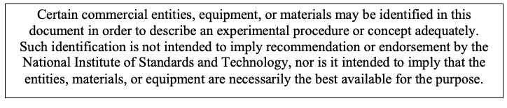
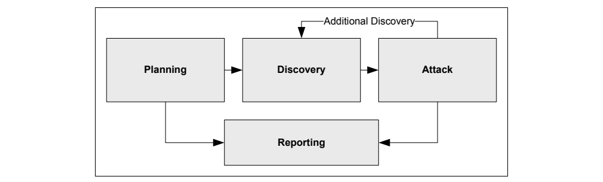

NIST SP 800-115 日本語訳
英語タイトル : Technical Guide to Information Security Testing and Assessment日本語タイトル : 情報セキュリティのテストと評価に関する技術ガイド
公開日 : 2008-09-30
原文URL : https://csrc.nist.gov/pubs/sp/800/115/final
翻訳編集 : 自動生成（有志による非公式の日本語訳）, 原文取得日 : 2026-09-30, 訳文 : 835 / 835 ブロック
[要約] SP 800-115 は、情報セキュリティ評価の基本的な技術面を扱い、組織が利用できる技術的なテストと検査の方法・手法を示す指針です。レビュー手法、対象の特定・分析手法、対象の脆弱性検証手法を説明し、評価の計画と実施、結果の分析、データの取扱いにも触れます。評価者に実施方法とシステムやネットワークへの影響に関する知見を提供し、評価を成功させて組織のセキュリティ態勢に好ましい影響を与えることを目指します。
［NIST のロゴ。公的な標章のため、この非公式サイトには掲載していない。原本 PDF を参照。］
Special Publication 800-115
特別刊行物 800-115
Technical Guide to Information Security Testing and Assessment
情報セキュリティのテストおよび評価に関する技術ガイド
Recommendations of the National Institute of Standards and Technology
米国国立標準技術研究所の推奨事項
Karen Scarfone Murugiah Souppaya Amanda Cody Angela Orebaugh
Karen Scarfone、Murugiah Souppaya、Amanda Cody、Angela Orebaugh
NIST Special Publication 800-115
NIST Special Publication 800-115
Technical Guide to Information Security Testing and Assessment
情報セキュリティのテストと評価に関する技術ガイド
Recommendations of the National Institute of Standards and Technology
米国国立標準技術研究所の推奨事項
Karen Scarfone Murugiah Souppaya Amanda Cody Angela Orebaugh
Karen Scarfone Murugiah Souppaya Amanda Cody Angela Orebaugh
Computer Security Division Information Technology Laboratory National Institute of Standards and Technology Gaithersburg, MD 20899-8930
コンピュータセキュリティ部門 情報技術研究所 米国国立標準技術研究所 Gaithersburg, MD 20899-8930
September 2008
2008年9月
U.S. Department of Commerce
米国商務省
Carlos M. Gutierrez, Secretary
Carlos M. Gutierrez, 長官
National Institute of Standards and Technology
米国国立標準技術研究所
Dr. Patrick D. Gallagher, Deputy Director
Dr. Patrick D. Gallagher, 副所長
Reports on Computer Systems Technology
コンピュータシステム技術報告書
The Information Technology Laboratory (ITL) at the National Institute of Standards and Technology (NIST) promotes the U.S. economy and public welfare by providing technical leadership for the nation’s measurement and standards infrastructure. ITL develops tests, test methods, reference data, proof of concept implementations, and technical analysis to advance the development and productive use of information technology (IT). ITL’s responsibilities include the development of technical, physical, administrative, and management standards and guidelines for the cost-effective security and privacy of sensitive unclassified information in Federal computer systems. This Special Publication 800-series reports on ITL’s research, guidance, and outreach efforts in computer security and its collaborative activities with industry, government, and academic organizations.
米国国立標準技術研究所（NIST）の情報技術研究所（ITL）は、米国の計測および標準インフラストラクチャに技術的リーダーシップを提供することで、米国経済と公共の福祉を促進している。ITLは、情報技術（IT）の開発と生産的な利用を推進するため、試験、試験方法、参照データ、概念実証実装、および技術分析を開発している。ITLの責務には、連邦コンピュータシステムにおける機密扱いではない機微情報の費用対効果の高いセキュリティとプライバシーを実現するための、技術的、物理的、管理的およびマネジメント上の標準とガイドラインの策定が含まれる。この特別刊行物800シリーズは、コンピュータセキュリティに関するITLの研究、指針の策定および普及活動、ならびに産業界、政府機関、学術機関との協力活動について報告する。
National Institute of Standards and Technology Special Publication 800-115 Natl. Inst. Stand. Technol. Spec. Publ. 800-115, 80 pages (Sep. 2008)
National Institute of Standards and Technology Special Publication 800-115、Natl. Inst. Stand. Technol. Spec. Publ. 800-115、80ページ（2008年9月）
Certain commercial entities, equipment, or materials may be identified in this document in order to describe an experimental procedure or concept adequately. Such identification is not intended to imply recommendation or endorsement by the National Institute of Standards and Technology, nor is it intended to imply that the entities, materials, or equipment are necessarily the best available for the purpose.
原本PDFの抜粋画像

実験手順または概念を十分に説明するため、本書では特定の商業事業者、機器または材料を挙げることがある。このような特定は、米国国立標準技術研究所（NIST）による推奨または推奨採用を意味するものではなく、また、当該事業者、材料または機器が目的に最適な入手可能品であることを意味するものでもない。
Acknowledgements
謝辞
The authors, Karen Scarfone and Murugiah Souppaya of the National Institute of Standards and Technology (NIST) and Amanda Cody and Angela Orebaugh of Booz Allen Hamilton, wish to thank their colleagues who reviewed drafts of this document and contributed to its technical content. The authors would like to acknowledge John Connor, Tim Grance, Blair Heiserman, Arnold Johnson, Richard Kissel, Ron Ross, Matt Scholl, and Pat Toth of NIST and Steve Allison, Derrick Dicoi, Daniel Owens, Victoria Thompson, Selena Tonti, Theodore Winograd, and Gregg Zepp of Booz Allen Hamilton for their keen and insightful assistance throughout the development of the document. The authors appreciate all the feedback provided during the public comment period, especially by Marshall Abrams, Karen Quigg, and others from MITRE Corporation; William Mills of SphereCom Enterprises; and representatives from the Financial Management Service (Department of the Treasury) and the Department of Health and Human Services (HHS).
著者である米国国立標準技術研究所（NIST）のKaren ScarfoneおよびMurugiah Souppaya、ならびにBooz Allen HamiltonのAmanda CodyおよびAngela Orebaughは、本書の草稿をレビューし、その技術的内容に貢献した同僚に謝意を表する。著者らは、本書の作成全体を通じて鋭く洞察に富む支援を提供した、NISTのJohn Connor、Tim Grance、Blair Heiserman、Arnold Johnson、Richard Kissel、Ron Ross、Matt Scholl、Pat Toth、およびBooz Allen HamiltonのSteve Allison、Derrick Dicoi、Daniel Owens、Victoria Thompson、Selena Tonti、Theodore Winograd、Gregg Zeppに感謝する。また著者らは、パブリックコメント期間中に寄せられたすべてのフィードバック、特に、MITRE CorporationのMarshall Abrams、Karen Quiggほか、SphereCom EnterprisesのWilliam Mills、ならびにFinancial Management Service（財務省）および保健福祉省（HHS）の代表者から寄せられたフィードバックに感謝する。
Trademark Information
商標情報
All names are registered trademarks or trademarks of their respective companies.
すべての名称は、それぞれの企業の登録商標または商標である。
Table of Contents
目次
List of Appendices
付録一覧
List of Tables
表一覧
List of Figures
図一覧
Executive Summary
エグゼクティブサマリー
An information security assessment is the process of determining how effectively an entity being assessed (e.g., host, system, network, procedure, person—known as the assessment object) meets specific security objectives. Three types of assessment methods can be used to accomplish this—testing, examination, and interviewing. Testing is the process of exercising one or more assessment objects under specified conditions to compare actual and expected behaviors. Examination is the process of checking, inspecting, reviewing, observing, studying, or analyzing one or more assessment objects to facilitate understanding, achieve clarification, or obtain evidence. Interviewing is the process of conducting discussions with individuals or groups within an organization to facilitate understanding, achieve clarification, or identify the location of evidence. Assessment results are used to support the determination of security control effectiveness over time.
情報セキュリティ評価とは、評価される実体（例えば、ホスト、システム、ネットワーク、手順、人。これらを評価対象と呼ぶ）が、特定のセキュリティ目標をどの程度効果的に満たしているかを判定するプロセスである。これを行うために、テスト、検査、インタビューの3種類の評価方法を使用できる。テストとは、指定された条件下で1つ以上の評価対象を動作させ、実際の挙動と期待される挙動を比較するプロセスである。検査とは、理解を促進し、明確化を図り、または証拠を得るために、1つ以上の評価対象を確認、点検、レビュー、観察、調査または分析するプロセスである。インタビューとは、理解を促進し、明確化を図り、または証拠の所在を特定するために、組織内の個人またはグループと議論を行うプロセスである。評価結果は、時間の経過に伴うセキュリティ管理策の有効性の判定を支援するために使用される。
This document is a guide to the basic technical aspects of conducting information security assessments. It presents technical testing and examination methods and techniques that an organization might use as part of an assessment, and offers insights to assessors on their execution and the potential impact they may have on systems and networks. For an assessment to be successful and have a positive impact on the security posture of a system (and ultimately the entire organization), elements beyond the execution of testing and examination must support the technical process. Suggestions for these activities—including a robust planning process, root cause analysis, and tailored reporting—are also presented in this guide.
本書は、情報セキュリティ評価を実施する際の基本的な技術面を扱うガイドである。評価の一環として組織が利用し得る技術的なテストおよび検査の方法と手法を示し、その実施方法ならびにシステムやネットワークに及ぼし得る影響について評価者に知見を提供する。評価を成功させ、システム（ひいては組織全体）のセキュリティ態勢に好ましい影響を与えるには、テストおよび検査の実施以外の要素によっても技術プロセスを支える必要がある。本ガイドでは、堅牢な計画プロセス、根本原因分析、対象に応じた報告など、こうした活動に関する提案も示す。
The processes and technical guidance presented in this document enable organizations to:
本書に示すプロセスおよび技術的指針により、組織は次のことが可能になる。
•Develop information security assessment policy, methodology, and individual roles and responsibilities related to the technical aspects of assessment
•情報セキュリティ評価ポリシーおよび方法論を策定し、評価の技術面に関連する個々の役割と責任を定める。
•Accurately plan for a technical information security assessment by providing guidance on determining which systems to assess and the approach for assessment, addressing logistical considerations, developing an assessment plan, and ensuring legal and policy considerations are addressed
•評価対象システムと評価アプローチの決定、実施体制上の考慮事項への対処、評価計画の策定、法的要件およびポリシー上の要件への対応を通じて、技術的な情報セキュリティ評価を適切に計画する。
•Safely and effectively execute a technical information security assessment using the presented methods and techniques, and respond to any incidents that may occur during the assessment
•本書に示す方法および手法を用いて技術的な情報セキュリティ評価を安全かつ効果的に実施し、評価中に発生する可能性のあるインシデントに対応する。
•Appropriately handle technical data (collection, storage, transmission, and destruction) throughout the assessment process
•評価プロセス全体を通じて、技術データ（収集、保管、伝送および破棄）を適切に取り扱う。
•Conduct analysis and reporting to translate technical findings into risk mitigation actions that will improve the organization’s security posture.
•分析および報告を行い、技術的な所見を、組織のセキュリティ態勢を改善するリスク緩和措置へと結び付ける。
The information presented in this publication is intended to be used for a variety of assessment purposes. For example, some assessments focus on verifying that a particular security control (or controls) meets requirements, while others are intended to identify, validate, and assess a system’s exploitable security weaknesses. Assessments are also performed to increase an organization’s ability to maintain a proactive computer network defense. Assessments are not meant to take the place of implementing security controls and maintaining system security.
本刊行物に示す情報は、さまざまな評価目的に使用されることを意図している。例えば、特定のセキュリティ管理策（または複数の管理策）が要件を満たしていることの検証に重点を置く評価もあれば、システムの悪用可能なセキュリティ上の弱点を特定、検証および評価することを目的とする評価もある。評価は、プロアクティブなコンピュータネットワーク防御を維持する組織の能力を高めるためにも実施される。評価は、セキュリティ管理策の実装およびシステムセキュリティの維持に取って代わるものではない。
To accomplish technical security assessments and ensure that technical security testing and examinations provide maximum value, NIST recommends that organizations:
技術的なセキュリティ評価を遂行し、技術的なセキュリティテストおよび検査が最大限の価値をもたらすことを確実にするため、NISTは組織に次のことを推奨する。
•Establish an information security assessment policy. This identifies the organization’s requirements for executing assessments, and provides accountability for the appropriate individuals to ensure assessments are conducted in accordance with these requirements. Topics that an assessment policy should address include the organizational requirements with which assessments must comply, roles and responsibilities, adherence to an established assessment methodology, assessment frequency, and documentation requirements.
•情報セキュリティ評価ポリシーを策定する。このポリシーは、評価を実施するための組織要件を定め、評価がそれらの要件に従って実施されるよう適切な担当者に説明責任を持たせる。評価ポリシーで扱うべき事項には、評価が遵守しなければならない組織要件、役割と責任、確立済みの評価方法論の遵守、評価頻度、および文書化要件が含まれる。
•Implement a repeatable and documented assessment methodology. This provides consistency and structure to assessments, expedites the transition of new assessment staff, and addresses resource constraints associated with assessments. Using such a methodology enables organizations to maximize the value of assessments while minimizing possible risks introduced by certain technical assessment techniques. These risks can range from not gathering sufficient information on the organization’s security posture for fear of impacting system functionality to affecting the system or network availability by executing techniques without the proper safeguards in place. Processes that minimize risk caused by certain assessment techniques include using skilled assessors, developing comprehensive assessment plans, logging assessor activities, performing testing off-hours, and conducting tests on duplicates of production systems (e.g., development systems). Organizations need to determine the level of risk they are willing to accept for each assessment, and tailor their approaches accordingly.
•再現可能で文書化された評価方法論を導入する。この方法論は、評価に一貫性と構造をもたらし、新たな評価担当者への移行を迅速化するとともに、評価に伴うリソース制約に対処する。この方法論を用いることで、組織は評価の価値を最大化しつつ、一部の技術的評価手法がもたらす可能性のあるリスクを最小化できる。こうしたリスクには、システム機能への影響を懸念して組織のセキュリティ態勢に関する情報を十分に収集できないことから、適切な保護措置を講じずに手法を実行してシステムまたはネットワークの可用性に影響を及ぼすことまで含まれる。特定の評価手法に伴うリスクを最小化するプロセスには、熟練した評価者の起用、包括的な評価計画の策定、評価者の活動の記録、通常の業務時間外でのテスト、および本番システムの複製（例えば開発システム）に対するテストが含まれる。組織は各評価について許容するリスクの水準を決定し、それに応じてアプローチを調整する必要がある。
•Determine the objectives of each security assessment, and tailor the approach accordingly. Security assessments have specific objectives, acceptable levels of risk, and available resources. Because no individual technique provides a comprehensive picture of an organization’s security when executed alone, organizations should use a combination of techniques. This also helps organizations to limit risk and resource usage.
•各セキュリティ評価の目的を定め、それに応じてアプローチを調整する。セキュリティ評価には、それぞれ固有の目的、許容可能なリスク水準、および利用可能なリソースがある。単独で実施するいずれの手法も組織のセキュリティ状況を包括的に示すものではないため、組織は複数の手法を組み合わせて使用するべきである。これにより、リスクとリソースの使用を抑えることにも役立つ。
•Analyze findings, and develop risk mitigation techniques to address weaknesses. To ensure that security assessments provide their ultimate value, organizations should conduct root cause analysis upon completion of an assessment to enable the translation of findings into actionable mitigation techniques. These results may indicate that organizations should address not only technical weaknesses, but weaknesses in organizational processes and procedures as well.
•所見を分析し、弱点に対処するためのリスク緩和手法を策定する。セキュリティ評価から最大限の価値を得るため、組織は評価完了後に根本原因分析を行い、所見を実行可能な緩和手法へと結び付けるべきである。分析結果によっては、技術的な弱点だけでなく、組織のプロセスや手順における弱点にも対処すべきことが示される場合がある。
1. Introduction
1. はじめに
1.1 Authority
1.1 権限
The National Institute of Standards and Technology (NIST) developed this document in furtherance of its statutory responsibilities under the Federal Information Security Management Act (FISMA) of 2002, Public Law 107-347.
米国国立標準技術研究所（NIST）は、2002年連邦情報セキュリティ管理法（FISMA）、Public Law 107-347に基づく法定責務を遂行するため、本書を作成した。
NIST is responsible for developing standards and guidelines, including minimum requirements, for providing adequate information security for all agency operations and assets; but such standards and guidelines shall not apply to national security systems. This guideline is consistent with the requirements of the Office of Management and Budget (OMB) Circular A-130, Section 8b (3), “Securing Agency Information Systems,” as analyzed in A-130, Appendix IV: Analysis of Key Sections. Supplemental information is provided in A-130, Appendix III.
NISTは、国家安全保障システムを除くすべての政府機関の業務および資産に適切な情報セキュリティを提供するため、最低要件を含む標準およびガイドラインを策定する責任を負う。このガイドラインは、Office of Management and Budget（OMB）Circular A-130の第8b（3）節「政府機関情報システムのセキュリティ確保」の要件と整合しており、これらはA-130の付録IV「主要節の分析」で分析されている。補足情報はA-130の付録IIIに記載されている。
This guideline has been prepared for use by federal agencies. It may be used by nongovernmental organizations on a voluntary basis and is not subject to copyright, though attribution is desired.
本ガイドラインは、連邦政府機関による使用のために作成された。非政府組織も任意で使用してよく、著作権の対象ではないが、出典の明記が望まれる。
Nothing in this document should be taken to contradict standards and guidelines made mandatory and binding on federal agencies by the Secretary of Commerce under statutory authority; nor should these guidelines be interpreted as altering or superseding the existing authorities of the Secretary of Commerce, Director of the OMB, or any other federal official.
本書のいかなる内容も、法定権限に基づき商務長官が連邦政府機関に義務付け、拘束力を持たせた標準およびガイドラインに反するものと解釈してはならない。また、本ガイドラインは、商務長官、OMB長官、またはその他の連邦政府職員が有する既存の権限を変更または置き換えるものと解釈してはならない。
1.2 Purpose and Scope
1.2 目的および適用範囲
The purpose of this document is to provide guidelines for organizations on planning and conducting technical information security testing and assessments, analyzing findings, and developing mitigation strategies. It provides practical recommendations for designing, implementing, and maintaining technical information relating to security testing and assessment processes and procedures, which can be used for several purposes—such as finding vulnerabilities in a system or network and verifying compliance with a policy or other requirements. This guide is not intended to present a comprehensive information security testing or assessment program, but rather an overview of the key elements of technical security testing and assessment with emphasis on specific techniques, their benefits and limitations, and recommendations for their use.
本書の目的は、技術的な情報セキュリティのテストおよび評価を計画・実施し、所見を分析し、緩和戦略を策定するための指針を組織に提供することである。セキュリティのテストおよび評価に関するプロセスと手順について、技術情報を設計、実装、維持するための実践的な推奨事項を示す。これらは、システムやネットワークの脆弱性の発見、ポリシーまたはその他の要件への準拠の検証など、複数の目的に利用できる。本ガイドは、包括的な情報セキュリティのテストまたは評価プログラムを提示するものではなく、特定の手法、その利点と限界、および利用に関する推奨事項に重点を置き、技術的なセキュリティテストと評価の主要要素を概説するものである。
This document replaces NIST Special Publication 800-42, Guideline on Network Security Testing.
本書は、NIST Special Publication 800-42「Guideline on Network Security Testing」（ネットワークセキュリティテストに関するガイドライン）を置き換えるものである。
1.3 Audience
1.3 対象読者
This guide is intended for use by computer security staff and program managers, system and network administrators, and other technical staff who are responsible for the technical aspects of preparing, operating, and securing systems and network infrastructures. Managers can also use the information presented to facilitate the technical decision-making processes associated with security testing and assessments. Material in this document is technically oriented, and assumes that readers have at least a basic understanding of system and network security.
本ガイドは、コンピュータセキュリティ担当者およびプログラムマネージャー、システムおよびネットワーク管理者、ならびにシステムやネットワーク基盤の準備、運用、セキュリティ確保に関する技術面を担当するその他の技術スタッフを対象としている。管理者も、セキュリティのテストおよび評価に関連する技術的な意思決定プロセスを支援するため、本書の情報を利用できる。本書の内容は技術的なものであり、読者がシステムおよびネットワークのセキュリティについて少なくとも基本的な理解を有することを前提としている。
1.4 Document Structure
1.4 文書の構成
The remainder of this document is organized into seven major sections:
本書の残りの部分は、次の7つの主要な節で構成されている。
•Section 2 presents an overview of information security assessments, including policies, roles and responsibilities, methodologies, and techniques.
•第2節では、ポリシー、役割と責任、方法論、手法を含む情報セキュリティ評価の概要を説明する。
•Section 3 provides a detailed description of several technical examination techniques, including documentation review, log review, network sniffing, and file integrity checking.
•第3節では、文書レビュー、ログレビュー、ネットワークスニッフィング、ファイル完全性チェックなど、複数の技術的検査手法を詳しく説明する。
•Section 4 describes several techniques for identifying targets and analyzing them for potential vulnerabilities. Examples of these techniques include network discovery and vulnerability scanning.
•第4節では、対象を特定し、潜在的な脆弱性を分析するための複数の手法を説明する。これらの手法の例として、ネットワーク探索および脆弱性スキャンがある。
•Section 5 explains techniques commonly used to validate the existence of vulnerabilities, such as password cracking and penetration testing.
•第5節では、パスワードクラッキングやペネトレーションテストなど、脆弱性の存在を検証するために一般的に用いられる手法を説明する。
•Section 6 presents an approach and process for planning a security assessment.
•第6節では、セキュリティ評価を計画するためのアプローチとプロセスを示す。
•Section 7 discusses factors that are key to the execution of security assessments, including coordination, the assessment itself, analysis, and data handling.
•第7節では、調整、評価の実施、分析、データの取扱いなど、セキュリティ評価の実行における主要な要素を説明する。
•Section 8 presents an approach for reporting assessment findings, and provides an overview of remediation activities.
•第8節では、評価所見の報告方法を示し、是正活動の概要を説明する。
This guide also contains the following appendices:
本ガイドには、次の付録も含まれている。
•Appendix A describes two live operating system (OS) CD distributions that allow the user to boot a computer to a CD containing a fully operational OS and testing tools.
•付録Aでは、コンピュータを起動すると、完全に動作するオペレーティングシステム（OS）とテストツールを収録したCDから起動できる、2種類のライブOS CDディストリビューションについて説明する。
•Appendix B provides a template for creating Rules of Engagement (ROE).
•付録Bでは、ルール・オブ・エンゲージメント（ROE）を作成するためのテンプレートを示す。
•Appendix C briefly discusses application security assessment.
•付録Cでは、アプリケーションセキュリティ評価について簡潔に説明する。
•Appendix D contains recommendations for performing remote access testing.
•付録Dでは、リモートアクセスのテストを実施するための推奨事項を示す。
•Appendix E offers a list of resources that may facilitate the security assessment process.
•付録Eでは、セキュリティ評価プロセスに役立つ可能性のあるリソースの一覧を示す。
•Appendix F features a glossary of terms used throughout this document.
•付録Fでは、本書全体で使用される用語の用語集を掲載する。
•Appendix G provides a list of acronyms and abbreviations.
•付録Gでは、頭字語および略語の一覧を示す。
2. Security Testing and Examination Overview
2. セキュリティテストおよび検査の概要
An information security assessment is the process of determining how effectively an entity being assessed (e.g., host, system, network, procedure, person—known as the assessment object) meets specific security objectives. Three types of assessment methods can be used to accomplish this—testing, examination, and interviewing. Testing is the process of exercising one or more assessment objects under specified conditions to compare actual and expected behaviors. Examination is the process of checking, inspecting, reviewing, observing, studying, or analyzing one or more assessment objects to facilitate understanding, achieve clarification, or obtain evidence. Interviewing is the process of conducting discussions with individuals or groups within an organization to facilitate understanding, achieve clarification, or identify the location of evidence. Assessment results are used to support the determination of security control effectiveness over time.
情報セキュリティ評価とは、評価される実体（例えば、ホスト、システム、ネットワーク、手順、人。これらを評価対象と呼ぶ）が、特定のセキュリティ目標をどの程度効果的に満たしているかを判定するプロセスである。これを行うために、テスト、検査、インタビューの3種類の評価方法を使用できる。テストとは、指定された条件下で1つ以上の評価対象を動作させ、実際の挙動と期待される挙動を比較するプロセスである。検査とは、理解を促進し、明確化を図り、または証拠を得るために、1つ以上の評価対象を確認、点検、レビュー、観察、調査または分析するプロセスである。インタビューとは、理解を促進し、明確化を図り、または証拠の所在を特定するために、組織内の個人またはグループと議論を行うプロセスである。評価結果は、時間の経過に伴うセキュリティ管理策の有効性の判定を支援するために使用される。
This publication addresses technical testing and examination techniques that can be used to identify, validate, and assess technical vulnerabilities and assist organizations in understanding and improving the security posture of their systems and networks. Security testing and examination is required by FISMA1 and other regulations. It is not meant to take the place of implementing security controls and maintaining system security, but to help organizations confirm that their systems are properly secured and identify any organization security requirements that are not met as well as other security weaknesses that should be addressed.
本刊行物では、技術的な脆弱性を特定、検証および評価し、組織がシステムおよびネットワークのセキュリティ態勢を理解して改善するのを支援するために利用できる、技術的なテストおよび検査の手法を扱う。セキュリティテストおよび検査は、FISMA1およびその他の規制によって求められている。セキュリティ管理策の実装やシステムセキュリティの維持に取って代わるものではなく、組織がシステムのセキュリティが適切に確保されていることを確認し、満たされていない組織のセキュリティ要件および対処すべきその他のセキュリティ上の弱点を特定するのに役立つものである。
This section provides an overview of information security assessment methodologies and technical testing and examination techniques.
本節では、情報セキュリティ評価の方法論ならびに技術的なテストおよび検査の手法の概要を示す。
2.1 Information Security Assessment Methodology
2.1 情報セキュリティ評価方法論
A repeatable and documented security assessment methodology is beneficial in that it can:
再現可能で文書化されたセキュリティ評価方法論は、次のことを可能にする点で有益である。
•Provide consistency and structure to security testing, which can minimize testing risks
•セキュリティテストに一貫性と構造をもたらし、テストのリスクを低減できる。
•Expedite the transition of new assessment staff
•新しい評価担当者への移行を迅速化する。
•Address resource constraints associated with security assessments.
•セキュリティ評価に伴うリソース上の制約に対処する。
Because information security assessment requires resources such as time, staff, hardware, and software, resource availability is often a limiting factor in the type and frequency of security assessments. Evaluating the types of security tests and examinations the organization will execute, developing an appropriate methodology, identifying the resources required, and structuring the assessment process to support expected requirements can mitigate the resource challenge. This gives the organization the ability to reuse pre-established resources such as trained staff and standardized testing platforms; decreases time required to conduct the assessment and the need to purchase testing equipment and software; and reduces overall assessment costs.
情報セキュリティ評価には時間、人員、ハードウェア、ソフトウェアなどのリソースが必要であるため、リソースの利用可能性がセキュリティ評価の種類および頻度を制限する要因となることが多い。組織が実施するセキュリティテストおよび検査の種類を評価し、適切な方法論を策定し、必要なリソースを特定し、想定される要件を支えるように評価プロセスを構成することで、リソース上の課題を緩和できる。これにより、組織は、訓練済みの人員や標準化されたテストプラットフォームなど、あらかじめ整備されたリソースを再利用できるようになり、評価の実施に必要な時間ならびにテスト用の機器およびソフトウェアを購入する必要性が減り、評価全体のコストが削減される。
A phased information security assessment methodology offers a number of advantages. The structure is easy to follow, and provides natural breaking points for staff transition. Its methodology should contain at minimum the following phases:
段階的な情報セキュリティ評価方法論には、多くの利点がある。その構成は従いやすく、担当者の交代のための自然な区切りを提供する。その方法論には、少なくとも次のフェーズを含めるべきである。
•Planning. Critical to a successful security assessment, the planning phase is used to gather information needed for assessment execution—such as the assets to be assessed, the threats of interest against the assets, and the security controls to be used to mitigate those threats—and to develop the assessment approach. A security assessment should be treated as any other project, with a project management plan to address goals and objectives, scope, requirements, team roles and responsibilities, limitations, success factors, assumptions, resources, timeline, and deliverables. Section 6 of this guide covers planning.
•計画。セキュリティ評価を成功させるうえで重要な計画フェーズでは、評価実施に必要な情報（評価対象の資産、資産に対する関心対象の脅威、脅威を緩和するために用いるセキュリティ管理策など）を収集し、評価アプローチを策定する。セキュリティ評価は他のプロジェクトと同様に扱い、目標と目的、範囲、要件、チームの役割と責任、制約、成功要因、前提条件、リソース、スケジュール、および成果物を扱うプロジェクト管理計画を作成するべきである。本ガイドの第6節では計画について説明する。
•Execution. Primary goals for the execution phase are to identify vulnerabilities and validate them when appropriate. This phase should address activities associated with the intended assessment method and technique. Although specific activities for this phase differ by assessment type, upon completion of this phase assessors will have identified system, network, and organizational process vulnerabilities. This phase is discussed in more depth in Section 7.
•実行。実行フェーズの主な目標は、脆弱性を特定し、適切な場合にはその存在を検証することである。このフェーズでは、意図する評価方法および手法に関連する活動を扱うべきである。このフェーズの具体的な活動は評価の種類によって異なるが、完了時には評価者がシステム、ネットワーク、および組織プロセスの脆弱性を特定していることになる。このフェーズについては第7節で詳しく説明する。
•Post-Execution. The post-execution phase focuses on analyzing identified vulnerabilities to determine root causes, establish mitigation recommendations, and develop a final report. Section 8 of this guide addresses reporting and mitigation.
•実行後。実行後フェーズでは、特定した脆弱性を分析して根本原因を判断し、緩和策を推奨し、最終報告書を作成する。本ガイドの第8節では報告と緩和について説明する。
Several accepted methodologies exist for conducting different types of information security assessments. References to several of these methodologies are found in Appendix E.2 For example, NIST has created a methodology—documented in Special Publication (SP) 800-53A, Guide for Assessing the Security Controls in Federal Information Systems—which offers suggestions for assessing the effectiveness of the security controls outlined in NIST SP 800-53.3 Another widely used assessment methodology is the Open Source Security Testing Methodology Manual (OSSTMM).4 Because there are numerous reasons to conduct assessments, an organization may want to use multiple methodologies. This publication offers recommendations for technical testing and examination techniques that can be used for many assessment methodologies and leveraged for many assessment purposes.
さまざまな種類の情報セキュリティ評価を実施するために、広く認められた方法論が複数ある。これらの方法論の一部は付録Eに参考情報として記載されている。2 例えば、NISTは特別刊行物（SP）800-53A「連邦情報システムのセキュリティ管理策を評価するためのガイド」に記載された方法論を策定しており、NIST SP 800-53に示されたセキュリティ管理策の有効性を評価するための提案を行っている。3 もう一つの広く利用されている評価方法論は、Open Source Security Testing Methodology Manual（OSSTMM）である。4評価を実施する理由は多岐にわたるため、組織は複数の方法論を使用することがある。本刊行物では、多くの評価方法論で利用でき、さまざまな評価目的に適用できる技術的なテストおよび検査手法を推奨する。
2.2 Technical Assessment Techniques
2.2 技術的評価手法
Dozens of technical security testing and examination techniques exist that can be used to assess the security posture of systems and networks. The most commonly used techniques from the standpoint of this document will be discussed in more depth later in this guide, and are grouped into the following three categories:
システムおよびネットワークのセキュリティ態勢を評価するために利用できる技術的なセキュリティテストおよび検査手法は数十種類ある。本書の観点から特に一般的な手法については、本ガイドの後半で詳しく説明し、次の3つのカテゴリーに分類する。
•Review Techniques. These are examination techniques used to evaluate systems, applications, networks, policies, and procedures to discover vulnerabilities, and are generally conducted manually. They include documentation, log, ruleset, and system configuration review; network sniffing; and file integrity checking. Section 3 provides additional information on review techniques.
•レビュー手法。システム、アプリケーション、ネットワーク、ポリシーおよび手順を評価して脆弱性を発見するための検査手法であり、通常は手作業で実施する。文書、ログ、ルールセットおよびシステム構成のレビュー、ネットワークスニッフィング、ファイル完全性チェックが含まれる。レビュー手法の詳細は第3節で説明する。
•Target Identification and Analysis Techniques. These testing techniques can identify systems, ports, services, and potential vulnerabilities, and may be performed manually but are generally performed using automated tools. They include network discovery, network port and service identification, vulnerability scanning, wireless scanning, and application security examination. Further discussion of these techniques is presented in Section 4.
•対象の特定および分析手法。システム、ポート、サービスおよび潜在的な脆弱性を特定するテスト手法である。手作業で実施する場合もあるが、通常は自動化ツールを使用する。ネットワーク探索、ネットワークポートおよびサービスの識別、脆弱性スキャン、無線スキャン、アプリケーションセキュリティ検査が含まれる。これらの手法については第4節でさらに説明する。
•Target Vulnerability Validation Techniques. These testing techniques corroborate the existence of vulnerabilities, and may be performed manually or by using automatic tools, depending on the specific technique used and the skill of the test team. Target vulnerability validation techniques include password cracking, penetration testing, social engineering, and application security testing. More information on these techniques is found in Section 5.
•対象の脆弱性検証手法。これらのテスト手法は、脆弱性の存在を裏付けるものである。手作業で実施するか自動化ツールを使用するかは、具体的な手法とテストチームのスキルに応じて異なる。対象の脆弱性検証手法には、パスワードクラッキング、ペネトレーションテスト、ソーシャルエンジニアリング、およびアプリケーションセキュリティテストが含まれる。これらの手法の詳細は第5節に記載されている。
Since no one technique can provide a complete picture of the security of a system or network, organizations should combine appropriate techniques to ensure robust security assessments. For example, penetration testing usually relies on performing both network port/service identification and vulnerability scanning to identify hosts and services that may be targets for future penetration. Also, multiple technical ways exist to meet an assessment requirement, such as determining whether patches have been applied properly. This publication focuses on explaining how these different technical techniques can be performed, and does not specify which techniques should be used for which circumstances—thus providing organizations with the flexibility to choose the techniques that best meet their requirements.
いかなる単一の手法も、システムまたはネットワークのセキュリティの全体像を示すことはできないため、組織は、堅牢なセキュリティ評価を確実にするために適切な手法を組み合わせるべきである。例えば、ペネトレーションテストは通常、将来の侵入の標的となり得るホストおよびサービスを特定するために、ネットワークポート／サービスの識別と脆弱性スキャンの両方を実施することに依拠している。また、パッチが適切に適用されているかどうかの判定など、1つの評価要件を満たすための技術的な方法は複数存在する。本刊行物は、こうしたさまざまな技術的手法をどのように実施できるかの説明に重点を置いており、どの状況でどの手法を使用すべきかは規定しない。これにより、組織は自らの要件に最もよく合致する手法を選択する柔軟性を得られる。
In addition to the technical techniques described in this publication, there are many non-technical techniques that may be used in addition to or instead of the technical techniques. One example is physical security testing, which confirms the existence of physical security vulnerabilities by attempting to circumvent locks, badge readers, and other physical security controls, typically to gain unauthorized access to specific hosts. Another example of a non-technical technique is manual asset identification. An organization may choose to identify assets to be assessed through asset inventories, physical walkthroughs of facilities, and other non-technical means, instead of relying on technical techniques for asset identification. Details on non-technical techniques are outside the scope of this publication, but it is important to recognize the value of non-technical techniques and to consider when they may be more appropriate to use than their technical counterparts.
本刊行物で説明する技術的手法に加えて、技術的手法と併用またはその代わりに利用できる非技術的手法も数多くある。一例は物理セキュリティテストである。これは、通常、特定のホストへの不正アクセスを得るため、錠、バッジリーダー、その他の物理的セキュリティ管理策の回避を試み、物理的なセキュリティ脆弱性の存在を確認する。非技術的手法の別の例は、手作業による資産の特定である。組織は、資産特定に技術的手法を使う代わりに、資産台帳、施設内の実地確認、その他の非技術的手段を通じて評価対象の資産を特定することがある。非技術的手法の詳細は本刊行物の適用範囲外であるが、その価値を認識し、技術的手法よりも適切な場合を検討することが重要である。
2.3 Comparing Tests and Examinations
2.3 テストと検査の比較
Examinations primarily involve the review of documents such as policies, procedures, security plans, security requirements, standard operating procedures, architecture diagrams, engineering documentation, asset inventories, system configurations, rulesets, and system logs. They are conducted to determine whether a system is properly documented, and to gain insight on aspects of security that are only available through documentation. This documentation identifies the intended design, installation, configuration, operation, and maintenance of the systems and network, and its review and cross-referencing ensures conformance and consistency. For example, an environment’s security requirements should drive documentation such as system security plans and standard operating procedures—so assessors should ensure that all plans, procedures, architectures, and configurations are compliant with stated security requirements and applicable policies. Another example is reviewing a firewall’s ruleset to ensure its compliance with the organization’s security policies regarding Internet usage, such as the use of instant messaging, peer-to-peer (P2P) file sharing, and other prohibited activities.
検査は主に、ポリシー、手順、セキュリティ計画、セキュリティ要件、標準作業手順書、アーキテクチャ図、エンジニアリング文書、資産インベントリ、システム構成、ルールセット、システムログなどの文書のレビューを伴う。検査は、システムが適切に文書化されているかを判定し、文書を通じてのみ得られるセキュリティの側面についての知見を得るために実施される。これらの文書は、システムおよびネットワークの意図された設計、導入、構成、運用および保守を明らかにするものであり、そのレビューと相互参照によって適合性と一貫性が確保される。例えば、環境のセキュリティ要件は、システムセキュリティ計画や標準作業手順書などの文書の内容を方向付けるべきである。したがって評価者は、すべての計画、手順、アーキテクチャおよび構成が、明示されたセキュリティ要件および適用されるポリシーに準拠していることを確認すべきである。別の例として、ファイアウォールのルールセットをレビューし、インスタントメッセージング、ピアツーピア（P2P）ファイル共有、その他の禁止された活動の利用など、インターネット利用に関する組織のセキュリティポリシーに準拠していることを確認することが挙げられる。
Examinations typically have no impact on the actual systems or networks in the target environment aside from accessing necessary documentation, logs, or rulesets.5 However, if system configuration files or logs are to be retrieved from a given system such as a router or firewall, only system administrators and similarly trained individuals should undertake this work to ensure that settings are not inadvertently modified or deleted.
検査は通常、必要な文書、ログ、ルールセットにアクセスする場合を除き、対象環境の実際のシステムやネットワークに影響を与えない。5ただし、ルーターやファイアウォールなどのシステムからシステム構成ファイルまたはログを取得する場合は、設定が誤って変更または削除されないよう、システム管理者または同等の訓練を受けた担当者のみが作業を行うべきである。
Testing involves hands-on work with systems and networks to identify security vulnerabilities, and can be executed across an entire enterprise or on selected systems. The use of scanning and penetration techniques can provide valuable information on potential vulnerabilities and predict the likelihood that an adversary or intruder will be able to exploit them. Testing also allows organizations to measure levels of compliance in areas such as patch management, password policy, and configuration management.
テストでは、セキュリティ脆弱性を特定するためにシステムやネットワークを実際に操作する。企業全体に対して実施することも、選択したシステムに対して実施することもできる。スキャン手法や侵入手法を利用すると、潜在的な脆弱性に関する有益な情報を得られ、敵対者または侵入者がそれらを悪用できる可能性を予測できる。また、パッチ管理、パスワードポリシー、構成管理などの領域における準拠状況を測定することもできる。
Although testing can provide a more accurate picture of an organization’s security posture than what is gained through examinations, it is more intrusive and can impact systems or networks in the target environment. The level of potential impact depends on the specific types of testing techniques used, which can interact with the target systems and networks in various ways—such as sending normal network packets to determine open and closed ports, or sending specially crafted packets to test for vulnerabilities. Any time that a test or tester directly interacts with a system or network, the potential exists for unexpected system halts and other denial of service conditions. Organizations should determine their acceptable levels of intrusiveness when deciding which techniques to use. Excluding tests known to create denial of service conditions and other disruptions can help reduce these negative impacts.
テストは、検査を通じて得られるものよりも正確に組織のセキュリティ態勢を把握できるが、より侵襲的であり、対象環境のシステムまたはネットワークに影響を及ぼすおそれがある。潜在的な影響の程度は、使用するテスト手法の具体的な種類によって決まる。これらの手法は、開いているポートと閉じているポートを判定するために通常のネットワークパケットを送信する、脆弱性の有無をテストするために特別に細工したパケットを送信するなど、さまざまな形で対象のシステムおよびネットワークと相互作用し得る。テストまたはテスト担当者がシステムまたはネットワークと直接相互作用するときは常に、予期しないシステム停止やその他のサービス拒否状態が生じる可能性がある。組織は、使用する手法を決定する際に、許容できる侵襲性の水準を判断すべきである。サービス拒否状態やその他の中断を引き起こすことが分かっているテストを除外することは、こうした悪影響の低減に役立ち得る。
Testing does not provide a comprehensive evaluation of the security posture of an organization, and often has a narrow scope because of resource limitations—particularly in the area of time. Malicious attackers, on the other hand, can take whatever time they need to exploit and penetrate a system or network. Also, while organizations tend to avoid using testing techniques that impact systems or networks, attackers are not bound by this constraint and use whatever techniques they feel necessary. As a result, testing is less likely than examinations to identify weaknesses related to security policy and configuration. In many cases, combining testing and examination techniques can provide a more accurate view of security.
テストは、組織のセキュリティ態勢を包括的に評価するものではない。また、特に時間に関するリソース制約のため、対象範囲が狭くなることがよくある。一方、悪意ある攻撃者はシステムやネットワークへの侵入・悪用に必要な時間を自由にかけることができる。また、組織はシステムやネットワークに影響するテスト手法を避ける傾向があるが、攻撃者にはその制約がなく、必要だと判断した手法を使用する。その結果、テストは検査と比べて、セキュリティポリシーや構成に関連する弱点を発見しにくい傾向がある。多くの場合、テストと検査の手法を組み合わせることで、セキュリティをより正確に把握できる。
2.4 Testing Viewpoints
2.4 テストの視点
Tests can be performed from a number of viewpoints—for example, how easily could an external attacker or malicious insider successfully attack a system? Section 2.4.1 of this guide compares testing performed from external and internal viewpoints. Section 2.4.2 discusses another aspect of viewpoints—namely, the previous knowledge that assessors have of the target or target environment.
テストは多くの視点から実施できる。例えば、外部の攻撃者または悪意のある内部者は、どれほど容易にシステムへの攻撃を成功させられるか、といった視点である。本ガイドの2.4.1節では、外部の視点と内部の視点から実施されるテストを比較する。2.4.2節では、視点のもう1つの側面、すなわち評価者が対象または対象環境について事前に有している知識について論じる。
2.4.1 External and Internal
2.4.1 外部および内部
External security testing is conducted from outside the organization’s security perimeter. This offers the ability to view the environment’s security posture as it appears outside the security perimeter—usually as seen from the Internet—with the goal of revealing vulnerabilities that could be exploited by an external attacker.
外部セキュリティテストは、組織のセキュリティ境界の外側から実施する。通常はインターネットから見える状態など、境界の外側から環境のセキュリティ態勢を把握でき、外部攻撃者に悪用される可能性のある脆弱性の発見を目的とする。
External testing often begins with reconnaissance techniques that search public registration data, Domain Name System (DNS) server information, newsgroup postings, and other publicly available information to collect information (e.g., system names, Internet Protocol [IP] addresses, operating systems, technical points of contact) that may help the assessor to identify vulnerabilities. Next, enumeration begins by using network discovery and scanning techniques to determine external hosts and listening services. Since perimeter defenses such as firewalls, routers, and access control lists often limit the types of traffic allowed into the internal network, assessors often use techniques that evade these defenses—just as external attackers would. Depending on the protocols allowed through, initial attacks are generally focused on commonly used and allowed application protocols such as File Transfer Protocol (FTP), Hypertext Transfer Protocol (HTTP), Simple Mail Transfer Protocol (SMTP), and Post Office Protocol
外部テストは、多くの場合、公開登録データ、Domain Name System（DNS）サーバー情報、ニュースグループへの投稿、その他の一般公開情報を検索する偵察手法から始め、評価者による脆弱性特定に役立つ情報（例えば、システム名、Internet Protocol（IP）アドレス、オペレーティングシステム、技術的な連絡先）を収集する。次に、ネットワーク探索およびスキャン手法を用いて、外部ホストと待受サービスを特定する列挙を行う。ファイアウォール、ルーター、アクセス制御リストなどの境界防御は、内部ネットワークへの許可トラフィックの種類を制限することが多いため、評価者は外部攻撃者と同様に、これらの防御を回避する手法をよく用いる。通過が許可されているプロトコルに応じて、初期攻撃は通常、一般的に使用され許可されているアプリケーションプロトコルに集中する。例えば、File Transfer Protocol（FTP）、Hypertext Transfer Protocol（HTTP）、Simple Mail Transfer Protocol（SMTP）、およびPost Office Protocol
(POP). Servers that are externally accessible are tested for vulnerabilities that might allow access to internal servers and private information. External security testing also concentrates on discovering access method vulnerabilities, such as wireless access points, modems, and portals to internal servers.
（POP）。外部からアクセス可能なサーバーは、内部サーバーや非公開情報へのアクセスを可能にする脆弱性がないかテストする。外部セキュリティテストでは、無線アクセスポイント、モデム、内部サーバーへのポータルなど、アクセス方法に存在する脆弱性の発見にも重点を置く。
For internal security testing, assessors work from the internal network and assume the identity of a trusted insider or an attacker who has penetrated the perimeter defenses. This kind of testing can reveal vulnerabilities that could be exploited, and demonstrates the potential damage this type of attacker could cause. Internal security testing also focuses on system-level security and configuration—including application and service configuration, authentication, access control, and system hardening.
内部セキュリティテストでは、評価者が内部ネットワークから作業し、信頼された内部関係者、または境界防御を突破した攻撃者になりすます。この種のテストでは、悪用され得る脆弱性を明らかにし、その種の攻撃者がもたらし得る被害を示すことができる。内部セキュリティテストでは、アプリケーションやサービスの構成、認証、アクセス制御、システムの強化を含む、システムレベルのセキュリティと構成にも重点を置く。
Assessors who perform internal testing are often granted some level of access to the network, normally as general users, and are provided with information that users with similar privileges would have. This level of temporary access depends on the goals of the test, and can be up to and including the privileges of a system or network administrator. Working from whatever level of access they have been granted, assessors attempt to gain additional access to the network and systems through privilege escalation—i.e., increasing user-level privileges to administrator-level privileges, or increasing system administrator privileges to domain administrator privileges.
内部テストを行う評価者には、通常、一般ユーザーとしてネットワークへの一定のアクセス権が付与され、同様の権限を持つユーザーが得られる情報が提供される。この一時的なアクセス権の水準はテストの目的によって異なり、システム管理者またはネットワーク管理者と同等の権限に達することもある。付与されたアクセス権の範囲から、評価者は権限昇格、すなわちユーザーレベルの権限を管理者レベルに引き上げる、またはシステム管理者権限をドメイン管理者権限に引き上げることによって、ネットワークやシステムへの追加アクセスを試みる。
Internal testing is not as limited as external testing because it takes place behind perimeter defenses, even though there may be internal firewalls, routers, and switches in place that pose limitations. Examination techniques such as network sniffing may be used in addition to testing techniques.
内部テストは境界防御の内側で行われるため、制約となる内部ファイアウォール、ルーター、スイッチが設置されている場合はあるものの、外部テストほどには制限されない。テスト手法に加えて、ネットワークスニッフィングなどの検査手法を使用してもよい。
If both internal and external testing is to be performed, the external testing usually takes place first. This is particularly beneficial if the same assessors will be performing both types of testing, as it keeps them from acquiring insider information on network architecture or system configuration that would not be available to an adversary—an advantage that would reduce the validity of the test.
内部テストと外部テストの両方を実施する場合、通常は外部テストを先に行う。同じ評価者が両方のテストを担当する場合には特に有益である。外部の攻撃者には得られないネットワークアーキテクチャやシステム構成の内部情報を評価者が知ってしまうのを防ぐためである。そのような情報はテストの妥当性を損なう可能性がある。
2.4.2 Overt and Covert
2.4.2 公開型と秘密裏
Overt security testing, also known as white hat testing, involves performing external and/or internal testing with the knowledge and consent of the organization’s IT staff, enabling comprehensive evaluation of the network or system security posture. Because the IT staff is fully aware of and involved in the testing, it may be able to provide guidance to limit the testing’s impact. Testing may also provide a training opportunity, with staff observing the activities and methods used by assessors to evaluate and potentially circumvent implemented security measures. This gives context to the security requirements implemented or maintained by the IT staff, and also may help teach IT staff how to conduct testing.
公開型のセキュリティテスト（ホワイトハットテストとも呼ばれる）は、組織のITスタッフが認識し同意したうえで外部テスト、内部テスト、またはその両方を実施するものであり、ネットワークまたはシステムのセキュリティ態勢の包括的な評価を可能にする。ITスタッフはテストを十分に認識し、これに関与しているため、テストの影響を抑えるための助言を提供できる場合がある。また、実装済みのセキュリティ対策を評価し、場合によっては回避するために評価者が用いる活動および手法をスタッフが観察することで、テストが訓練の機会となる場合もある。これは、ITスタッフが実装または維持しているセキュリティ要件に文脈を与えるものであり、テストの実施方法をITスタッフに教える助けにもなり得る。
Covert security testing, also known as black hat testing, takes an adversarial approach by performing testing without the knowledge of the organization’s IT staff but with the full knowledge and permission of upper management. Some organizations designate a trusted third party to ensure that the target organization does not initiate response measures associated with the attack without first verifying that an attack is indeed underway (e.g., that the activity being detected does not originate from a test). In such situations, the trusted third party provides an agent for the assessors, the management, the IT staff, and the security staff that mediates activities and facilitates communications. This type of test is useful for testing technical security controls, IT staff response to perceived security incidents, and staff knowledge and implementation of the organization’s security policy. Covert testing may be conducted with or without warning.
秘密裏のセキュリティテスト（ブラックハットテストとも呼ばれる）は、組織のITスタッフには知らせず、ただし上級管理者の完全な認識と許可を得たうえでテストを実施するという、敵対的なアプローチをとる。攻撃が実際に進行中であること（例えば、検知された活動がテストに由来するものではないこと）をまず確認することなく、対象組織が攻撃に伴う対応措置を開始してしまうことがないようにするため、信頼できる第三者を指定する組織もある。そのような状況では、信頼できる第三者は、評価者、管理者、ITスタッフおよびセキュリティスタッフのために、活動を仲介し連絡を円滑にする代理人を提供する。この種のテストは、技術的なセキュリティ管理策、認知されたセキュリティインシデントに対するITスタッフの対応、ならびに組織のセキュリティポリシーに関するスタッフの知識およびその実施状況をテストするのに有用である。秘密裏のテストは、警告ありでも警告なしでも実施され得る。
The purpose of covert testing is to examine the damage or impact an adversary can cause—it does not focus on identifying vulnerabilities. This type of testing does not test every security control, identify each vulnerability, or assess all systems within an organization. Covert testing examines the organization from an adversarial perspective, and normally identifies and exploits the most rudimentary vulnerabilities to gain network access. If an organization’s goal is to mirror a specific adversary, this type of testing requires special considerations—such as acquiring and modeling threat data. The resulting scenarios provide an overall strategic view of the potential methods of exploit, risk, and impact of an intrusion. Covert testing usually has defined boundaries, such as stopping testing when a certain level of access is achieved or a certain type of damage is achievable as a next step in testing. Having such boundaries prevents damage while still showing that the damage could occur.
秘密裏のテストの目的は、攻撃者が引き起こし得る損害または影響を調べることであり、脆弱性の特定に重点を置くものではない。この種のテストは、すべてのセキュリティ管理策をテストしたり、すべての脆弱性を特定したり、組織内のすべてのシステムを評価したりするものではない。秘密裏のテストでは敵対者の視点から組織を調べ、通常は最も基本的な脆弱性を特定して悪用し、ネットワークへのアクセスを得る。特定の攻撃者を模倣することが組織の目的である場合、脅威データの入手やモデル化など、特別な考慮が必要である。そこから得られるシナリオは、侵入における潜在的な悪用方法、リスク、影響を総合的・戦略的に示す。秘密裏のテストには通常、明確な境界が設定される。例えば、一定のアクセス権を得た時点、または次のテスト段階で特定の種類の損害を与え得る時点でテストを停止する。このような境界を設ければ、損害が発生し得ることを示しつつ、実際の損害を防げる。
Besides failing to identify many vulnerabilities, covert testing is often time-consuming and costly due to its stealth requirements. To operate in a stealth environment, a test team will have to slow its scans and other actions to stay “under the radar” of the target organization’s security staff. When testing is performed in-house, training must also be considered in terms of time and budget. In addition, an organization may have staff trained to perform regular activities such as scanning and vulnerability assessments, but not specialized techniques such as penetration or application security testing. Overt testing is less expensive, carries less risk than covert testing, and is more frequently used—but covert testing provides a better indication of the everyday security of the target organization because system administrators will not have heightened awareness.
秘密裏のテストは、多くの脆弱性を特定できないことに加え、秘匿性が求められるために時間と費用がかかることが多い。秘匿性が求められる環境で活動するには、テストチームは、対象組織のセキュリティスタッフの「レーダーに映らない」ように、スキャンやその他の活動の速度を落とさなければならない。テストを組織内で実施する場合は、時間と予算の観点から訓練についても考慮しなければならない。さらに、組織には、スキャンや脆弱性評価などの定常的な活動を実施する訓練を受けたスタッフはいても、ペネトレーションテストやアプリケーションセキュリティテストなどの専門的な手法の訓練を受けたスタッフはいない場合がある。公開型のテストは、秘密裏のテストよりも費用が安く、リスクが低く、より頻繁に利用される。しかし、秘密裏のテストは、システム管理者の警戒が高まっていない状態で行われるため、対象組織の日常的なセキュリティをよりよく示す。
3. Review Techniques
3. レビュー手法
Review techniques passively examine systems, applications, networks, policies, and procedures to discover security vulnerabilities.6 They also gather information to facilitate and optimize other assessment techniques. Because review techniques are passive, they pose minimal risk to systems and networks. This section covers several common review techniques—documentation, log, ruleset, and system configuration review; network sniffing; and file integrity checking.
レビュー手法では、システム、アプリケーション、ネットワーク、ポリシーおよび手順を受動的に調べ、セキュリティ脆弱性を発見する。6また、他の評価手法を促進し最適化するための情報も収集する。レビュー手法は受動的であるため、システムおよびネットワークに対するリスクは最小限である。本節では、文書レビュー、ログレビュー、ルールセットレビュー、システム構成レビュー、ネットワークスニッフィング、ファイル完全性チェックなど、一般的なレビュー手法をいくつか取り上げる。
3.1 Documentation Review
3.1 文書レビュー
Documentation review determines if the technical aspects of policies and procedures are current and comprehensive. These documents provide the foundation for an organization’s security posture, but are often overlooked during technical assessments. Security groups within the organization should provide assessors with appropriate documentation to ensure a comprehensive review. Documents to review for technical accuracy and completeness include security policies, architectures, and requirements; standard operating procedures; system security plans and authorization agreements; memoranda of understanding and agreement for system interconnections; and incident response plans.
文書レビューは、ポリシーおよび手順の技術的側面が最新かつ包括的であるかどうかを判定する。これらの文書は組織のセキュリティ態勢の基盤となるが、技術的評価の際には見落とされることが多い。包括的なレビューを確実にするため、組織内のセキュリティグループは適切な文書を評価者に提供すべきである。技術的な正確性および完全性についてレビューする文書には、セキュリティポリシー、セキュリティアーキテクチャおよびセキュリティ要件、標準作業手順書、システムセキュリティ計画および認可合意書、システム相互接続に関する了解覚書および合意覚書、ならびにインシデント対応計画が含まれる。
Documentation review can discover gaps and weaknesses that could lead to missing or improperly implemented security controls. Assessors typically verify that the organization’s documentation is compliant with standards and regulations such as FISMA, and look for policies that are deficient or outdated. Common documentation weaknesses include OS security procedures or protocols that are no longer used, and failure to include a new OS and its protocols. Documentation review does not ensure that security controls are implemented properly—only that the direction and guidance exist to support security infrastructure.
文書レビューにより、セキュリティ管理策の欠落または不適切な実装につながる可能性のある不足や弱点を発見できる。評価者は通常、組織の文書がFISMAなどの標準および規制に準拠していることを確認し、不備のあるポリシーや古くなったポリシーを探す。よく見られる文書上の弱点には、すでに使用されていないOSのセキュリティ手順またはプロトコルが記載されていることや、新しいOSとそのプロトコルが含まれていないことがある。文書レビューで確認できるのは、セキュリティ基盤を支える方針と指針が存在することまでであり、セキュリティ管理策が適切に実装されていることを保証するものではない。
Results of documentation review can be used to fine-tune other testing and examination techniques. For example, if a password management policy has specific requirements for minimum password length and complexity, this information can be used to configure password-cracking tools for more efficient performance.
文書レビューの結果は、他のテストおよび検査の手法を微調整するために利用できる。例えば、パスワード管理ポリシーにパスワードの最小長および複雑さに関する具体的な要件がある場合、その情報を使って、より効率的に動作するようパスワードクラッキングツールを設定できる。
3.2 Log Review
3.2 ログレビュー
Log review determines if security controls are logging the proper information, and if the organization is adhering to its log management policies.7 As a source of historical information, audit logs can be used to help validate that the system is operating in accordance with established policies. For example, if the logging policy states that all authentication attempts to critical servers must be logged, the log review will determine if this information is being collected and shows the appropriate level of detail. Log review may also reveal problems such as misconfigured services and security controls, unauthorized accesses, and attempted intrusions. For example, if an intrusion detection system (IDS) sensor is placed behind a firewall, its logs can be used to examine communications that the firewall allows into the network. If the sensor registers activities that should be blocked, it indicates that the firewall is not configured securely.
ログレビューでは、セキュリティ管理策が適切な情報を記録しているか、また組織がログ管理ポリシーを遵守しているかを判定する。7監査ログは過去の情報源として、システムが確立されたポリシーに従って運用されていることの検証に役立つ。例えば、重要サーバーに対するすべての認証試行を記録するようログポリシーに定められている場合、ログレビューではその情報が収集され、適切な詳細度で記録されているかを確認する。ログレビューにより、サービスやセキュリティ管理策の設定ミス、不正アクセス、侵入の試みなどの問題が明らかになる場合もある。例えば、侵入検知システム（IDS）のセンサーがファイアウォールの内側に設置されている場合、そのログを使ってファイアウォールがネットワーク内に通過させた通信を調べられる。遮断されるべき活動をセンサーが記録した場合、ファイアウォールが安全に設定されていないことを示す。
Examples of log information that may be useful when conducting technical security assessments include:
技術的なセキュリティ評価を実施する際に役立つ可能性のあるログ情報の例を次に示す。
•Authentication server or system logs may include successful and failed authentication attempts.
•認証サーバーまたはシステムのログには、認証の成功および失敗の試行が記録されている場合がある。
•System logs may include system and service startup and shutdown information, installation of unauthorized software, file accesses, security policy changes, account changes (e.g., account creation and deletion, account privilege assignment), and privilege use.
•システムログには、システムおよびサービスの起動・停止、未承認ソフトウェアのインストール、ファイルアクセス、セキュリティポリシーの変更、アカウントの変更（例えば、アカウントの作成・削除、アカウントへの権限割当て）、および権限の使用に関する情報が記録されている場合がある。
•Intrusion detection and prevention system logs may include malicious activity and inappropriate use.
•侵入検知・防止システムのログには、悪意ある活動や不適切な使用が記録されている場合がある。
•Firewall and router logs may include outbound connections that indicate compromised internal devices (e.g., rootkits, bots, Trojan horses, spyware).
•ファイアウォールおよびルーターのログには、内部デバイスの侵害（例えば、ルートキット、ボット、トロイの木馬、スパイウェア）を示す送信接続が記録されている場合がある。
•Firewall logs may include unauthorized connection attempts and inappropriate use.
•ファイアウォールログには、不正な接続試行や不適切な使用が記録されている場合がある。
•Application logs may include unauthorized connection attempts, account changes, use of privileges, and application or database usage information.
•アプリケーションログには、不正な接続試行、アカウントの変更、権限の使用、アプリケーションまたはデータベースの使用状況に関する情報が記録されている場合がある。
•Antivirus logs may include update failures and other indications of outdated signatures and software.
•ウイルス対策ログには、更新の失敗や、定義ファイルおよびソフトウェアが古くなっていることを示すその他の情報が記録されている場合がある。
•Security logs, in particular patch management and some IDS and intrusion prevention system (IPS) products, may record information on known vulnerable services and applications.
•セキュリティログ、特にパッチ管理製品や一部のIDS製品および侵入防止システム（IPS）製品は、既知の脆弱なサービスやアプリケーションに関する情報を記録する場合がある。
Manually reviewing logs can be extremely time-consuming and cumbersome. Automated audit tools are available that can significantly reduce review time and generate predefined and customized reports that summarize log contents and track them to a set of specific activities. Assessors can also use these automated tools to facilitate log analysis by converting logs in different formats to a single, standard format for analysis. In addition, if assessors are reviewing a specific action—such as the number of failed logon attempts in an organization—they can use these tools to filter logs based on the activity being checked.
ログを手作業でレビューすることは、非常に時間がかかり、煩雑になり得る。レビュー時間を大幅に短縮でき、ログの内容を要約して特定の活動群に対応付けて追跡する、定義済みのレポートおよびカスタマイズしたレポートを生成できる自動監査ツールが利用可能である。評価者は、異なる形式のログを分析用の単一の標準形式に変換することでログ分析を容易にするためにも、これらの自動化ツールを使用できる。さらに、評価者が特定の活動（組織におけるログオン失敗の試行回数など）をレビューしている場合、これらのツールを使用して、確認対象の活動に基づいてログを絞り込むことができる。
3.3 Ruleset Review
3.3 ルールセットレビュー
A ruleset is a collection of rules or signatures that network traffic or system activity is compared against to determine what action to take—for example, forwarding or rejecting a packet, creating an alert, or allowing a system event. Review of these rulesets is done to ensure comprehensiveness and identify gaps and weaknesses on security devices and throughout layered defenses such as network vulnerabilities, policy violations, and unintended or vulnerable communication paths. A review can also uncover inefficiencies that negatively impact a ruleset’s performance.
ルールセットとは、実行すべきアクション（例えば、パケットの転送または拒否、アラートの生成、システムイベントの許可）を決定するために、ネットワークトラフィックまたはシステム活動と照合されるルールまたはシグネチャの集合である。これらのルールセットのレビューは、網羅性を確保し、セキュリティ機器上および多層防御全体における不足や弱点（ネットワークの脆弱性、ポリシー違反、意図しないまたは脆弱な通信経路など）を特定するために行う。レビューによって、ルールセットの性能に悪影響を与える非効率性が明らかになることもある。
Rulesets to review include network- and host-based firewall and IDS/IPS rulesets, and router access control lists. The following list provides examples of the types of checks most commonly performed in ruleset reviews:
レビュー対象のルールセットには、ネットワークベースおよびホストベースのファイアウォールとIDS/IPSのルールセット、ならびにルーターのアクセス制御リストが含まれる。次に、ルールセットレビューで一般的に実施される確認項目の例を示す。
•For router access control lists
•ルーターのアクセス制御リストの場合
•Each rule is still required (for example, rules that were added for temporary purposes are removed as soon as they are no longer needed)
•各ルールが引き続き必要であること（例えば、一時的な目的で追加されたルールは、不要になり次第削除する）
•Only traffic that is authorized per policy is permitted, and all other traffic is denied by default
•ポリシーで許可されたトラフィックだけを通過させ、その他すべてのトラフィックをデフォルトで拒否すること
•For firewall rulesets
•ファイアウォールのルールセットの場合
•Each rule is still required
•各ルールが引き続き必要であること
•Rules enforce least privilege access, such as specifying only required IP addresses and ports
•必要なIPアドレスおよびポートだけを指定するなど、ルールが最小権限アクセスを強制すること
•More specific rules are triggered before general rules
•より具体的なルールが一般的なルールより先に適用されること
•There are no unnecessary open ports that could be closed to tighten the perimeter security
•境界セキュリティを強化するために閉鎖できる不要な開放ポートがないこと
•The ruleset does not allow traffic to bypass other security defenses
•ルールセットが他のセキュリティ防御を迂回するトラフィックを許可しないこと
•For host-based firewall rulesets, the rules do not indicate the presence of backdoors, spyware activity, or prohibited applications such as peer-to-peer file sharing programs
•ホストベースのファイアウォールのルールセットについて、ルールがバックドア、スパイウェア活動、またはピアツーピアのファイル共有プログラムなどの禁止アプリケーションの存在を示していないこと
•For IDS/IPS rulesets
•IDS/IPSのルールセットの場合
•Unnecessary signatures have been disabled or removed to eliminate false positives and improve performance
•誤検知をなくし性能を向上させるため、不要なシグネチャが無効化または削除されていること
•Necessary signatures are enabled and have been fine-tuned and properly maintained.
•必要なシグネチャが有効化され、適切に調整および保守されていること。
3.4 System Configuration Review
3.4 システム構成レビュー
System configuration review is the process of identifying weaknesses in security configuration controls, such as systems not being hardened or configured according to security policies. For example, this type of review will reveal unnecessary services and applications, improper user account and password settings, and improper logging and backup settings. Examples of security configuration files that may be reviewed are Windows security policy settings and Unix security configuration files such as those in /etc.
システム構成レビューとは、システムがセキュリティ強化されていない、またはセキュリティポリシーに従って構成されていないなど、セキュリティ構成管理策の弱点を特定するプロセスである。例えば、この種のレビューでは、不要なサービスやアプリケーション、不適切なユーザーアカウントおよびパスワード設定、不適切なログ記録やバックアップ設定が明らかになる。レビュー対象となるセキュリティ構成ファイルの例には、Windowsのセキュリティポリシー設定や、/etc/配下のファイルなどのUnixセキュリティ構成ファイルがある。
Assessors using manual review techniques rely on security configuration guides or checklists to verify that system settings are configured to minimize security risks.8 To perform a manual system configuration review, assessors access various security settings on the device being evaluated and compare them with recommended settings from the checklist. Settings that do not meet minimum security standards are flagged and reported.
手作業によるレビュー手法を用いる評価者は、システム設定がセキュリティリスクを最小限に抑えるよう構成されていることを確認するため、セキュリティ構成ガイドまたはチェックリストを参照する。8手作業でシステム構成レビューを行うには、評価者が評価対象デバイスの各種セキュリティ設定にアクセスし、チェックリストの推奨設定と比較する。最低限のセキュリティ標準を満たさない設定には印を付け、報告する。
The Security Content Automation Protocol (SCAP) is a method for using specific standards to enable automated vulnerability management, measurement, and policy compliance evaluation.9 NIST SCAP files are written for FISMA compliance and NIST SP 800-53A security control testing. Other tools can be used to retrieve and report security settings and provide remediation guidance. Automated tools are often executed directly on the device being assessed, but can also be executed on a system with network access to the device being assessed. While automated system configuration reviews are faster than manual methods, there may still be settings that must be checked manually. Both manual and automated methods require root or administrator privileges to view selected security settings.
Security Content Automation Protocol（SCAP）は、特定の標準を利用して、脆弱性管理、測定、およびポリシー準拠評価を自動化する方法である。9 NISTのSCAPファイルは、FISMA準拠およびNIST SP 800-53Aのセキュリティ管理策テスト用に作成されている。セキュリティ設定を取得して報告し、是正の指針を提供するその他のツールも利用できる。自動化ツールは評価対象デバイス上で直接実行することが多いものの、評価対象デバイスへのネットワークアクセスを持つシステム上で実行することもできる。自動化されたシステム構成レビューは手作業よりも速い一方、手作業で確認しなければならない設定が残る場合がある。手作業と自動化のいずれの方法でも、選択したセキュリティ設定を表示するにはroot権限または管理者権限が必要である。
Generally it is preferable to use automated checks instead of manual checks whenever feasible. Automated checks can be done very quickly and provide consistent, repeatable results. Having a person manually checking hundreds or thousands of settings is tedious and error-prone.
一般に、実行可能な場合は手作業による確認より自動化された確認を用いることが望ましい。自動確認は非常に迅速に行え、一貫性と再現性のある結果を提供する。数百または数千の設定を人が手作業で確認するのは、退屈で誤りが起きやすい作業である。
3.5 Network Sniffing
3.5 ネットワークスニッフィング
Network sniffing is a passive technique10 that monitors network communication, decodes protocols, and examines headers and payloads to flag information of interest. Besides being used as a review technique, network sniffing can also be used as a target identification and analysis technique (see Section 4.1). Reasons for using network sniffing include the following:
ネットワークスニッフィングは、ネットワーク通信を監視し、プロトコルをデコードし、ヘッダーとペイロードを調べて関心のある情報に印を付ける受動的手法である。10レビュー手法として使用されるほか、対象の特定および分析手法としても使用できる（4.1節参照）。ネットワークスニッフィングを使用する理由には、次のものがある。
•Capturing and replaying network traffic
•ネットワークトラフィックの取得および再生
•Performing passive network discovery (e.g., identifying active devices on the network)
•受動的なネットワーク探索（例えば、ネットワーク上で稼働中のデバイスの特定）
•Identifying operating systems, applications, services, and protocols, including unsecured (e.g., telnet) and unauthorized (e.g., peer-to-peer file sharing) protocols
•セキュリティ保護されていないプロトコル（例えば、telnet）や、許可されていないプロトコル（例えば、ピアツーピアのファイル共有）を含む、オペレーティングシステム、アプリケーション、サービスおよびプロトコルの特定
•Identifying unauthorized and inappropriate activities, such as the unencrypted transmission of sensitive information
•機微情報の暗号化されていない送信など、許可されていない活動や不適切な活動の特定
•Collecting information, such as unencrypted usernames and passwords.
•暗号化されていないユーザー名やパスワードなどの情報の収集。
Network sniffing has little impact on systems and networks, with the most noticeable impact being on bandwidth or computing power utilization. The sniffer—the tool used to conduct network sniffing— requires a means to connect to the network, such as a hub, tap, or switch with port spanning. Port spanning is the process of copying the traffic transmitted on all other ports to the port where the sniffer is installed. Organizations can deploy network sniffers in a number of locations within an environment. These commonly include the following:
ネットワークスニッフィングがシステムやネットワークに与える影響は小さく、最も顕著な影響は帯域幅または計算能力の使用率に対するものである。スニファー（ネットワークスニッフィングの実施に使用するツール）には、ハブ、タップ、またはポートスパニング機能を持つスイッチなど、ネットワークに接続する手段が必要である。ポートスパニングとは、他のすべてのポートで送信されるトラフィックを、スニファーが設置されたポートに複製するプロセスである。組織は、環境内のさまざまな場所にネットワークスニファーを配置できる。一般的な配置場所には次のものがある。
•At the perimeter, to assess traffic entering and exiting the network
•ネットワークの境界：ネットワークに出入りするトラフィックを評価するため
•Behind firewalls, to assess that rulesets are accurately filtering traffic
•ファイアウォールの内側：ルールセットがトラフィックを正確にフィルタリングしているか評価するため
•Behind IDSs/IPSs, to determine if signatures are triggering and being responded to appropriately
•IDS/IPSの内側：シグネチャが発火し、適切に対応されているか判断するため
•In front of a critical system or application to assess activity
•重要なシステムまたはアプリケーションの手前：活動を評価するため
•On a specific network segment, to validate encrypted protocols.
•特定のネットワークセグメント：暗号化プロトコルを検証するため。
One limitation to network sniffing is the use of encryption. Many attackers take advantage of encryption to hide their activities—while assessors can see that communication is taking place, they are unable to view the contents. Another limitation is that a network sniffer is only able to sniff the traffic of the local segment where it is installed. This requires the assessor to move it from segment to segment, install multiple sniffers throughout the network, and/or use port spanning. Assessors may also find it challenging to locate an open physical network port for scanning on each segment. In addition, network sniffing is a fairly labor-intensive activity that requires a high degree of human involvement to interpret network traffic.
ネットワークスニッフィングの制約の一つは、暗号化の使用である。多くの攻撃者は、自らの活動を隠すために暗号化を利用する。評価者は通信が行われていることは確認できるが、その内容を見ることはできない。もう一つの制約は、ネットワークスニファーが、設置されたローカルセグメントのトラフィックしかスニッフィングできないことである。このため評価者は、スニファーをセグメントからセグメントへ移動させる、ネットワーク全体に複数のスニファーを設置する、ポートスパニングを使用する、のいずれかまたは複数を行う必要がある。評価者にとって、各セグメントでスキャン用の空いている物理ネットワークポートを見つけることが難しい場合もある。さらに、ネットワークスニッフィングはかなり労働集約的な活動であり、ネットワークトラフィックを解釈するために高度な人的関与を必要とする。
3.6 File Integrity Checking
3.6 ファイル完全性チェック
File integrity checkers provide a way to identify that system files have been changed computing and storing a checksum for every guarded file, and establishing a file checksum database. Stored checksums are later recomputed to compare their current value with the stored value, which identifies file modifications. A file integrity checker capability is usually included with any commercial host-based IDS, and is also available as a standalone utility.
ファイル完全性チェッカーは、保護対象ファイルごとにチェックサムを計算して保存し、チェックサムデータベースを構築することで、システムファイルが変更されたことを特定する。後でチェックサムを再計算し、現在の値を保存済みの値と比較することで、ファイルの変更を検出する。ファイル完全性チェック機能は通常、市販のホストベースIDSに含まれており、単体ユーティリティとしても利用できる。
Although an integrity checker does not require a high degree of human interaction, it must be used carefully to ensure its effectiveness. File integrity checking is most effective when system files are compared with a reference database created using a system known to be secure—this helps ensure that the reference database was not built with compromised files. The reference database should be stored offline to prevent attackers from compromising the system and covering their tracks by modifying the database. In addition, because patches and other updates change files, the checksum database should be kept up-to-date.
完全性チェッカーは人が高度に介入する必要はないが、有効性を確保するために注意して使用しなければならない。ファイル完全性チェックは、安全であることが確認されたシステムを使って作成した参照データベースとシステムファイルを比較すると最も効果的である。これにより、侵害されたファイルを使って参照データベースが作成されていないことを確保しやすくなる。攻撃者がシステムを侵害し、データベースを改変して痕跡を隠すのを防ぐため、参照データベースはオフラインで保管するべきである。また、パッチやその他の更新によってファイルが変更されるため、チェックサムデータベースを最新の状態に保つべきである。
For file integrity checking, strong cryptographic checksums such as Secure Hash Algorithm 1 (SHA-1) should be used to ensure the integrity of data stored in the checksum database. Federal agencies are required by Federal Information Processing Standard (FIPS) PUB 140-2, Security Requirements for Cryptographic Modules11, to use SHA (e.g., SHA-1, SHA-256).
ファイル完全性チェックには、データベースに保存するデータの完全性を確保するため、Secure Hash Algorithm 1（SHA-1）などの強力な暗号学的チェックサムを使用するべきである。連邦政府機関は、Federal Information Processing Standard（FIPS）PUB 140-2「暗号モジュールのセキュリティ要件」11により、SHA（例えば、SHA-1、SHA-256）の使用を義務付けられている。
3.7 Summary
3.7 まとめ
Table 3-1 summarizes the major capabilities of review techniques discussed in Section 3.
表3-1は、第3節で説明したレビュー手法の主な機能をまとめたものである。
Table 3-1. Review Techniques
表3-1. レビュー手法
| Technique | Capabilities |
|---|---|
| Documentation Review | • Evaluates policies and procedures for technical accuracy and completeness |
| Log Review | • Provides historical information on system use, configuration, and modification • Could reveal potential problems and policy deviations |
| Ruleset Review | • Reveals holes in ruleset-based security controls |
| System Configuration Review | • Evaluates the strength of system configuration • Validates that systems are configured in accordance with hardening policy |
| Network Sniffing | • Monitors network traffic on the local segment to capture information such as active systems, operating systems, communication protocols, services, and applications • Verifies encryption of communications |
| File Integrity Checking | • Identifies changes to important files; can also identify certain forms of unwanted files, such as well-known attacker tools |
| 手法 | 機能 |
|---|---|
| 文書レビュー | • ポリシーおよび手順の技術的な正確性と完全性を評価する |
| ログレビュー | • システムの使用、構成、変更に関する履歴情報を提供する • 潜在的な問題やポリシーからの逸脱を明らかにする可能性がある |
| ルールセットレビュー | • ルールセットに基づくセキュリティ管理策の穴を明らかにする |
| システム構成レビュー | • システム構成の堅牢性を評価する • 強化ポリシーに従ってシステムが構成されていることを検証する |
| ネットワークスニッフィング | • ローカルセグメント上のネットワークトラフィックを監視し、稼働中のシステム、オペレーティングシステム、通信プロトコル、サービス、アプリケーションなどの情報を取得する • 通信が暗号化されていることを確認する |
| ファイル完全性チェック | • 重要なファイルへの変更を特定する。また、よく知られた攻撃者ツールなど、特定の種類の望ましくないファイルも特定できる |
Risks are associated with each technique and their combinations. To ensure that all are executed safely and accurately, each assessor should have a certain baseline skill set. Table 3-2 provides guidelines for the minimum skill set needed for each technique presented in Section 3.
各手法およびそれらの組み合わせにはリスクが伴う。すべてを安全かつ正確に実施できるよう、各評価者は一定の基本的なスキルセットを備えているべきである。表3-2は、第3節で示した各手法に必要な最低限のスキルセットに関する指針を示す。
Table 3-2. Baseline Skill Set for Review Techniques
表3-2. レビュー手法の基本スキルセット
| Technique | Baseline Skill Set |
|---|---|
| Documentation Review | General knowledge of security from a policy perspective |
| Log Review | Knowledge of log formats and ability to interpret and analyze log data; ability to use automated log analysis and log correlation tools |
| Ruleset Review | Knowledge of ruleset formats and structures; ability to correlate and analyze rulesets from a variety of devices |
| System Configuration Review | Knowledge of secure system configuration, including OS hardening and security policy configuration for a variety of operating systems; ability to use automated security configuration testing tools |
| 手法 | 基本スキルセット |
|---|---|
| 文書レビュー | ポリシーの観点からのセキュリティに関する一般知識 |
| ログレビュー | ログ形式に関する知識、およびログデータを解釈・分析する能力。自動ログ分析およびログ相関ツールを使用する能力 |
| ルールセットレビュー | ルールセットの形式と構造に関する知識。さまざまなデバイスのルールセットを相関・分析する能力 |
| システム構成レビュー | OSの強化およびさまざまなオペレーティングシステム向けのセキュリティポリシー構成を含む、安全なシステム構成に関する知識。自動セキュリティ構成テストツールを使用する能力 |
| Technique | Baseline Skill Set |
|---|---|
| Network Sniffing | General Transmission Control Protocol/Internet Protocol (TCP/IP) and networking knowledge; ability to interpret and analyze network traffic; ability to deploy and use network sniffing tools |
| File Integrity Checking | General file system knowledge; ability to use automated file integrity checking tools and interpret the results |
| 手法 | 基本スキルセット |
|---|---|
| ネットワークスニッフィング | Transmission Control Protocol/Internet Protocol（TCP/ |
| ファイル完全性チェック | ファイルシステムに関する一般知識。自動ファイル完全性チェックツールを使用し、結果を解釈する能力 |
4. Target Identification and Analysis Techniques
4. 対象の特定および分析手法
This section addresses technical target identification and analysis techniques, which focus on identifying active devices and their associated ports and services, and analyzing them for potential vulnerabilities. The assessor uses this information to continue to explore devices that will validate existence of the vulnerabilities. Organizations often use non-technical techniques in addition or instead of technical techniques to identify the assets to be analyzed. For example, organizations may have existing asset inventories or other lists of assets to be targeted; another example is assessors performing a walkthrough of a facility to identify assets that were not found by technical techniques, such as hosts that were shut off or disconnected from the network when the technical techniques were used.
本節では、技術的な対象特定および分析の手法を扱う。これらの手法は、稼働中のデバイスとそれに関連するポートおよびサービスを特定し、潜在的な脆弱性についてそれらを分析することに重点を置く。評価者はこの情報を用いて、脆弱性の存在を検証することになるデバイスの調査を続ける。組織は、分析対象の資産を特定するために、技術的手法に加えて、またはその代わりに、非技術的手法を使用することが多い。例えば、組織は既存の資産インベントリや、対象とする資産のその他の一覧を保有している場合がある。もう一つの例は、技術的手法では検出されなかった資産（技術的手法の使用時に電源が切られていた、またはネットワークから切断されていたホストなど）を特定するために、評価者が施設内を巡回することである。
Target identification and analysis techniques for application security examination are briefly discussed in Appendix C.
アプリケーションセキュリティ検査のための対象特定および分析手法については、付録Cで簡潔に説明する。
4.1 Network Discovery
4.1 ネットワーク探索
Network discovery uses a number of methods to discover active and responding hosts on a network, identify weaknesses, and learn how the network operates. Both passive (examination) and active (testing) techniques exist for discovering devices on a network. Passive techniques use a network sniffer to monitor network traffic and record the IP addresses of the active hosts, and can report which ports are in use and which operating systems have been discovered on the network. Passive discovery can also identify the relationships between hosts—including which hosts communicate with each other, how frequently their communication occurs, and the type of traffic that is taking place—and is usually performed from a host on the internal network where it can monitor host communications. This is done without sending out a single probing packet. Passive discovery takes more time to gather information than does active discovery, and hosts that do not send or receive traffic during the monitoring period might not be reported.
ネットワーク探索では、ネットワーク上で稼働し応答するホストを発見し、弱点を特定し、ネットワークがどのように運用されているかを把握するために、複数の方法を用いる。ネットワーク上のデバイスを発見するには、受動的（検査）手法と能動的（テスト）手法の両方が存在する。受動的手法では、ネットワークスニファーを使用してネットワークトラフィックを監視し、稼働中のホストのIPアドレスを記録する。また、どのポートが使用中であるか、およびネットワーク上でどのオペレーティングシステムが発見されたかを報告できる。受動的探索では、どのホストが相互に通信しているか、その通信がどの程度の頻度で発生するか、行われているトラフィックの種類など、ホスト間の関係も特定できる。受動的探索は通常、ホストの通信を監視できる内部ネットワーク上のホストから実施する。これは、探索用のパケットを1つも送信することなく行われる。受動的探索は能動的探索よりも情報収集に時間がかかり、監視期間中にトラフィックを送受信しないホストは報告されない可能性がある。
Active techniques send various types of network packets, such as Internet Control Message Protocol (ICMP) pings, to solicit responses from network hosts, generally through the use of an automated tool. One activity, known as OS fingerprinting, enables the assessor to determine the system’s OS by sending it a mix of normal, abnormal, and illegal network traffic. Another activity involves sending packets to common port numbers to generate responses that indicate the ports are active. The tool analyzes the responses from these activities, and compares them with known traits of packets from specific operating systems and network services—enabling it to identify hosts, the operating systems they run, their ports, and the state of those ports. This information can be used for purposes that include gathering information on targets for penetration testing, generating topology maps, determining firewall and IDS configurations, and discovering vulnerabilities in systems and network configurations.
能動的手法では、Internet Control Message Protocol（ICMP）pingなど、さまざまな種類のネットワークパケットを送信してホストから応答を得る。通常は自動化ツールを使用する。OSフィンガープリンティングと呼ばれる活動では、正常、異常、違法なネットワークトラフィックを組み合わせて送信し、システムのOSを特定する。別の活動では、一般的なポート番号にパケットを送信し、ポートが稼働中であることを示す応答を生成する。ツールはこれらの活動への応答を分析し、特定のオペレーティングシステムやネットワークサービスに固有の既知のパケット特性と比較する。これにより、ホスト、実行中のオペレーティングシステム、ポート、およびポートの状態を特定できる。この情報は、ペネトレーションテスト対象の情報収集、トポロジーマップの生成、ファイアウォールおよびIDSの構成判定、システムやネットワーク構成における脆弱性の発見などに利用できる。
Network discovery tools have many ways to acquire information through scanning. Enterprise firewalls and intrusion detection systems can identify many instances of scans, particularly those that use the most suspicious packets (e.g., SYN/FIN scan, NULL scan). Assessors who plan on performing discovery through firewalls and intrusion detection systems should consider which types of scans are most likely to provide results without drawing the attention of security administrators, and how scans can be conducted in a more stealthy manner (such as more slowly or from a variety of source IP addresses) to improve their chances of success. Assessors should also be cautious when selecting types of scans to use against older systems, particularly those known to have weak security, because some scans can cause system failures. Typically, the closer the scan is to normal activity, the less likely it is to cause operational problems.
ネットワーク探索ツールには、スキャンを通じて情報を取得するさまざまな方法がある。企業ファイアウォールや侵入検知システムは、多くの種類のスキャンを検出できる。特に、SYN/FINスキャンやNULLスキャンなど、最も疑わしいパケットを使用するスキャンは検出されやすいものである。ファイアウォールや侵入検知システムを介して探索を行う評価者は、セキュリティ管理者の注意を引かずに結果が得られる可能性が高いスキャンの種類と、成功の可能性を高めるため、スキャンをより目立たない方法（例えば、速度を落とす、複数の送信元IPアドレスを使う）で実施する方法を検討するべきである。また、古いシステム、特にセキュリティが弱いと知られているシステムを対象とするスキャンを選択する際は、慎重に行うべきである。スキャンによってはシステム障害を引き起こす可能性があるためである。通常、スキャンが通常の活動に近いほど、運用上の問題を引き起こす可能性は低くなる。
Network discovery may also detect unauthorized or rogue devices operating on a network. For example, an organization that uses only a few operating systems could quickly identify rogue devices that utilize different ones. Once a wired rogue device is identified,12 it can be located by using existing network maps and information already collected on the device’s network activity to identify the switch to which it is connected. It may be necessary to generate additional network activity with the rogue device—such as pings—to find the correct switch. The next step is to identify the switch port on the switch associated with the rogue device, and to physically trace the cable connecting that switch port to the rogue device.
ネットワーク探索では、ネットワーク上で動作する未承認または不正なデバイスも検出できる場合がある。例えば、少数のオペレーティングシステムだけを使用している組織では、それ以外のOSを利用する不正デバイスを迅速に特定できる可能性がある。有線の不正デバイスを特定した後、12既存のネットワークマップと、そのデバイスのネットワーク活動に関してすでに収集された情報を使って、接続先のスイッチを特定できる。正しいスイッチを見つけるため、不正デバイスにpingなどの追加ネットワーク活動を発生させる必要がある場合がある。次に、不正デバイスが接続されているスイッチのポートを特定し、そのポートから不正デバイスまでケーブルを物理的にたどる。
A number of tools exist for use in network discovery, and it should be noted that many active discovery tools can be used for passive network sniffing and port scanning as well. Most offer a graphical user interface (GUI), and some also offer a command-line interface. Command-line interfaces may take longer to learn than GUIs because of the number of commands and switches that specify what tests the tool should perform and which an assessor must learn to use the tool effectively. Also, developers have written a number of modules for open source tools that allow assessors to easily parse tool output. For example, combining a tool’s Extensible Markup Language (XML) output capabilities, a little scripting, and a database creates a more powerful tool that can monitor the network for unauthorized services and machines. Learning what the many commands do and how to combine them is best achieved with the help of an experienced security engineer. Most experienced IT professionals, including system administrators and other network engineers, should be able to interpret results, but working with the discovery tools themselves is more efficiently handled by an engineer.
ネットワーク探索に使用できるツールは数多く存在し、多くの能動的探索ツールは受動的なネットワークスニッフィングやポートスキャンにも使用できることに留意すべきである。ほとんどのツールはグラフィカルユーザーインターフェース（GUI）を提供し、一部はコマンドラインインターフェースも提供する。コマンドラインインターフェースは、ツールが実行すべきテストを指定するコマンドやスイッチが多数あり、評価者がツールを効果的に使用するにはそれらを習得しなければならないため、GUIよりも習得に時間がかかる場合がある。また、開発者はオープンソースツール向けに、評価者がツールの出力を容易に解析できるようにするモジュールを多数作成している。例えば、ツールのExtensible Markup Language（XML）出力機能、少しのスクリプト、およびデータベースを組み合わせることで、未承認のサービスや機器がないかネットワークを監視できる、より強力なツールができる。多数のコマンドが何を行うか、およびそれらをどう組み合わせるかは、経験豊富なセキュリティエンジニアの助けを借りて学ぶのが最善である。システム管理者やその他のネットワークエンジニアを含む、経験豊富なIT専門家のほとんどは結果を解釈できるはずであるが、探索ツール自体を扱う作業は、エンジニアが担当する方が効率的である。
Some of the advantages of active discovery, as compared to passive discovery, are that an assessment can be conducted from a different network and usually requires little time to gather information. In passive discovery, ensuring that all hosts are captured requires traffic to hit all points, which can be time-consuming—especially in larger enterprise networks.
受動的探索と比較した能動的探索の利点には、別のネットワークから評価を実施できること、および通常は情報収集にほとんど時間を要しないことがある。受動的探索では、すべてのホストを確実に捕捉するために、トラフィックがすべての地点に到達する必要があり、特に大規模な企業ネットワークでは時間がかかることがある。
A disadvantage to active discovery is that it tends to generate network noise, which sometimes results in network latency. Since active discovery sends out queries to receive responses, this additional network activity could slow down traffic or cause packets to be dropped in poorly configured networks if performed at high volume. Active discovery can also trigger IDS alerts, since unlike passive discovery it reveals its origination point. The ability to successfully discover all network systems can be affected by environments with protected network segments and perimeter security devices and techniques. For example, an environment using network address translation (NAT)—which allows organizations to have internal, non-publicly routed IP addresses that are translated to a different set of public IP addresses for external traffic—may not be accurately discovered from points external to the network or from protected segments. Personal and host-based firewalls on target devices may also block discovery traffic. Misinformation may be received as a result of trying to instigate activity from devices. Active discovery presents information from which conclusions must be drawn about settings on the target network.
能動的探索の欠点は、ネットワーク上のノイズを発生させやすく、ネットワーク遅延につながることがある点である。能動的探索では応答を得るためにクエリを送信するため、大量に実行すると、追加のネットワーク活動によってトラフィックが遅くなったり、構成が不適切なネットワークでパケットが破棄されたりする可能性がある。また、受動的探索とは異なり送信元が明らかになるため、能動的探索によってIDSアラートが発生する場合もある。保護されたネットワークセグメント、境界セキュリティ機器、およびその手法がある環境では、ネットワーク上のすべてのシステムを正常に探索できるかどうかが影響を受ける。例えば、ネットワークアドレス変換（NAT）を使用する環境では、内部の非公開ルーティングIPアドレスが外部トラフィック用の別の公開IPアドレス群に変換されるため、ネットワーク外部または保護されたセグメントから正確に探索できない場合がある。対象デバイス上のパーソナルファイアウォールやホストベースファイアウォールも探索トラフィックを遮断する可能性がある。デバイスに活動を起こさせようとした結果、誤った情報を受け取る可能性もある。能動的探索は、対象ネットワークの設定について結論を導くための情報を提示する。
For both passive and active discovery, the information received is seldom completely accurate. To illustrate, only hosts that are on and connected during active discovery will be identified—if systems or a segment of the network are offline during the assessment, there is potential for a large gap in discovering devices. Although passive discovery will only find devices that transmit or receive communications during the discovery period, products such as network management software can provide continuous discovery capabilities and automatically generate alerts when a new device is present on the network. Continuous discovery can scan IP address ranges for new addresses or monitor new IP address requests. Also, many discovery tools can be scheduled to run regularly, such as once every set amount of days at a particular time. This provides more accurate results than running these tools sporadically.
受動的探索と能動的探索のいずれでも、得られる情報が完全に正確であることはほとんどない。例えば、能動的探索で特定されるのは稼働中で接続されているホストだけである。評価中にシステムやネットワークセグメントが停止している場合、デバイスの探索に大きな欠落が生じる可能性がある。受動的探索では、探索期間中に通信を送信または受信したデバイスしか検出されないが、ネットワーク管理ソフトウェアなどの製品では、継続的な探索が可能であり、新しいデバイスがネットワークに存在すると自動的にアラートを生成できる。継続的探索では、新しいアドレスを探すためにIPアドレス範囲をスキャンしたり、新たなIPアドレス要求を監視したりできる。また、多くの探索ツールは、例えば所定の日数ごとの特定時刻など、定期的に実行するようスケジュールできる。これにより、ツールを不定期に実行するよりも正確な結果が得られる。
4.2 Network Port and Service Identification
4.2 ネットワークポートおよびサービスの識別
Network port and service identification involves using a port scanner to identify network ports and services operating on active hosts—such as FTP and HTTP—and the application that is running each identified service, such as Microsoft Internet Information Server (IIS) or Apache for the HTTP service. Organizations should conduct network port and service identification to identify hosts if this has not already been done by other means (e.g., network discovery), and flag potentially vulnerable services. This information can be used to determine targets for penetration testing.
ネットワークポートおよびサービスの識別では、ポートスキャナーを用いて、稼働中のホストで動作しているネットワークポートとサービス（FTPやHTTPなど）、および各サービスを実行しているアプリケーション（HTTPサービス用のMicrosoft Internet Information Server（IIS）やApacheなど）を特定する。組織は、他の方法（例えばネットワーク探索）でまだ特定されていないホストを特定し、潜在的に脆弱なサービスに印を付けるため、ネットワークポートとサービスを識別するべきである。この情報は、ペネトレーションテストの対象を決めるために利用できる。
All basic scanners can identify active hosts and open ports, but some scanners are also able to provide additional information on the scanned hosts. Information gathered during an open port scan can assist in identifying the target operating system through a process called OS fingerprinting. For example, if a host has TCP ports 135, 139, and 445 open, it is probably a Windows host, or possibly a Unix host running Samba. Other items—such as the TCP packet sequence number generation and responses to packets— also provide a clue to identifying the OS. But OS fingerprinting is not foolproof. For example, firewalls block certain ports and types of traffic, and system administrators can configure their systems to respond in nonstandard ways to camouflage the true OS.
基本的なスキャナーはいずれも稼働中のホストと開放ポートを特定できるが、スキャン対象ホストについてさらに詳しい情報を提供できるものもある。開放ポートのスキャンで得られた情報は、OSフィンガープリンティングと呼ばれる処理を通じ、対象のオペレーティングシステムの特定に役立つ。例えば、ホストでTCPポート135、139、445が開いている場合、そのホストはWindowsである可能性が高く、またはSambaを実行しているUnixホストである可能性がある。TCPパケットのシーケンス番号生成方式やパケットへの応答なども、OS特定の手掛かりになる。ただし、OSフィンガープリンティングは確実ではない。例えば、ファイアウォールは特定のポートや種類のトラフィックを遮断する。また、システム管理者は真のOSを隠すため、システムが標準と異なる方法で応答するよう構成できる。
Some scanners can help identify the application running on a particular port through a process called service identification. Many scanners use a services file that lists common port numbers and typical associated services—for example, a scanner that identifies that TCP port 80 is open on a host may report that a web server is listening at that port—but additional steps are needed before this can be confirmed. Some scanners can initiate communications with an observed port and analyze its communications to determine what service is there, often by comparing the observed activity to a repository of information on common services and service implementations. These techniques may also be used to identify the service application and application version, such as which Web server software is in use—this process is known as version scanning. A well-known form of version scanning, called banner grabbing, involves capturing banner information transmitted by the remote port when a connection is initiated. This information can include the application type, application version, and even OS type and version. Version scanning is not foolproof, because a security-conscious administrator can alter the transmitted banners or other characteristics in hopes of concealing the service’s true nature. However, version scanning is far more accurate than simply relying on a scanner’s services file.
一部のスキャナーは、サービス識別と呼ばれるプロセスを通じて、特定のポートで実行されているアプリケーションの特定を支援できる。多くのスキャナーは、一般的なポート番号とそれに通常関連付けられるサービスを列挙したサービスファイルを使用する。例えば、あるホストでTCPポート80が開いていることを特定したスキャナーは、そのポートでWebサーバーが待ち受けていると報告することがある。しかし、これを確認するには追加の手順が必要である。一部のスキャナーは、観測したポートとの通信を開始し、その通信を分析して、そこにどのサービスがあるかを判定できる。多くの場合、これは観測した活動を、一般的なサービスおよびサービス実装に関する情報のリポジトリと比較することによって行う。これらの手法は、どのWebサーバーソフトウェアが使用されているかなど、サービスアプリケーションおよびアプリケーションのバージョンを特定するためにも使用されることがある。このプロセスはバージョンスキャンと呼ばれる。バージョンスキャンのよく知られた形態であるバナーグラビングでは、接続の開始時にリモートポートから送信されるバナー情報を取得する。この情報には、アプリケーションの種類、アプリケーションのバージョン、さらにはOSの種類およびバージョンが含まれることがある。セキュリティ意識の高い管理者が、サービスの真の性質を隠すことを意図して、送信されるバナーやその他の特性を変更できるため、バージョンスキャンは絶対確実ではない。しかし、バージョンスキャンは、単にスキャナーのサービスファイルに依存するよりもはるかに正確である。
Scanner models support the various scanning methods with strengths and weaknesses that are normally explained in their documentation. For example, some scanners work best scanning through firewalls, while others are better suited for scans inside the firewall. Results will differ depending on the port scanner used. Some scanners respond with a simple open or closed response for each port, while others offer additional detail (e.g., filtered or unfiltered) that can assist the assessor in determining what other types of scans would be helpful to gain additional information.
スキャナーの各モデルはさまざまなスキャン手法をサポートしており、その長所と短所は通常、それぞれの文書で説明されている。例えば、ファイアウォール越しのスキャンで最もよく機能するスキャナーもあれば、ファイアウォール内部でのスキャンにより適したスキャナーもある。結果は、使用するポートスキャナーによって異なる。各ポートについて単純に開放または閉鎖という応答を返すスキャナーもあれば、追加の詳細（例えば、フィルタリングされている、またはフィルタリングされていない）を提供するスキャナーもあり、この詳細は、追加情報を得るために他にどの種類のスキャンが有用かを評価者が判断する助けとなり得る。
Network port and service identification often uses the IP address results of network discovery as the devices to scan. Port scans can also be run independently on entire blocks of IP addresses—here, port scanning performs network discovery by default through identifying the active hosts on the network. The result of network discovery and network port and service identification is a list of all active devices operating in the address space that responded to the port scanning tool, along with responding ports. Additional active devices could exist that did not respond to scanning, such as those that are shielded by firewalls or turned off. Assessors can try to find these devices by scanning the devices themselves, placing the scanner on a segment that can access the devices, or attempting to evade the firewall through the use of alternate scan types (e.g., SYN/FIN or Xmas scan).13
ネットワークポートおよびサービスの識別では、多くの場合、ネットワーク探索で得たIPアドレスをスキャン対象デバイスとして使用する。IPアドレスの範囲全体を対象に、ネットワーク探索とは独立してポートスキャンを実行することもできる。この場合、ポートスキャンはデフォルトでネットワーク上の稼働中ホストを特定し、ネットワーク探索を行う。ネットワーク探索とネットワークポートおよびサービスの識別の結果として、ポートスキャンツールに応答したアドレス空間内の稼働中デバイスすべてと、応答したポートの一覧が得られる。ファイアウォールに遮蔽されている、または電源が切られているなど、スキャンに応答しなかった稼働中デバイスが存在する可能性もある。評価者は、デバイス自体をスキャンする、デバイスにアクセス可能なセグメントにスキャナーを配置する、または別の種類のスキャン（例えばSYN/FINスキャンやXmasスキャン）を用いてファイアウォールの回避を試みることで、こうしたデバイスの発見を試みることができる。13
It is recommended that if both external and internal scanning are to be used and the assessors are intentionally performing the testing “blind,” that external scanning be performed first. Done in this order, logs can be reviewed and compared before and during internal testing. When performing external scanning, assessors may use any existing stealth techniques to get packets through firewalls while evading detection by IDS and IPS.14 Tools that use fragmentation, duplication, overlap, out-of-order, and timing techniques to alter packets so that they blend into and appear more like normal traffic are recommended. Internal testing tends to use less aggressive scanning methods because these scans are blocked less often than external scans. Using more aggressive scans internally significantly increases the changes of disrupting operations without necessarily improving scan results. Being able to scan a network with customized packets also works well for internal testing, because checking for specific vulnerabilities requires highly customized packets. Tools with packet-builder ability are helpful with this process. Once built, packets can be sent through a second scanning program that will collect the results. Because customized packets can trigger a denial of service (DoS) attack, this type of test should be conducted during periods of low network traffic—such as overnight or on the weekend.
外部スキャンと内部スキャンの両方を使用し、評価者が意図的に「ブラインド」でテストを実施する場合は、外部スキャンを先に行うことが推奨される。この順序で行えば、内部テストの前と実施中にログをレビューして比較できる。外部スキャンでは、評価者はファイアウォールを通過するパケットを送るために既存のステルス手法を使用し、IDSおよびIPSによる検知を回避することがある。14パケットの断片化、複製、重複、順序変更、タイミング調整を用いて、通常のトラフィックに紛れ込み、それに似て見えるようパケットを変更するツールが推奨される。内部テストでは、外部スキャンより遮断されにくいため、通常、攻撃性の低いスキャン手法を用いる。内部でより攻撃的なスキャンを使用すると、スキャン結果が必ずしも改善しないまま、運用を中断する可能性が大幅に高まる。カスタマイズしたパケットでネットワークをスキャンする方法も、内部テストに適している。特定の脆弱性を検査するには、高度にカスタマイズしたパケットが必要だからである。パケットを構築できるツールはこの作業に役立つ。構築したパケットは、結果を収集する別のスキャンプログラムを介して送信できる。カスタマイズしたパケットはサービス拒否（DoS）攻撃を引き起こす可能性があるため、この種のテストは、夜間や週末などネットワークトラフィックが少ない時間帯に実施するべきである。
Although port scanners identify active hosts, operating systems, ports, services, and applications, they do not identify vulnerabilities. Additional investigation is needed to confirm the presence of insecure protocols (e.g., Trivial File Transfer Protocol [TFTP], telnet), malware, unauthorized applications, and vulnerable services. To identify vulnerable services, the assessor compares identified version numbers of services with a list of known vulnerable versions, or perform automated vulnerability scanning as discussed in Section 4.3. With port scanners, the scanning process is highly automated but interpretation of the scanned data is not.
ポートスキャナーは稼働中のホスト、オペレーティングシステム、ポート、サービス、およびアプリケーションを特定するが、脆弱性は特定しない。安全でないプロトコル（例えば、Trivial File Transfer Protocol [TFTP]、telnet）、マルウェア、未承認のアプリケーション、および脆弱なサービスの存在を確認するには、追加の調査が必要である。脆弱なサービスを特定するには、評価者は、特定されたサービスのバージョン番号を既知の脆弱なバージョンの一覧と比較するか、4.3節で説明する自動脆弱性スキャンを実施する。ポートスキャナーでは、スキャンのプロセスは高度に自動化されているが、スキャンしたデータの解釈は自動化されていない。
Although port scanning can disrupt network operations by consuming bandwidth and slowing network response times, it enables an organization to ensure that its hosts are configured to run only approved network services. Scanning software should be carefully selected to minimize disruptions to operations. Port scanning can also be conducted after hours to cause minimal impact to operations.
ポートスキャンは、帯域幅を消費しネットワークの応答時間を低下させることでネットワーク運用を混乱させる可能性があるが、組織が、自組織のホストが承認済みのネットワークサービスのみを実行するように構成されていることを確実にできるようにする。スキャンソフトウェアは、運用への支障を最小限に抑えるよう慎重に選定すべきである。運用への影響を最小限にするために、ポートスキャンを業務時間外に実施することもできる。
4.3 Vulnerability Scanning
4.3 脆弱性スキャン
Like network port and service identification, vulnerability scanning identifies hosts and host attributes (e.g., operating systems, applications, open ports), but it also attempts to identify vulnerabilities rather than relying on human interpretation of the scanning results. Many vulnerability scanners are equipped to accept results from network discovery and network port and service identification, which reduces the amount of work needed for vulnerability scanning. Also, some scanners can perform their own network discovery and network port and service identification. Vulnerability scanning can help identify outdated software versions, missing patches, and misconfigurations, and validate compliance with or deviations from an organization’s security policy. This is done by identifying the operating systems and major software applications running on the hosts and matching them with information on known vulnerabilities stored in the scanners’ vulnerability databases.
ネットワークポートおよびサービスの識別と同様に、脆弱性スキャンではホストおよびホスト属性（例えば、オペレーティングシステム、アプリケーション、開放ポート）を特定するが、スキャン結果を人が解釈するだけに頼らず、脆弱性の特定も試みる。多くの脆弱性スキャナーは、ネットワーク探索やネットワークポートおよびサービスの識別結果を取り込めるため、脆弱性スキャンに必要な作業量を削減できる。また、独自にネットワーク探索、ネットワークポートおよびサービスの識別を実施できるスキャナーもある。脆弱性スキャンは、古いソフトウェアバージョン、未適用のパッチ、構成ミスの特定や、組織のセキュリティポリシーへの準拠または逸脱の検証に役立つ。これは、ホスト上で実行されているオペレーティングシステムと主要なソフトウェアアプリケーションを特定し、スキャナーの脆弱性データベースに保存された既知の脆弱性情報と照合して行う。
Vulnerability scanners can:
脆弱性スキャナーは次のことができる。
•Check compliance with host application usage and security policies
•ホスト上のアプリケーション使用状況およびセキュリティポリシーへの準拠を確認する
•Provide information on targets for penetration testing
•ペネトレーションテストの対象に関する情報を提供する
•Provide information on how to mitigate discovered vulnerabilities.
•発見した脆弱性を緩和する方法に関する情報を提供する。
Vulnerability scanners can be run against a host either locally or from the network. Some network-based scanners have administrator-level credentials on individual hosts and can extract vulnerability information from hosts using those credentials. Other network-based scanners do not have such credentials and must rely on conducting scanning of networks to locate hosts and then scan those hosts for vulnerabilities. In such cases, network-based scanning is primarily used to perform network discovery and identify open ports and related vulnerabilities—in most cases, it is not limited by the OS of the targeted systems. Network-based scanning without host credentials can be performed both internally and externally—and although internal scanning usually uncovers more vulnerabilities than external scanning, testing from both viewpoints is important. External scanning must contend with perimeter security devices that block traffic, limiting assessors to scanning only the ports authorized to pass traffic.
脆弱性スキャナーは、ホスト上でローカルに、またはネットワーク経由で実行できる。一部のネットワークベースのスキャナーは個々のホストに対する管理者レベルの認証情報を持ち、それを用いてホストから脆弱性情報を抽出できる。他のネットワークベースのスキャナーはそのような認証情報を持たず、ネットワークをスキャンしてホストを見つけてから、各ホストの脆弱性をスキャンする必要がある。この場合、ネットワークベースのスキャンは主にネットワーク探索を行い、開放ポートと関連する脆弱性を特定するために使用される。多くの場合、対象システムのOSによる制約を受けない。ホスト認証情報を使わないネットワークベースのスキャンは、内部と外部の両方から実施できる。内部スキャンでは通常、外部スキャンより多くの脆弱性が見つかるが、両方の視点からテストすることが重要である。外部スキャンでは、トラフィックを遮断する境界セキュリティ機器に対処する必要があり、評価者は通過を許可されたポートのみをスキャンできる。
Assessors performing external scanning may find challenges similar to those faced with network discovery, such as the use of NAT or personal and host-based firewalls. To overcome the challenges of NAT and conduct successful network-based scanning, assessors can ask the firewall administrator to enable port forwarding on specific IP addresses or groups of addresses if this is supported by the firewall, or request network access behind the device performing NAT. Assessors can also request that personal or host-based firewalls be configured to permit traffic from test system IP addresses during the assessment period. These steps will give assessors increased insight into the network, but do not accurately reflect the capabilities of an external attacker—although they may offer a better indication of the capabilities available to a malicious insider or an external attacker with access to another host on the internal network. Assessors can also perform scanning on individual hosts.
外部スキャンを行う評価者は、NATやパーソナルファイアウォール、ホストベースファイアウォールの使用など、ネットワーク探索と同様の課題に直面する場合がある。NATの課題を克服してネットワークベースのスキャンを成功させるには、ファイアウォール管理者に、ファイアウォールが対応している場合は特定のIPアドレスまたはアドレス群へのポートフォワーディングを有効にするよう依頼するか、NATを実行する機器の内側からネットワークにアクセスできるよう依頼できる。また、評価期間中、テストシステムのIPアドレスからのトラフィックを許可するよう、パーソナルファイアウォールまたはホストベースファイアウォールを設定するよう依頼することもできる。これらの措置により評価者はネットワークをより深く把握できるが、外部攻撃者の能力を正確に反映するものではない。ただし、悪意ある内部関係者、または内部ネットワーク上の別のホストにアクセスできる外部攻撃者の能力をより適切に示す場合がある。評価者は個々のホストをスキャンすることもできる。
For local vulnerability scanning, a scanner is installed on each host to be scanned. This is done primarily to identify host OS and application misconfigurations and vulnerabilities—both network-exploitable and locally exploitable. Local scanning is able to detect vulnerabilities with a higher level of detail than network-based scanning because local scanning usually requires both host (local) access and a root or administrative account. Some scanners also offer the capability of repairing local misconfigurations.
ローカル脆弱性スキャンでは、スキャン対象の各ホストにスキャナーをインストールする。主に、ホストOSおよびアプリケーションの構成ミスや脆弱性（ネットワーク経由で悪用可能なものとローカルでのみ悪用可能なものの両方）を特定するために実施する。ローカルスキャンでは通常、ホストへのローカルアクセスとroot権限または管理者アカウントの両方が必要となるため、ネットワークベースのスキャンより詳細に脆弱性を検出できる。ローカル構成ミスを修正する機能を備えたスキャナーもある。
A vulnerability scanner is a relatively fast and easy way to quantify an organization's exposure to surface vulnerabilities. A surface vulnerability is a weakness that exists in isolation, independent from other vulnerabilities. The system’s behaviors and outputs in response to attack patterns submitted by the scanner are compared against those that characterize the signatures of known vulnerabilities, and the tool reports any matches that are found. Besides signature-based scanning, some vulnerability scanners attempt to simulate the reconnaissance attack patterns used to probe for exposed, exploitable vulnerabilities, and report the vulnerabilities found when these techniques are successful.
脆弱性スキャナーは、組織が表層脆弱性にさらされている度合いを比較的迅速かつ容易に定量化できる。表層脆弱性とは、他の脆弱性とは独立して単独で存在する弱点である。スキャナーが送信する攻撃パターンに対するシステムの挙動と出力を、既知の脆弱性のシグネチャを特徴付ける挙動および出力と比較し、一致があればツールが報告する。シグネチャベースのスキャンに加え、一部の脆弱性スキャナーは、露出していて悪用可能な脆弱性を探る偵察攻撃パターンを模擬し、これらの手法が成功した場合に脆弱性を報告する。
One difficulty in identifying the risk level of vulnerabilities is that they rarely exist in isolation. For example, there could be several low-risk vulnerabilities that present a higher risk when combined. Scanners are unable to detect vulnerabilities that are revealed only as the result of potentially unending combinations of attack patterns. The tool may assign a low risk to each vulnerability, leaving the assessor falsely confident in the security measures in place. A more reliable way of identifying the risk of vulnerabilities in aggregate is through penetration testing, which is discussed in Section 5.2.
脆弱性のリスク水準を特定する際の難しさの一つは、脆弱性が単独で存在することがまれである点である。例えば、組み合わさるとより高いリスクをもたらす、リスクの低い脆弱性が複数存在する可能性がある。スキャナーは、際限なく存在し得る攻撃パターンの組み合わせの結果としてのみ明らかになる脆弱性を検出できない。ツールが各脆弱性に低いリスクを割り当て、その結果、評価者が実施済みのセキュリティ対策について誤った確信を持つことがある。脆弱性を総合したリスクを特定する、より信頼性の高い方法は、5.2節で説明する侵入テストである。
Another problem with identifying the risk level of vulnerabilities is that vulnerability scanners often use their own proprietary methods for defining the levels. For example, one scanner might use the levels low, medium, and high, while another scanner might use the levels informational, low, medium, high, and critical. This makes it difficult to compare findings among multiple scanners. Also, the risk levels assigned by a scanner may not reflect the actual risk to the organization—for example, a scanner might label an FTP server as a moderate risk because it transmits passwords in cleartext, but if the organization only uses the FTP server as an anonymous public server that does not use passwords, then the actual risk might be considerably lower. Assessors should determine the appropriate risk level for each vulnerability and not simply accept the risk levels assigned by vulnerability scanners.
脆弱性のリスク水準を特定する際の別の問題は、脆弱性スキャナーがリスク水準の定義に独自の独占的手法を用いることが多い点である。例えば、あるスキャナーは「低」「中」「高」を使用し、別のスキャナーは「情報」「低」「中」「高」「重大」を使用する場合がある。このため、複数のスキャナーの所見を比較することが難しくなる。また、スキャナーが割り当てたリスク水準は、組織にとっての実際のリスクを反映しない場合がある。例えば、FTPサーバーがパスワードを平文で送信するため、あるスキャナーはそれを中程度のリスクと判定するかもしれない。しかし、組織がそのFTPサーバーをパスワードを使用しない匿名公開サーバーとしてのみ使用している場合、実際のリスクははるかに低い可能性がある。評価者は各脆弱性に適切なリスク水準を判断し、脆弱性スキャナーが割り当てた水準をそのまま受け入れないようにするべきである。
Network-based vulnerability scanning has some significant weaknesses. As with network sniffing and discovery, this type of scanning uncovers vulnerabilities only for active systems. This generally covers surface vulnerabilities, and is unable to address the overall risk level of a scanned network. Although the process itself is highly automated, vulnerability scanners can have a high false positive error rate (i.e., reporting vulnerabilities when none exist). An individual with expertise in networking and OS security should interpret the results. And because network-based vulnerability scanning requires more information than port scanning to reliably identify the vulnerabilities on a host, it tends to generate significantly more network traffic than port scanning. This may have a negative impact on the hosts or network being scanned, or on network segments through which scanning traffic is traversing. Many vulnerability scanners also include network-based tests for DoS attacks that, in the hands of an inexperienced assessor, can have a marked negative impact on scanned hosts. Scanners often allow all DoS attack tests to be suppressed so as to reduce the risk of impacting hosts through testing.
ネットワークベースの脆弱性スキャンには、いくつかの重大な弱点がある。ネットワークスニッフィングおよびネットワーク探索と同様に、この種のスキャンは稼働中のシステムについてのみ脆弱性を明らかにする。これは一般に表面的な脆弱性を対象とするものであり、スキャンしたネットワークの全体的なリスク水準には対処できない。プロセス自体は高度に自動化されているが、脆弱性スキャナーは誤検知のエラー率が高いことがある（すなわち、脆弱性が存在しないのに脆弱性を報告する）。ネットワークおよびOSのセキュリティに関する専門知識を持つ者が結果を解釈すべきである。また、ネットワークベースの脆弱性スキャンは、ホスト上の脆弱性を確実に特定するためにポートスキャンよりも多くの情報を必要とするため、ポートスキャンよりも大幅に多くのネットワークトラフィックを発生させる傾向がある。これは、スキャン対象のホストやネットワーク、またはスキャンのトラフィックが通過するネットワークセグメントに悪影響を及ぼす可能性がある。多くの脆弱性スキャナーには、DoS攻撃に関するネットワークベースのテストも含まれており、経験の浅い評価者が扱うと、スキャン対象のホストに著しい悪影響を及ぼす可能性がある。スキャナーは多くの場合、テストによってホストに影響を与えるリスクを低減するために、すべてのDoS攻撃テストを抑止できるようになっている。
Another significant limitation of vulnerability scanners is that, like virus scanners and IDSs, they rely on a repository of signatures. This requires the assessors to update these signatures frequently to enable the scanner to recognize the latest vulnerabilities. Before running any scanner, an assessor should install the latest updates to its vulnerability database. Some vulnerability scanner databases are updated more regularly than others—this update frequency should be a major consideration when selecting a vulnerability scanner.
脆弱性スキャナーのもう一つの重大な制約は、ウイルススキャナーやIDSと同様に、シグネチャのリポジトリに依存している点である。このため、スキャナーが最新の脆弱性を認識できるように、評価者はこれらのシグネチャを頻繁に更新する必要がある。いかなるスキャナーであっても、実行する前に、評価者はそのスキャナーの脆弱性データベースに最新の更新を導入すべきである。脆弱性スキャナーのデータベースの中には、他のものより定期的に更新されるものがある。この更新頻度は、脆弱性スキャナーを選定する際の主要な考慮事項とすべきである。
Most vulnerability scanners allow the assessor to perform different levels of scanning that vary in terms of thoroughness. While more comprehensive scanning may detect a greater number of vulnerabilities, it can slow the overall scanning process. Less comprehensive scanning can take less time, but identifies only well-known vulnerabilities. It is generally recommended that assessors conduct a thorough vulnerability scan if resources permit.
ほとんどの脆弱性スキャナーでは、網羅性の異なる複数のレベルでスキャンを実行できる。より包括的なスキャンでは多くの脆弱性を検出できる可能性があるが、スキャン全体の処理速度が遅くなる場合がある。網羅性が低いスキャンは時間を短縮できるが、よく知られた脆弱性しか特定できない。リソースが許す場合、評価者は徹底的な脆弱性スキャンを実施することが一般に推奨される。
Vulnerability scanning is a somewhat labor-intensive activity that requires a high degree of human involvement to interpret results. It may also disrupt network operations by taking up bandwidth and slowing response times. Nevertheless, vulnerability scanning is extremely important in ensuring that vulnerabilities are mitigated before they are discovered and exploited by adversaries.
脆弱性スキャンは、結果を解釈するために高度な人的関与を必要とする、やや労働集約的な活動である。また、帯域幅を占有し応答時間を低下させることで、ネットワーク運用を混乱させる可能性もある。それでも、脆弱性スキャンは、脆弱性が敵対者に発見され悪用される前に緩和されることを確実にするうえで、極めて重要である。
As with all pattern-matching and signature-based tools, application vulnerability scanners typically have high false positive rates. Assessors should configure and calibrate their scanners to minimize both false positives and false negatives to the greatest possible extent, and meaningfully interpret results to identify the real vulnerabilities. Scanners also suffer from the high false negative rates that characterize other signature-based tools—but vulnerabilities that go undetected by automated scanners can potentially be caught using multiple vulnerability scanners or additional forms of testing. A common practice is to use multiple scanners—this provides assessors with a way to compare results.
すべてのパターン照合型およびシグネチャベースのツールと同様に、アプリケーション脆弱性スキャナーは通常、誤検知率が高い。評価者は、誤検知と検知漏れの両方を可能な限り最小化するようにスキャナーを構成および調整し、実際の脆弱性を特定するために結果を意味のある形で解釈すべきである。スキャナーには、他のシグネチャベースのツールの特徴でもある高い検知漏れ率という問題もある。しかし、自動スキャナーで検出されなかった脆弱性は、複数の脆弱性スキャナーや追加の形態のテストを用いることで捕捉できる可能性がある。一般的な実践は複数のスキャナーを使用することであり、これにより評価者は結果を比較する手段を得られる。
4.4 Wireless Scanning
4.4 無線スキャン
Wireless technologies, in their simplest sense, enable one or more devices to communicate without the need for physical connections such as network or peripheral cables. They range from simple technologies like wireless keyboards and mice to complex cell phone networks and enterprise wireless local area networks (WLAN). As the number and availability of wireless-enabled devices continues to increase, it is important for organizations to actively test and secure their enterprise wireless environments.15 Wireless scans can help organizations determine corrective actions to mitigate risks posed by wireless-enabled technologies.
無線技術を最も単純に捉えると、ネットワークケーブルや周辺機器ケーブルなどの物理的な接続を必要とせずに、1台以上のデバイスが通信できるようにする技術である。無線キーボードやマウスのような単純な技術から、複雑な携帯電話ネットワークや企業無線ローカルエリアネットワーク（WLAN）まである。無線対応デバイスの数と利用可能性が増え続ける中、組織が企業の無線環境を積極的にテストし、安全を確保することが重要である。15無線スキャンは、無線対応技術がもたらすリスクを緩和する是正措置を組織が判断する助けになる。
The following factors in the organization’s environment should be taken into consideration when planning technical wireless security assessments:
技術的な無線セキュリティ評価を計画する際、組織環境における次の要因を考慮するべきである。
•The location of the facility being scanned, because the physical proximity of a building to a public area (e.g., streets and public common areas) or its location in a busy metropolitan area may increase the risk of wireless threats
•スキャン対象施設の所在地。建物が公共エリア（例えば、道路や一般に利用可能な共用エリア）に近接している場合や、人口密度の高い都市部にある場合は、無線の脅威リスクが高まる可能性がある。
•The security level of the data to be transmitted using wireless technologies
•無線技術を使用して伝送されるデータのセキュリティレベル
•How often wireless devices connect to and disconnect from the environment, and the typical traffic levels for wireless devices (e.g., occasional activity or fairly constant activity)—this is because only active wireless devices are discoverable during a wireless scan
•無線デバイスが環境に接続・切断する頻度、および無線デバイスの通常のトラフィック量（例えば、時折発生する活動か、ほぼ継続する活動か）。無線スキャンで発見できるのは稼働中の無線デバイスだけであるため、この点を考慮する。
•Existing deployments of wireless intrusion detection and prevention systems (WIDPS16), which may already collect most of the information that would be gathered by testing.
•無線侵入検知・防止システム（WIDPS16）の既存導入状況。これらのシステムは、テストで収集する情報の大部分をすでに収集している可能性がある。
Wireless scanning should be conducted using a mobile device with wireless analyzer software installed and configured—such as a laptop, handheld device, or specialty device. The scanning software or tool should allow the operator to configure the device for specific scans, and to scan in both passive and active modes. The scanning software should also be configurable by the operator to identify deviations from the organization’s wireless security configuration requirements.
無線スキャンは、無線アナライザーソフトウェアをインストールして構成したモバイルデバイス（ノートPC、ハンドヘルドデバイス、専用デバイスなど）を使用して実施すべきである。スキャンソフトウェアまたはツールは、オペレーターが特定のスキャン向けにデバイスを構成でき、受動モードと能動モードの両方でスキャンできるものであるべきである。また、スキャンソフトウェアは、組織の無線セキュリティ構成要件からの逸脱を特定するようオペレーターが構成できるものであるべきである。
The wireless scanning tool should be capable of scanning all Institute of Electrical and Electronics Engineers (IEEE) 802.11a/b/g/n channels, whether domestic or international. In some cases, the device should also be fitted with an external antenna to provide an additional level of radio frequency (RF) capturing capability. Support for other wireless technologies, such as Bluetooth, will help evaluate the presence of additional wireless threats and vulnerabilities. Note that devices using nonstandard technology or frequencies outside of the scanning tool’s RF range will not be detected or properly recognized by the scanning tool. A tool such as an RF spectrum analyzer will assist organizations in identifying transmissions that occur within the frequency range of the spectrum analyzer. Spectrum analyzers generally analyze a large frequency range (e.g., 3 to 18 GHz) —and although these devices do not analyze traffic, they enable an assessor to determine wireless activity within a specific frequency range and tailor additional testing and examination accordingly.
無線スキャンツールは、国内か国外かを問わず、米国電気電子学会（IEEE）802.11a/b/g/nのすべてのチャネルをスキャンできるべきである。場合によっては、無線周波数（RF）の捕捉能力をさらに高めるために、デバイスに外部アンテナも取り付けるべきである。Bluetoothなど他の無線技術への対応は、追加の無線の脅威および脆弱性の存在を評価する助けとなる。標準外の技術を使用するデバイスや、スキャンツールのRF範囲外の周波数を使用するデバイスは、スキャンツールによって検出されない、または正しく認識されないことに注意する。RFスペクトラムアナライザーなどのツールは、スペクトラムアナライザーの周波数範囲内で発生する送信を組織が特定するのに役立つ。スペクトラムアナライザーは一般に広い周波数範囲（例えば、3～18 GHz）を分析する。これらのデバイスはトラフィックを分析しないが、評価者が特定の周波数範囲内の無線活動を把握し、それに応じて追加のテストおよび検査を調整できるようにする。
Some devices also support mapping and physical location plotting through use of a mapping tool, and in some cases support Global Positioning System (GPS)-based mapping. Sophisticated wireless scanning tools allow the user to import a floor plan or map to assist in plotting the physical location of discovered devices. (It is important to note that GPS has limited capabilities indoors.)
マッピングツールを使用して地図上に配置や物理的位置を記録できるデバイスもあり、GPS（全地球測位システム）を利用したマッピングに対応するものもある。高度な無線スキャンツールでは、発見したデバイスの物理的位置を地図上に記録するため、間取り図や地図をインポートできる。（GPSは屋内では機能が限られる点に注意が必要である。）
Individuals with a strong understanding of wireless networking—especially IEEE 802.11a/b/g/n technologies—should operate wireless scanning tools. These operators should be trained on the functionality and capability of the scanning tools and software to better understand the captured information and be more apt to identify potential threats or malicious activity. Individuals with similar skills should be employed to analyze the data and results acquired from wireless scans. Scanning tool operators should be aware of other RF signals authorized for use within the area being scanned.
無線ネットワーク、特にIEEE 802.11a/b/g/n技術について十分な知識を持つ人が、無線スキャンツールを操作するべきである。捕捉した情報をより深く理解し、潜在的な脅威や悪意ある活動を適切に特定できるよう、これらの担当者はスキャンツールおよびソフトウェアの機能と能力について訓練を受けるべきである。無線スキャンで取得したデータと結果の分析にも、同様の技能を持つ人員を配置するべきである。スキャンツールの担当者は、スキャン対象区域内での使用が許可されている他のRF信号を把握しておくべきである。
4.4.1 Passive Wireless Scanning
4.4.1 受動無線スキャン
Passive scanning should be conducted regularly to supplement wireless security measures already in place, such as WIDPSs.17 Wireless scanning tools used to conduct completely passive scans transmit no data, nor do the tools in any way affect the operation of deployed wireless devices. By not transmitting data, a passive scanning tool remains undetected by malicious users and other devices. This reduces the likelihood of individuals avoiding detection by disconnecting or disabling unauthorized wireless devices.
受動スキャンは、WIDPSなど、すでに導入されている無線セキュリティ対策を補完するため、定期的に実施するべきである。17完全に受動的なスキャンに使用する無線スキャンツールはデータを送信せず、導入済みの無線デバイスの動作にも一切影響しない。データを送信しないため、受動スキャンツールは悪意あるユーザーや他のデバイスに検知されない。このことにより、個人が未承認の無線デバイスを切断または無効化して検知を回避する可能性を低減できる。
Passive scanning tools capture wireless traffic being transmitted within the range of the tool’s antenna. Most tools provide several key attributes regarding discovered wireless devices, including service set identifier (SSID), device type, channel, media access control (MAC) address, signal strength, and number of packets being transmitted. This information can be used to evaluate the security of the wireless environment, and to identify potential rogue devices and unauthorized ad hoc networks discovered within range of the scanning device. The wireless scanning tool should also be able to assess the captured packets to determine if any operational anomalies or threats exist.
受動スキャンツールは、アンテナの到達範囲内で送信される無線トラフィックを捕捉する。多くのツールは、発見した無線デバイスについて、サービスセット識別子（SSID）、デバイスの種類、チャネル、メディアアクセス制御（MAC）アドレス、信号強度、送信中のパケット数など、主要な属性を提示する。この情報は、無線環境のセキュリティ評価や、スキャンデバイスの範囲内で発見された不正デバイスおよび未承認のアドホックネットワークの特定に利用できる。また、無線スキャンツールは捕捉したパケットを評価し、運用上の異常や脅威があるかを判断できるべきである。
Wireless scanning tools scan each IEEE 802.11a/b/g/n channel/frequency separately, often for only several hundred milliseconds at a time. The passive scanning tool may not receive all transmissions on a specific channel. For example, the tool may have been scanning channel 1 at the precise moment when a wireless device transmitted a packet on channel 5. This makes it important to set the dwell time of the tool to be long enough to capture packets, yet short enough to efficiently scan each channel. Dwell time configurations will depend on the device or tool used to conduct the wireless scans. In addition, security personnel conducting the scans should slowly move through the area being scanned to reduce the number of devices that go undetected.
無線スキャンツールは、IEEE 802.11a/b/g/nの各チャネル／周波数を個別にスキャンする。多くの場合、各チャネルのスキャン時間は数百ミリ秒程度である。受動スキャンツールは、特定のチャネル上のすべての送信を受信できるとは限らない。例えば、ツールがチャネル1をスキャンしているちょうどその時に、無線デバイスがチャネル5でパケットを送信した可能性がある。そのため、パケットを捕捉するのに十分な長さでありながら、各チャネルを効率的にスキャンできる程度に短い滞在時間を設定することが重要である。滞在時間の設定は、無線スキャンに使用するデバイスまたはツールによって異なる。また、検出漏れとなるデバイスの数を減らすため、スキャンを行うセキュリティ担当者は対象区域内をゆっくり移動するべきである。
Rogue devices can be identified in several ways through passive scanning:
不正デバイスは、受動スキャンを通じていくつかの方法で特定できる。
•The MAC address of a discovered wireless device indicates the vendor of the device’s wireless interface. If an organization only deploys wireless interfaces from vendors A and B, the presence of interfaces from any other vendor indicates potential rogue devices.
•発見した無線デバイスのMACアドレスは、そのデバイスの無線インターフェースのベンダーを示す。組織がベンダーAおよびBの無線インターフェースだけを導入している場合、他のベンダーのインターフェースが存在すれば、不正デバイスの可能性を示す。
•If an organization has accurate records of its deployed wireless devices, assessors can compare the MAC addresses of discovered devices with the MAC addresses of authorized devices. Most scanning tools allow assessors to enter a list of authorized devices. Because MAC addresses can be spoofed, assessors should not assume that the MAC addresses of discovered devices are accurate—but checking MAC addresses can identify rogue devices that do not use spoofing.
•組織が導入済み無線デバイスの正確な記録を持っている場合、評価者は発見したデバイスのMACアドレスを、承認済みデバイスのMACアドレスと比較できる。ほとんどのスキャンツールでは、承認済みデバイスの一覧を評価者が入力できる。MACアドレスは偽装できるため、発見したデバイスのMACアドレスが正確だと決めつけるべきではない。ただし、MACアドレスの確認により、偽装を行っていない不正デバイスを特定できる。
•Rogue devices may use SSIDs that are not authorized by the organization.
•不正デバイスは、組織が承認していないSSIDを使用している場合がある。
•Some rogue devices may use SSIDs that are authorized by the organization but do not adhere to its wireless security configuration requirements.
•不正デバイスの中には、組織が承認したSSIDを使っていても、組織の無線セキュリティ構成要件に準拠していないものがある。
The signal strength of potential rogue devices should be reviewed to determine whether the devices are located within the confines of the facility or in the area being scanned. Devices operating outside an organization’s confines might still pose significant risks because the organization’s devices might inadvertently associate to them.
不正デバイスの可能性がある機器の信号強度を確認し、施設内またはスキャン対象区域内にあるかを判断するべきである。組織の敷地外で動作するデバイスも、組織のデバイスが誤ってそのデバイスに接続する可能性があるため、重大なリスクとなる場合がある。
4.4.2 Active Wireless Scanning
4.4.2 能動無線スキャン
Organizations can move beyond passive wireless scanning to conduct active scanning. This builds on the information collected during passive scans, and attempts to attach to discovered devices and conduct penetration or vulnerability-related testing. For example, organizations can conduct active wireless scanning on their authorized wireless devices to ensure that they meet wireless security configuration requirements—including authentication mechanisms, data encryption, and administration access if this information is not already available through other means.
組織は受動無線スキャンにとどまらず、能動スキャンを実施することもできる。能動スキャンでは、受動スキャンで収集した情報を基に、発見したデバイスへの接続を試み、ペネトレーションテストまたは脆弱性に関するテストを行う。例えば、他の方法で情報を入手できない場合、組織は自らの承認済み無線デバイスに対して能動無線スキャンを実施し、認証メカニズム、データ暗号化、管理者アクセスなど、無線セキュリティ構成要件が満たされていることを確認できる。
Organizations should be cautious in conducting active scans to make sure they do not inadvertently scan devices owned or operated by neighboring organizations that are within range. It is important to evaluate the physical location of devices before actively scanning them. Organizations should also be cautious in performing active scans of rogue devices that appear to be operating within the organization’s facility. Such devices could belong to a visitor to the organization who inadvertently has wireless access enabled, or to a neighboring organization with a device that is close to, but not within, the organization’s facility. Generally, organizations should focus on identifying and locating potential rogue devices rather than performing active scans of such devices.
能動スキャンを実施する組織は、通信範囲内にある近隣組織所有または運用のデバイスを誤ってスキャンしないよう注意するべきである。デバイスを能動スキャンする前に、その物理的位置を評価することが重要である。また、組織の施設内で動作しているように見える不正デバイスを能動スキャンする場合にも注意するべきである。そのようなデバイスは、無線アクセスを誤って有効にした来訪者のものかもしれないし、組織の施設内ではないものの近接する位置にある近隣組織のデバイスかもしれない。一般に組織は、不正デバイスの能動スキャンを行うより、その可能性のあるデバイスを特定して位置を突き止めることに重点を置くべきである。
Organizations may use active scanning when conducting penetration testing on their own wireless devices. Tools are available that employ scripted attacks and functions, attempt to circumvent implemented security measures, and evaluate the security level of devices. For example, tools used to conduct wireless penetration testing attempt to connect to access points (AP) through various methods to circumvent security configurations. If the tool can gain access to the AP, it can obtain information and identify the wired networks and wireless devices to which the AP is connected. Some active tools may also identify vulnerabilities discovered on the wireless client devices, or conduct wired network vulnerability tests as outlined in Section 4.
組織は、自らの無線デバイスに対するペネトレーションテストに能動スキャンを使用することがある。スクリプト化された攻撃や機能を用い、実装済みのセキュリティ対策の回避を試み、デバイスのセキュリティレベルを評価するツールがある。例えば、無線ペネトレーションテスト用のツールは、さまざまな方法を用いてアクセスポイント（AP）への接続を試み、セキュリティ構成の回避を図る。ツールがAPへのアクセスを得られた場合、情報を取得し、そのAPが接続されている有線ネットワークと無線デバイスを特定できる。一部の能動ツールは、無線クライアントデバイスで発見された脆弱性を特定したり、第4節で説明するような有線ネットワークの脆弱性テストを実施したりすることもできる。
While active scanning is being performed, the organization’s WIDPSs can be monitored to evaluate their capabilities and performance. Depending on assessment goals, assessors conducting these scans may need to inform the WIDPS administrators and wireless network administrators of pending scanning to prepare them for possible alarms and alerts. In addition, some WIDPSs can be configured to ignore alarms and alerts triggered by a specific device—such as one used to perform scanning.
能動スキャンの実施中に、組織のWIDPSを監視して、その機能および性能を評価できる。評価の目標によっては、これらのスキャンを実施する評価者が、発生し得るアラームおよびアラートに備えてもらうために、予定されているスキャンをWIDPS管理者および無線ネットワーク管理者に知らせる必要がある場合がある。さらに、一部のWIDPSは、特定のデバイス（スキャンの実施に使用するデバイスなど）によって引き起こされたアラームおよびアラートを無視するように構成できる。
Tools and processes to identify unauthorized devices and vulnerabilities on wired networks can also be used to identify rogue and misconfigured wireless devices. Wired-side scanning is another process that can be conducted to discover, and possibly locate, rogue wireless devices. Sections 3.5 and 4.1 discuss wired scanning.
有線ネットワーク上の未承認デバイスや脆弱性を特定するためのツールおよびプロセスは、不正または構成不備のある無線デバイスの特定にも使用できる。有線側のスキャンも、不正な無線デバイスの発見、場合によっては位置の特定に利用できるプロセスである。3.5節および4.1節では有線スキャンについて説明する。
4.4.3 Wireless Device Location Tracking
4.4.3 無線デバイスの位置追跡
Security personnel who operate the wireless scanning tool should attempt to locate suspicious devices. RF signals propagate in a manner relative to the environment, which makes it important for the operator to understand how wireless technology supports this process. Mapping capabilities are useful here, but the main factors needed to support this capability are a knowledgeable operator and an appropriate wireless antenna.
無線スキャンツールを操作するセキュリティ担当者は、不審なデバイスの位置特定を試みるべきである。RF信号は環境に応じた形で伝搬するため、無線技術がこのプロセスをどのように支えるかをオペレーターが理解していることが重要になる。ここではマッピング機能が有用であるが、この能力を支えるために必要な主な要素は、知識のあるオペレーターと適切な無線アンテナである。
If rogue devices are discovered and physically located during the wireless scan, security personnel should ensure that specific policies and processes are followed on how the rogue device is handled—such as shutting it down, reconfiguring it to comply with the organization’s policies, or removing the device completely. If the device is to be removed, security personnel should evaluate the activity of the rogue device before it is confiscated. This can be done through monitoring transmissions and attempting to access the device.
無線スキャンで不正デバイスが発見され、物理的な位置も特定された場合、セキュリティ担当者は、不正デバイスへの対応方法（例えば、停止する、組織のポリシーに準拠するよう再構成する、または完全に撤去する）について、定められたポリシーとプロセスが遵守されるようにするべきである。デバイスを撤去する場合は、押収する前にその活動を評価するべきである。送信を監視したり、デバイスへのアクセスを試みたりして評価できる。
If discovered wireless devices cannot be located during the scan, security personnel should attempt to use a WIDPS to support the location of discovered devices. This requires the WIDPS to locate a specific MAC address that was discovered during the scan. Properly deployed WIDPSs should have the ability to assist security personnel in locating these devices, and usually involves the use of multiple WIDPS sensors to increase location identification granularity. Because the WIDPS will only be able to locate a device within several feet, a wireless scanning tool may still be needed to pinpoint the location of the device.
発見された無線デバイスの位置をスキャン中に特定できない場合、セキュリティ担当者は、発見されたデバイスの位置特定を支援するためにWIDPSの使用を試みるべきである。これには、スキャン中に発見された特定のMACアドレスの位置をWIDPSが特定する必要がある。適切に導入されたWIDPSは、セキュリティ担当者がこれらのデバイスの位置を特定するのを支援する能力を備えているはずであり、これには通常、位置特定の粒度を高めるために複数のWIDPSセンサーを使用する。WIDPSは数フィート以内の範囲でしかデバイスの位置を特定できないため、デバイスの正確な位置を突き止めるには、無線スキャンツールがなお必要となる場合がある。
4.4.4 Bluetooth Scanning
4.4.4 Bluetoothスキャン
For organizations that want to confirm compliance with their Bluetooth security requirements, passive scanning for Bluetooth-enabled wireless devices should be conducted to evaluate potential presence and activity. Because Bluetooth has a very short range (on average 9 meters [30 feet], with some devices having ranges of as little as 1 meter [3 feet]), scanning for devices can be difficult and time-consuming. Assessors should take range limitations into consideration when scoping this type of scanning. Organizations may want to perform scanning only in areas of their facilities that are accessible by the public—to see if attackers could gain access to devices via Bluetooth—or to perform scanning in a sampling of physical locations rather than throughout the entire facility. Because many Bluetooth-enabled devices (such as cell phones and personal digital assistants [PDA]) are mobile, conducting passive scanning several times over a period of time may be necessary. Organizations should also scan any Bluetooth infrastructure, such as access points, that they deploy. If rogue access points are discovered, the organization should handle them in accordance with established policies and processes.
Bluetoothセキュリティ要件への準拠を確認したい組織は、Bluetooth対応無線デバイスの存在と活動の可能性を評価するため、Bluetoothの受動スキャンを実施するべきである。Bluetoothの通信距離は非常に短く（平均9メートル［30フィート］で、1メートル［3フィート］しか届かないデバイスもある）、デバイスのスキャンは難しく時間がかかる場合がある。評価者は、この種のスキャンの範囲を決める際に通信距離の制約を考慮するべきである。攻撃者がBluetooth経由でデバイスにアクセスできるか確認するため、施設のうち一般に立ち入り可能な区域だけをスキャンすることも、施設全体ではなく複数の物理的な場所を抽出してスキャンすることもできる。携帯電話や携帯情報端末（PDA）など、多くのBluetooth対応デバイスは移動するため、一定期間にわたって複数回受動スキャンを行う必要がある場合がある。組織は、導入しているアクセスポイントなどのBluetooth基盤もスキャンするべきである。不正アクセスポイントが発見された場合は、確立済みのポリシーおよびプロセスに従って対応するべきである。
A number of tools are available for actively testing the security and operation of Bluetooth devices. These tools attempt to connect to discovered devices and perform attacks to surreptitiously gain access and connectivity to Bluetooth-enabled devices. Assessors should be extremely cautious of performing active scanning because of the likelihood of inadvertently scanning personal Bluetooth devices, which are found in many environments. As a general rule, assessors should use active scanning only when they are certain that the devices being scanned belong to the organization. Active scanning can be used to evaluate the security mode in which a Bluetooth device is operating, and the strength of Bluetooth password identification numbers (PIN). Active scanning can also be used to verify that these devices are set to the lowest possible operational power setting to minimize their range. As with IEEE 802.11a/b/g rogue devices, rogue Bluetooth devices should be dealt with in accordance with policies and guidance.
Bluetoothデバイスのセキュリティおよび動作を能動的にテストするツールが数多く存在する。これらのツールは、発見したデバイスへの接続を試み、攻撃を実行してBluetooth対応デバイスへのアクセスおよび接続を密かに獲得しようとする。個人所有のBluetoothデバイスは多くの環境に存在し、意図せずそれらをスキャンしてしまう可能性が高いため、評価者は能動的スキャンの実施に細心の注意を払うべきである。原則として、評価者は、スキャン対象のデバイスが組織に属するものであると確信できる場合に限り、能動的スキャンを使用するべきである。能動的スキャンは、Bluetoothデバイスが動作しているセキュリティモード、およびBluetoothのパスワード識別番号（PIN）の強度を評価するために使用できる。また、能動的スキャンは、通信範囲を最小限に抑えるため、これらのデバイスが可能な限り低い動作電力設定になっていることを検証するためにも使用できる。IEEE 802.11a/b/gの不正デバイスと同様に、不正なBluetoothデバイスはポリシーおよび指針に従って対処するべきである。
4.5 Summary
4.5 まとめ
Table 4-1 summarizes the major capabilities of the target identification and analysis techniques discussed in Section 4.
表4-1は、第4節で説明した標的の特定と分析の手法の主な機能をまとめたものである。
Table 4-1. Target Identification and Analysis Techniques
表4-1. 対象の特定および分析手法
| Technique | Capabilities |
|---|---|
| Network Discovery | • Discovers active devices • Identifies communication paths and facilitates determination of network architectures |
| Network Port and Service Identification | • Discovers active devices • Discovers open ports and associated services/ applications |
| 手法 | 機能 |
|---|---|
| ネットワーク探索 | • 稼働中のデバイスを発見する • 通信経路を特定し、ネットワークアーキテクチャの判定を支援する |
| ネットワークポートおよびサービスの識別 | • 稼働中のデバイスを発見する • 開放ポートおよび関連するサービス／アプリケーションを発見する |
| Technique | Capabilities |
|---|---|
| Vulnerability Scanning | • Identifies hosts and open ports • Identifies known vulnerabilities (note: has high false positive rates) • Often provides advice on mitigating discovered vulnerabilities |
| Wireless Scanning | • Identifies unauthorized wireless devices within range of the scanners • Discovers wireless signals outside of an organization’s perimeter • Detects potential backdoors and other security violations |
| 手法 | 機能 |
|---|---|
| 脆弱性スキャン | • ホストおよび開放ポートを特定する • 既知の脆弱性を特定する（注：誤検知率が高い） • 発見された脆弱性の緩和策を提示することが多い |
| 無線スキャン | • スキャナーの範囲内にある未承認の無線デバイスを特定する • 組織の境界外からの無線信号を発見する • バックドアやその他のセキュリティ違反の可能性を検出する |
There are risks associated with each technique and combination of techniques. To ensure that all are executed safely and accurately, each assessor should have a certain baseline skill set. Table 4-2 provides guidelines for the minimum skill set needed for each technique presented in Section 4.
各手法および手法の組み合わせにはリスクが伴う。すべてを安全かつ正確に実施するため、各評価者は一定の基礎的スキルセットを備えるべきである。表4-2は、第4節で示した各手法に必要な最低限のスキルセットに関する指針を示す。
Table 4-2. Baseline Skill Set for Target Identification and Analysis Techniques
表4-2. 対象の特定および分析手法の基本スキルセット
| Technique | Baseline Skill Set |
|---|---|
| Network Discovery | General TCP/IP and networking knowledge; ability to use both passive and active network discovery tools |
| Network Port and Service Identification | General TCP/IP and networking knowledge; knowledge of ports and protocols for a variety of operating systems; ability to use port scanning tools; ability to interpret results from tools |
| Vulnerability Scanning | General TCP/IP and networking knowledge; knowledge of ports, protocols, services, and vulnerabilities for a variety of operating systems; ability to use automated vulnerability scanning tools and interpret/analyze the results |
| Wireless Scanning | General knowledge of computing and radio transmissions in addition to specific knowledge of wireless protocols, services, and architectures; ability to use automated wireless scanning and sniffing tools |
| 手法 | 基本スキルセット |
|---|---|
| ネットワーク探索 | TCP/ |
| ネットワークポートおよびサービスの識別 | TCP/ |
| 脆弱性スキャン | TCP/ |
| 無線スキャン | コンピューティングおよび無線伝送に関する一般知識に加え、無線プロトコル、サービス、アーキテクチャに関する専門知識。自動無線スキャンおよびスニッフィングツールを使用する能力 |
5. Target Vulnerability Validation Techniques
5. 対象の脆弱性検証手法
This section addresses target vulnerability validation techniques, which use information produced from target identification and analysis to further explore the existence of potential vulnerabilities. The objective is to prove that a vulnerability exists, and to demonstrate the security exposures that occur when it is exploited. Target vulnerability validation involves the greatest amount of risk in assessments, since these techniques have more potential to impact the target system or network than other techniques.
本節では、対象の特定および分析で得た情報を用い、潜在的な脆弱性の存在をさらに調査するための、対象の脆弱性検証手法を扱う。その目的は、脆弱性が存在することを証明し、それが悪用された場合に生じるセキュリティ上の露出を示すことである。これらの手法は、他の手法よりも対象システムまたはネットワークに影響を与える可能性が高いため、対象の脆弱性検証は評価の中で最も高いリスクを伴う。
Target vulnerability validation techniques for application security testing are briefly discussed in Appendix C.
アプリケーションセキュリティテストに関する対象の脆弱性検証手法については、付録Cで簡潔に説明する。
5.1 Password Cracking
5.1 パスワードクラッキング
When a user enters a password, a hash of the entered password is generated and compared with a stored hash of the user’s actual password. If the hashes match, the user is authenticated. Password cracking is the process of recovering passwords from password hashes stored in a computer system or transmitted over networks. It is usually performed during assessments to identify accounts with weak passwords. Password cracking is performed on hashes that are either intercepted by a network sniffer while being transmitted across a network, or retrieved from the target system, which generally requires administrative-level access on, or physical access to, the target system. Once these hashes are obtained, an automated password cracker rapidly generates additional hashes until a match is found or the assessor halts the cracking attempt.
ユーザーがパスワードを入力すると、入力されたパスワードのハッシュが生成され、ユーザーの実際のパスワードの保存済みハッシュと比較される。ハッシュが一致すれば、ユーザーは認証される。パスワードクラッキングとは、コンピュータシステムに保存されている、またはネットワーク経由で送信されるパスワードハッシュからパスワードを復元するプロセスである。評価では通常、弱いパスワードを使用しているアカウントを特定するために実施する。パスワードクラッキングの対象となるハッシュは、ネットワーク上を送信中にネットワークスニファーで傍受するか、対象システムから取得する。後者には通常、対象システムへの管理者レベルのアクセス、または物理アクセスが必要である。ハッシュを取得した後、自動パスワード解析ツールは一致が見つかるか評価者が解析を停止するまで、追加のハッシュを迅速に生成する。
One method for generating hashes is a dictionary attack, which uses all words in a dictionary or text file. There are numerous dictionaries available on the Internet that encompass major and minor languages, names, popular television shows, etc. Another cracking method is known as a hybrid attack, which builds on the dictionary method by adding numeric and symbolic characters to dictionary words. Depending on the password cracker being used, this type of attack can try a number of variations, such as using common substitutions of characters and numbers for letters (e.g., p@ssword and h4ckme). Some will also try adding characters and numbers to the beginning and end of dictionary words (e.g., password99, password$%).
ハッシュを生成する方法の一つに、辞書またはテキストファイル内のすべての語を利用する辞書攻撃がある。インターネット上には、主要言語や少数言語、氏名、人気テレビ番組などを網羅する辞書が数多く存在する。別のクラッキング方法はハイブリッド攻撃と呼ばれ、辞書の語に数字や記号を加えることで辞書方式を拡張したものである。使用するパスワードクラッカーによっては、この種の攻撃は、英字を記号や数字に置き換える一般的な置換（例：p@sswordやh4ckme）を用いるなど、多数のバリエーションを試すことができる。辞書の語の先頭および末尾に文字や数字を加えることを試みるものもある（例：password99、password$%）。
Yet another password-cracking method is called the brute force method. This generates all possible passwords up to a certain length and their associated hashes. Since there are so many possibilities, it can take months to crack a password. Although brute force can take a long time, it usually takes far less time than most password policies specify for password changing. Consequently, passwords found during brute force attacks are still too weak. Theoretically, all passwords can be cracked by a brute force attack, given enough time and processing power, although it could take many years and require serious computing power. Assessors and attackers often have multiple machines over which they can spread the task of cracking passwords, which greatly shortens the time involved.
さらに別のパスワードクラッキング方法は、ブルートフォース方式と呼ばれる。これは、一定の長さまでの考え得るすべてのパスワードと、それぞれに対応するハッシュを生成する。可能性が非常に多いため、パスワードの解読に数か月かかることもある。ブルートフォースには長い時間がかかり得るが、通常は、ほとんどのパスワードポリシーがパスワード変更について定める期間よりはるかに短い時間で済む。したがって、ブルートフォース攻撃で見つかるパスワードは、依然として弱すぎるということになる。理論上は、十分な時間と処理能力があれば、すべてのパスワードをブルートフォース攻撃で解読できるが、何年もかかり、相当な計算能力を必要とする可能性がある。評価者や攻撃者は、パスワード解読の作業を分散できる複数のマシンを持っていることが多く、これにより所要時間が大幅に短縮される。
Password cracking can also be performed with rainbow tables, which are lookup tables with pre-computed password hashes. For example, a rainbow table can be created that contains every possible password for a given character set up to a certain character length. Assessors may then search the table for the password hashes that they are trying to crack. Rainbow tables require large amounts of storage space and can take a long time to generate, but their primary shortcoming is that they may be ineffective against password hashing that uses salting. Salting is the inclusion of a random piece of information in the password hashing process that decreases the likelihood of identical passwords returning the same hash. Rainbow tables will not produce correct results without taking salting into account—but this dramatically increases the amount of storage space that the tables require. Many operating systems use salted password hashing mechanisms to reduce the effectiveness of rainbow tables and other forms of password cracking.
パスワードクラッキングには、事前計算したパスワードハッシュを格納した参照表であるレインボーテーブルも使用できる。例えば、特定の文字集合について、所定の文字数までのすべてのパスワード候補を含むレインボーテーブルを作成できる。評価者はこの表を検索し、解読しようとしているパスワードハッシュに一致する候補を探す。レインボーテーブルは大容量の記憶領域を必要とし、生成にも長い時間がかかる場合があるが、主な欠点はソルトを使うパスワードハッシュには効果がない場合があることである。ソルトとは、同一のパスワードから同一のハッシュが生成される可能性を下げるため、パスワードのハッシュ化処理に加えるランダムな情報である。ソルトを考慮しないとレインボーテーブルは正しい結果を出せないが、考慮すると必要な記憶領域が大幅に増加する。多くのオペレーティングシステムは、レインボーテーブルその他のパスワードクラッキング手法の効果を低減するため、ソルトを使ったパスワードハッシュ方式を採用している。
Password crackers can be run during an assessment to ensure policy compliance by verifying acceptable password composition. For example, if the organization has a password expiration policy, then password crackers can be run at intervals that coincide with the intended password lifetime. Password cracking that is performed offline produces little or no impact on the system or network, and the benefits of this operation include validating the organization’s password policy and verifying policy compliance.
評価では、許容されるパスワード構成を検証し、ポリシーへの準拠を確認するため、パスワード解析ツールを実行できる。例えば、組織にパスワード有効期限ポリシーがある場合、意図されたパスワード有効期間に合わせた間隔でツールを実行できる。オフラインで実施するパスワードクラッキングは、システムまたはネットワークにほとんど、あるいはまったく影響を与えない。また、この作業には組織のパスワードポリシーを検証し、ポリシーへの準拠を確認できるという利点がある。
5.2 Penetration Testing
5.2 侵入テスト
Penetration testing is security testing in which assessors mimic real-world attacks to identify methods for circumventing the security features of an application, system, or network. It often involves launching real attacks on real systems and data that use tools and techniques commonly used by attackers. Most penetration tests involve looking for combinations of vulnerabilities on one or more systems that can be used to gain more access than could be achieved through a single vulnerability. Penetration testing can also be useful for determining:
侵入テストとは、評価者が現実世界の攻撃を模倣し、アプリケーション、システム、またはネットワークのセキュリティ機能を回避する方法を特定するセキュリティテストである。攻撃者が一般的に使用するツールや手法を用いて、実際のシステムおよびデータに対して実際の攻撃を仕掛けることを伴う場合が多い。ほとんどの侵入テストでは、単一の脆弱性によって得られるよりも多くのアクセスを獲得するために利用できる、1つ以上のシステム上の脆弱性の組み合わせを探す。侵入テストは、次の事項を判断するのにも役立つ。
•How well the system tolerates real world-style attack patterns
•システムが実世界に即した攻撃パターンにどの程度耐えられるか
•The likely level of sophistication an attacker needs to successfully compromise the system
•システム侵害を成功させるために攻撃者に必要となると考えられる高度さ
•Additional countermeasures that could mitigate threats against the system
•システムに対する脅威を緩和できる追加の対策
•Defenders’ ability to detect attacks and respond appropriately.
•防御側が攻撃を検知し、適切に対応する能力。
Penetration testing can be invaluable, but it is labor-intensive and requires great expertise to minimize the risk to targeted systems. Systems may be damaged or otherwise rendered inoperable during the course of penetration testing, even though the organization benefits in knowing how a system could be rendered inoperable by an intruder. Although experienced penetration testers can mitigate this risk, it can never be fully eliminated. Penetration testing should be performed only after careful consideration, notification, and planning.
ペネトレーションテストは非常に有益であるが、対象システムへのリスクを最小限にするには労力がかかり、高度な専門知識が必要である。組織は、侵入者がシステムを稼働不能にできる方法を知るという利益がある一方で、テスト中にシステムが損傷したり、その他の理由で稼働不能になったりすることがある。経験豊富なペネトレーションテスターはこのリスクを緩和できるが、完全になくすことはできない。ペネトレーションテストは慎重に検討し、関係者に通知し、計画を立てたうえでのみ実施するべきである。
Penetration testing often includes non-technical methods of attack. For example, a penetration tester could breach physical security controls and procedures to connect to a network, steal equipment, capture sensitive information (possibly by installing keylogging devices), or disrupt communications. Caution should be exercised when performing physical security testing—security guards should be made aware of how to verify the validity of tester activity, such as via a point of contact or documentation. Another non-technical means of attack is the use of social engineering, such as posing as a help desk agent and calling to request a user’s passwords, or calling the help desk posing as a user and asking for a password to be reset. Additional information on physical security testing, social engineering techniques, and other non-technical means of attack included in penetration testing lies outside the scope of this publication.
侵入テストには、非技術的な攻撃手法が含まれることも多い。例えば、侵入テスターは物理的なセキュリティ管理策や手順を突破して、ネットワークに接続する、機器を盗む、機微な情報を取得する（場合によってはキーロギング装置を設置することによる）、または通信を妨害することがあり得る。物理セキュリティテストを実施する際は注意を払うべきである。警備員には、連絡窓口や文書を通じてなど、テスターの活動の正当性を確認する方法を周知しておくべきである。もう一つの非技術的な攻撃手段は、ソーシャルエンジニアリングの利用である。例えば、ヘルプデスク担当者を装って電話をかけ、ユーザーのパスワードを要求する、あるいはユーザーを装ってヘルプデスクに電話をかけ、パスワードのリセットを求めるといったものである。侵入テストに含まれる物理セキュリティテスト、ソーシャルエンジニアリング手法、およびその他の非技術的な攻撃手段に関する追加情報は、本刊行物の範囲外である。
5.2.1 Penetration Testing Phases
5.2.1 侵入テストのフェーズ
Figure 5-1 represents the four phases of penetration testing.18 In the planning phase, rules are identified, management approval is finalized and documented, and testing goals are set. The planning phase sets the groundwork for a successful penetration test. No actual testing occurs in this phase.
図5-1は、ペネトレーションテストの4つのフェーズを示す。18計画フェーズでは、ルールを特定し、管理者の承認を最終決定して文書化し、テスト目標を設定する。計画フェーズで、ペネトレーションテストの成功に向けた基盤を整える。このフェーズでは実際のテストを行わない。

図5-1. 4段階のペネトレーションテスト方法論。枠で囲まれた図で、網掛けの箱が4つある。上段では計画（Planning）、発見（Discovery）、攻撃（Attack）が左から右へ矢印で結ばれている（計画→発見→攻撃）。攻撃の上端から発見の上端へ「追加探索（Additional Discovery）」と記された線が戻り、矢印は発見を指す。上段の下に報告（Reporting）の箱があり、計画の下端と攻撃の下端から出た線が、それぞれ左と右から報告に入る。
Figure 5-1. Four-Stage Penetration Testing Methodology
図5-1. 4段階のペネトレーションテスト方法論
The discovery phase of penetration testing includes two parts. The first part is the start of actual testing, and covers information gathering and scanning. Network port and service identification, described in Section 4.2, is conducted to identify potential targets. In addition to port and service identification, other techniques are used to gather information on the targeted network:
侵入テストの発見フェーズは2つの部分から成る。第1の部分は実際のテストの開始であり、情報収集とスキャンを対象とする。4.2節で説明したネットワークポートおよびサービスの識別を実施して、潜在的な標的を特定する。ポートおよびサービスの識別に加え、標的とするネットワークに関する情報を収集するために、次のような他の手法も用いられる：
•Host name and IP address information can be gathered through many methods, including DNS interrogation, InterNIC (WHOIS) queries, and network sniffing (generally only during internal tests)
•ホスト名およびIPアドレス情報は、DNSへの照会、InterNIC（WHOIS）クエリ、ネットワークスニッフィング（通常は内部テスト時のみ）など、さまざまな方法で収集できる。
•Employee names and contact information can be obtained by searching the organization’s Web servers or directory servers
•組織のWebサーバーまたはディレクトリサーバーを検索することで、従業員の氏名および連絡先情報を取得できる。
•System information, such as names and shares can be found through methods such as NetBIOS enumeration (generally only during internal tests) and Network Information System (NIS) (generally only during internal tests)
•名前や共有リソースなどのシステム情報は、NetBIOS列挙（通常は内部テスト時のみ）やNetwork Information System（NIS）（通常は内部テスト時のみ）などの方法で見つけることができる。
•Application and service information, such as version numbers, can be recorded through banner grabbing.
•バージョン番号などのアプリケーションおよびサービス情報は、バナーグラビングによって記録できる。
In some cases, techniques such as dumpster diving and physical walkthroughs of facilities may be used to collect additional information on the targeted network, and may also uncover additional information to be used during the penetration tests, such as passwords written on paper.
場合によっては、ゴミ箱あさりや施設内の実地調査などの手法を用いて、標的ネットワークに関する追加情報を収集することがある。また、紙に書かれたパスワードなど、侵入テスト中に利用される追加情報が見つかることもある。
The second part of the discovery phase is vulnerability analysis, which involves comparing the services, applications, and operating systems of scanned hosts against vulnerability databases (a process that is automatic for vulnerability scanners) and the testers’ own knowledge of vulnerabilities. Human testers can use their own databases—or public databases such as the National Vulnerability Database (NVD) — to identify vulnerabilities manually. Appendix E has more information on these publicly available vulnerability databases. Manual processes can identify new or obscure vulnerabilities that automated scanners may miss, but are much slower than an automated scanner.
発見フェーズの第2の部分は脆弱性分析であり、スキャンしたホストのサービス、アプリケーションおよびオペレーティングシステムを、脆弱性データベース（脆弱性スキャナーでは自動的に行われる処理）およびテスター自身の脆弱性に関する知識と照合する。人間のテスターは、独自のデータベース、またはNational Vulnerability Database（NVD）などの公開データベースを使用して、脆弱性を手動で特定できる。これらの公開されている脆弱性データベースの詳細は、付録Eに記載されている。手動プロセスでは、自動スキャナーが見逃す可能性のある新しい脆弱性や目立たない脆弱性を特定できるが、自動スキャナーよりはるかに時間がかかる。
Executing an attack is at the heart of any penetration test. Figure 5-2 represents the individual steps of the attack phase—the process of verifying previously identified potential vulnerabilities by attempting to exploit them. If an attack is successful, the vulnerability is verified and safeguards are identified to mitigate the associated security exposure. In many cases, exploits19 that are executed do not grant the maximum level of potential access to an attacker. They may instead result in the testers learning more about the targeted network and its potential vulnerabilities, or induce a change in the state of the targeted network’s security. Some exploits enable testers to escalate their privileges on the system or network to gain access to additional resources. If this occurs, additional analysis and testing are required to determine the true level of risk for the network, such as identifying the types of information that can be gleaned, changed, or removed from the system. In the event an attack on a specific vulnerability proves impossible, the tester should attempt to exploit another discovered vulnerability. If testers are able to exploit a vulnerability, they can install more tools on the target system or network to facilitate the testing process. These tools are used to gain access to additional systems or resources on the network, and obtain access to information about the network or organization. Testing and analysis on multiple systems should be conducted during a penetration test to determine the level of access an adversary could gain. This process is represented in the feedback loop in Figure 5-1 between the attack and discovery phase of a penetration test.
攻撃の実行は、あらゆる侵入テストの中核である。図5-2は攻撃フェーズの各ステップ、すなわち、事前に特定した潜在的な脆弱性を実際に悪用して検証するプロセスを示す。攻撃に成功した場合、その脆弱性が確認され、関連するセキュリティ上のリスクを軽減するための保護策が特定される。多くの場合、実行されたエクスプロイト19によって、攻撃者が得られる潜在的アクセスの最大レベルまで到達するわけではない。その代わり、標的ネットワークとその潜在的な脆弱性についてテスターがさらに把握したり、標的ネットワークのセキュリティ状態に変化を生じさせたりすることがある。一部のエクスプロイトでは、システムまたはネットワーク上で権限を昇格し、追加リソースへのアクセスを得ることができる。この場合、システムから取得、変更または削除できる情報の種類を特定するなど、ネットワークの真のリスクレベルを判断するために、追加の分析とテストが必要である。特定の脆弱性に対する攻撃が不可能であると判明した場合、テスターは別の発見済み脆弱性の悪用を試みるべきである。テスターが脆弱性を悪用できた場合、テストプロセスを容易にするため、標的システムまたはネットワークに追加のツールをインストールできる。これらのツールは、ネットワーク上の追加システムまたはリソースへのアクセスを得るため、またネットワークまたは組織に関する情報にアクセスするために使用される。侵入テストでは、攻撃者が得られるアクセスレベルを判断するため、複数のシステムでテストと分析を実施するべきである。このプロセスは、図5-1に示された侵入テストの攻撃フェーズと偵察フェーズ間のフィードバックループで表される。
![Figure 5-2. Attack Phase Steps with Loopback to Discovery Phase. A framed diagram. On the left, a shaded box “Discovery Phase” has an arrow pointing right into a larger shaded box titled “Attack Phase”, which contains four boxes joined from left to right by arrows: Gaining Access → Escalating Privileges → System Browsing → Install Additional Tools. A line labeled “Additional Discovery” runs from the top of System Browsing back over the diagram to the top of Discovery Phase, with the arrowhead at Discovery Phase. Another line runs from the bottom of Install Additional Tools back to the bottom of Gaining Access, with the arrowhead at Gaining Access. Below each step is a note. Gaining Access: “Enough data has been gathered in the discovery phase to make an informed attempt to access the target”. Escalating Privileges: “If only user-level access was obtained in the last step, the tester will now seek to gain complete control of the system (administrator-level access)”. System Browsing: “The information-gathering process begins again to identify mechanisms to gain access to additional systems”. Install Additional Tools: “Additional penetration testing tools are installed to gain additional information or access or a combination of both”.](assets/sp800-115/p0038-drawing-01.png)
図5-2. 発見フェーズへのループバックを伴う攻撃フェーズのステップ。枠で囲まれた図である。左に網掛けの箱「発見フェーズ（Discovery Phase）」があり、右向きの矢印で、より大きな網掛けの箱「攻撃フェーズ（Attack Phase）」につながる。攻撃フェーズの中には4つの箱が左から右へ矢印で結ばれている：アクセスの獲得（Gaining Access）→権限の昇格（Escalating Privileges）→システムの閲覧（System Browsing）→追加ツールのインストール（Install Additional Tools）。システムの閲覧の上端から図の上を通って発見フェーズの上端へ「追加探索（Additional Discovery）」と記された線が戻り、矢印は発見フェーズを指す。また、追加ツールのインストールの下端からアクセスの獲得の下端へ線が戻り、矢印はアクセスの獲得を指す。各ステップの下に説明がある。アクセスの獲得：「発見フェーズで十分なデータが収集されており、情報に基づいて標的へのアクセスを試みることができる」。権限の昇格：「前のステップでユーザーレベルのアクセスしか得られなかった場合、テスターはシステムの完全な制御（管理者レベルのアクセス）の獲得を目指す」。システムの閲覧：「追加のシステムへのアクセス手段を特定するため、情報収集のプロセスを再び開始する」。追加ツールのインストール：「追加の情報またはアクセス、あるいはその両方を得るため、追加のペネトレーションテストツールをインストールする」。
Figure 5-2. Attack Phase Steps with Loopback to Discovery Phase
図5-2. 偵察フェーズへのループバックを伴う攻撃フェーズのステップ
While vulnerability scanners check only for the possible existence of a vulnerability, the attack phase of a penetration test exploits the vulnerability to confirm its existence. Most vulnerabilities exploited by penetration testing fall into the following categories:
脆弱性スキャナーは脆弱性が存在する可能性のみを確認するが、侵入テストの攻撃フェーズでは脆弱性を悪用してその存在を確認する。侵入テストで悪用される脆弱性の多くは、次のカテゴリに分類される：
•Misconfigurations. Misconfigured security settings, particularly insecure default settings, are usually easily exploitable.
•設定ミス。セキュリティ設定の誤り、特に安全でない既定設定は、通常、容易に悪用できる。
•Kernel Flaws. Kernel code is the core of an OS, and enforces the overall security model for the system—so any security flaw in the kernel puts the entire system in danger.
•カーネルの欠陥。カーネルコードはOSの中核であり、システム全体のセキュリティモデルを強制する。そのため、カーネルにセキュリティ上の欠陥があれば、システム全体が危険にさらされる。
•Buffer Overflows. A buffer overflow occurs when programs do not adequately check input for appropriate length. When this occurs, arbitrary code can be introduced into the system and executed with the privileges—often at the administrative level—of the running program.
•バッファーオーバーフロー。プログラムが入力の長さの妥当性を十分に確認しない場合、バッファーオーバーフローが発生する。この場合、任意のコードがシステムに注入され、実行中のプログラムが持つ権限（多くの場合、管理者レベル）で実行される可能性がある。
•Insufficient Input Validation. Many applications fail to fully validate the input they receive from users. An example is a Web application that embeds a value from a user in a database query. If the user enters SQL commands instead of or in addition to the requested value, and the Web application does not filter the SQL commands, the query may be run with malicious changes that the user requested—causing what is known as a SQL injection attack.
•入力検証の不備。多くのアプリケーションは、ユーザーから受け取る入力を完全には検証しない。例として、ユーザーが入力した値をデータベースクエリに埋め込むWebアプリケーションがある。ユーザーが要求された値の代わりに、またはそれに加えてSQLコマンドを入力し、WebアプリケーションがそのSQLコマンドをフィルタリングしない場合、ユーザーが要求した悪意ある変更を含むクエリが実行される可能性がある。これはSQLインジェクション攻撃と呼ばれる。
•Symbolic Links. A symbolic link (symlink) is a file that points to another file. Operating systems include programs that can change the permissions granted to a file. If these programs run with privileged permissions, a user could strategically create symlinks to trick these programs into modifying or listing critical system files.
•シンボリックリンク。シンボリックリンク（symlink）は、別のファイルを指すファイルである。オペレーティングシステムには、ファイルに付与されたアクセス許可を変更できるプログラムが含まれる。これらのプログラムが特権付きで実行されている場合、ユーザーがシンボリックリンクを意図的に作成し、プログラムをだまして重要なシステムファイルを変更または一覧表示させる可能性がある。
•File Descriptor Attacks. File descriptors are numbers used by the system to keep track of files in lieu of filenames. Specific types of file descriptors have implied uses. When a privileged program assigns an inappropriate file descriptor, it exposes that file to compromise.
•ファイル記述子攻撃。ファイル記述子は、ファイル名の代わりにシステムがファイルを追跡するために使用する番号である。特定の種類のファイル記述子には、暗黙の用途がある。特権プログラムが不適切なファイル記述子を割り当てると、そのファイルが侵害にさらされる。
•Race Conditions. Race conditions can occur during the time a program or process has entered into a privileged mode. A user can time an attack to take advantage of elevated privileges while the program or process is still in the privileged mode.
•競合状態。プログラムまたはプロセスが特権モードに入っている間に、競合状態が発生することがある。ユーザーは、プログラムまたはプロセスがまだ特権モードにある間に高い権限を利用できるよう、攻撃のタイミングを合わせることができる。
•Incorrect File and Directory Permissions. File and directory permissions control the access assigned to users and processes. Poor permissions could allow many types of attacks, including the reading or writing of password files or additions to the list of trusted remote hosts.
•ファイルおよびディレクトリのアクセス許可の誤り。ファイルおよびディレクトリのアクセス許可は、ユーザーおよびプロセスに割り当てられるアクセスを制御する。不適切なアクセス許可は、パスワードファイルの読み取りや書き込み、信頼されたリモートホスト一覧への追加など、さまざまな攻撃を可能にする。
The reporting phase occurs simultaneously with the other three phases of the penetration test (see Figure 5-1). In the planning phase, the assessment plan—or ROE—is developed. In the discovery and attack phases, written logs are usually kept and periodic reports are made to system administrators and/or management. At the conclusion of the test, a report is generally developed to describe identified vulnerabilities, present a risk rating, and give guidance on how to mitigate the discovered weaknesses. Section 8 discusses post-testing activities such as reporting in more detail.
報告フェーズは、侵入テストの他の3つのフェーズと同時並行で行われる（図5-1参照）。計画フェーズでは、評価計画、すなわちROEを策定する。発見フェーズおよび攻撃フェーズでは、通常、書面によるログを保持し、システム管理者および／または経営陣に定期的に報告を行う。テスト終了時には、一般に、特定された脆弱性を説明し、リスク格付けを提示し、発見された弱点を軽減する方法に関する指針を示す報告書を作成する。報告などのテスト後の活動については、8節でより詳しく説明する。
5.2.2 Penetration Testing Logistics
5.2.2 侵入テストのロジスティクス
Penetration test scenarios should focus on locating and targeting exploitable defects in the design and implementation of an application, system, or network. Tests should reproduce both the most likely and most damaging attack patterns—including worst-case scenarios such as malicious actions by administrators. Since a penetration test scenario can be designed to simulate an inside attack, an outside attack, or both, external and internal security testing methods are considered. If both internal and external testing is to be performed, the external testing usually occurs first.
侵入テストのシナリオでは、アプリケーション、システムまたはネットワークの設計および実装における、悪用可能な欠陥の発見と標的化に焦点を当てるべきである。テストでは、管理者による悪意ある行為などの最悪のシナリオを含め、最も起こりやすい攻撃パターンと最も大きな損害をもたらす攻撃パターンの両方を再現するべきである。侵入テストのシナリオは内部攻撃、外部攻撃、またはその両方を模擬できるため、外部および内部のセキュリティテスト手法が検討される。内部テストと外部テストの両方を実施する場合、通常は外部テストを先に行う。
Outsider scenarios simulate the outsider-attacker who has little or no specific knowledge of the target and who works entirely from assumptions. To simulate an external attack, testers are provided with no real information about the target environment other than targeted IP addresses or address ranges,20 and perform open source research by collecting information on the targets from public Web pages, newsgroups, and similar sites. Port scanners and vulnerability scanners are then used to identify target hosts. Since the testers’ traffic usually goes through a firewall, the amount of information obtained from scanning is far less than if the test were undertaken from an insider perspective. After identifying hosts on the network that can be reached from outside, testers attempt to compromise one of the hosts. If successful, this access may then be used to compromise other hosts that are not generally accessible from outside the network. Penetration testing is an iterative process that leverages minimal access to gain greater access.
外部者シナリオでは、標的に関する固有の知識がほとんどない、または全くなく、完全に推測に基づいて行動する外部攻撃者を模擬する。外部攻撃を模擬するため、テスターには標的環境に関する実情報を与えず、標的となるIPアドレスまたはアドレス範囲20のみを提供する。テスターは、公開Webページ、ニュースグループおよび類似サイトから標的に関する情報を収集し、オープンソース調査を行う。その後、ポートスキャナーと脆弱性スキャナーを使って標的ホストを特定する。テスターのトラフィックは通常ファイアウォールを通過するため、スキャンから得られる情報は、内部者の視点でテストした場合よりはるかに少ない。外部から到達可能なネットワーク上のホストを特定した後、テスターはそのうちの1台への侵入を試みる。成功した場合、そのアクセスを利用して、通常はネットワーク外部からアクセスできない他のホストへの侵入を試みることがある。侵入テストは、最小限のアクセスを利用して、より大きなアクセス権を得る反復的なプロセスである。
Insider scenarios simulate the actions of a malicious insider. An internal penetration test is similar to an external test, except that the testers are on the internal network (i.e., behind the firewall) and have been granted some level of access to the network or specific network systems. Using this access, the penetration testers try to gain a greater level of access to the network and its systems through privilege escalation. Testers are provided with network information that someone with their level of access would normally have—generally as a standard employee, although depending on the goals of the test it could instead be information that a system or network administrator might possess.
内部者シナリオでは、悪意ある内部関係者の行動を模擬する。内部侵入テストは外部テストと似ているが、テスターが内部ネットワーク（すなわちファイアウォールの内側）におり、ネットワークまたは特定のネットワークシステムへの一定レベルのアクセス権を付与されている点が異なる。テスターはこのアクセスを使い、権限昇格によってネットワークおよびそのシステムへの、より高いアクセスレベルを得ようとする。テスターには、そのアクセスレベルを持つ者が通常得られるネットワーク情報が提供される。一般には標準的な従業員としての情報だが、テストの目的によっては、システム管理者またはネットワーク管理者が持つ可能性のある情報が提供されることもある。
Penetration testing is important for determining the vulnerability of an organization’s network and the level of damage that can occur if the network is compromised. It is important to be aware that depending on an organization’s policies, testers may be prohibited from using particular tools or techniques or may be limited to using them only during certain times of the day or days of the week. Penetration testing also poses a high risk to the organization’s networks and systems because it uses real exploits and attacks against production systems and data. Because of its high cost and potential impact, penetration testing of an organization’s network and systems on an annual basis may be sufficient. Also, penetration testing can be designed to stop when the tester reaches a point when an additional action will cause damage. The results of penetration testing should be taken seriously, and any vulnerabilities discovered should be mitigated. Results, when available, should be presented to the organization’s managers. Organizations should consider conducting less labor-intensive testing activities on a regular basis to ensure that they are maintaining their required security posture. A well-designed program of regularly scheduled network and vulnerability scanning, interspersed with periodic penetration testing, can help prevent many types of attacks and reduce the potential impact of successful ones.
侵入テストは、組織のネットワークの脆弱性、およびネットワークが侵害された場合に発生し得る損害の程度を判断するうえで重要である。組織のポリシーによっては、テスターが特定のツールや手法の使用を禁止されていたり、特定の時間帯または曜日に限って使用するよう制限されていたりする場合があることに留意することが重要である。また、侵入テストは、本番システムおよびデータに対して実際のエクスプロイトや攻撃を用いるため、組織のネットワークおよびシステムに高いリスクをもたらす。費用が高く、影響が生じ得るため、組織のネットワークおよびシステムに対する侵入テストは年1回の実施で十分な場合がある。また、侵入テストは、それ以上の行動が損害を引き起こす時点にテスターが達したときに停止するよう設計することができる。侵入テストの結果は真剣に受け止めるべきであり、発見された脆弱性はすべて軽減するべきである。結果は、得られた時点で、組織の管理者に提示するべきである。組織は、必要なセキュリティ態勢を維持していることを確実にするため、より労力の少ないテスト活動を定期的に実施することを検討するべきである。定期的に計画されたネットワークスキャンおよび脆弱性スキャンに、定期的な侵入テストを織り交ぜた、適切に設計されたプログラムは、多くの種類の攻撃を防ぎ、成功した攻撃の潜在的影響を軽減するのに役立つ。
5.3 Social Engineering
5.3 ソーシャルエンジニアリング
Social engineering is an attempt to trick someone into revealing information (e.g., a password) that can be used to attack systems or networks. It is used to test the human element and user awareness of security, and can reveal weaknesses in user behavior—such as failing to follow standard procedures. Social engineering can be performed through many means, including analog (e.g., conversations conducted in person or over the telephone) and digital (e.g., e-mail, instant messaging). One form of digital social engineering is known as phishing, where attackers attempt to steal information such as credit card numbers, Social Security numbers, user IDs, and passwords. Phishing uses authentic-looking emails to request information or direct users to a bogus Web site to collect information. Other examples of digital social engineering include crafting fraudulent e-mails and sending attachments that could mimic worm activity.
ソーシャルエンジニアリングとは、誰かをだまして、システムまたはネットワークへの攻撃に利用できる情報（例：パスワード）を明かさせようとする試みである。これは人的要素およびユーザーのセキュリティ意識をテストするために用いられ、標準手順に従わないといった、ユーザーの行動における弱点を明らかにすることができる。ソーシャルエンジニアリングは、アナログ（例：対面または電話で行う会話）およびデジタル（例：電子メール、インスタントメッセージ）を含む多くの手段で実施できる。デジタルのソーシャルエンジニアリングの一形態はフィッシングとして知られ、攻撃者はクレジットカード番号、社会保障番号、ユーザーID、パスワードなどの情報を盗もうとする。フィッシングは、本物らしく見える電子メールを用いて情報を要求したり、情報を収集するための偽のWebサイトにユーザーを誘導したりする。デジタルのソーシャルエンジニアリングの他の例には、詐欺的な電子メールの作成や、ワームの活動を模倣し得る添付ファイルの送信がある。
Social engineering may be used to target specific high-value individuals or groups in the organization, such as executives, or may have a broad target set. Specific targets may be identified when the organization knows of an existing threat or feels that the loss of information from a person or specific group of persons could have a significant impact. For example, phishing attacks can be targeted based on publicly available information about specific individuals (e.g., titles, areas of interest). Individual targeting can lead to embarrassment for those individuals if testers successfully elicit information or gain access. It is important that the results of social engineering testing are used to improve the security of the organization and not to single out individuals. Testers should produce a detailed final report that identifies both successful and unsuccessful tactics used. This level of detail will help organizations to tailor their security awareness training programs.
ソーシャルエンジニアリングは、経営幹部など、組織内の特定の高価値の個人またはグループを標的とすることも、広範な対象を狙うこともある。既存の脅威を組織が把握している場合、または個人もしくは特定グループからの情報喪失が重大な影響をもたらす可能性があると考える場合、特定の標的を定めることがある。例えば、公開情報（例：役職、関心分野）に基づいて特定の個人を狙うフィッシング攻撃が可能である。個人を標的にすると、テスターが情報の引き出しやアクセス獲得に成功した場合、その個人に恥ずかしい思いをさせる可能性がある。ソーシャルエンジニアリングテストの結果は、個人を名指しするためではなく、組織のセキュリティ改善に活用することが重要である。テスターは、使用した戦術の成功例と失敗例の両方を特定した詳細な最終報告書を作成するべきである。この詳細さは、組織がセキュリティ意識向上トレーニングプログラムを調整するのに役立つ。
5.4 Summary
5.4 まとめ
Each information security testing technique has its own strengths and weaknesses. Table 5-1 compares the range of testing techniques discussed in Section 5.
各情報セキュリティテスト手法には、それぞれ長所と短所がある。表5-1では、5節で説明した各種テスト手法を比較する。
Table 5-1. Target Vulnerability Validation Techniques
表5-1. 標的の脆弱性を検証する手法
| Technique | Capabilities |
|---|---|
| Password Cracking | • Identifies weak passwords and password policies |
| Penetration Testing | • Tests security using the same methodologies and tools that attackers employ • Verifies vulnerabilities • Demonstrates how vulnerabilities can be exploited iteratively to gain greater access |
| Social Engineering | • Allows testing of both procedures and the human element (user awareness) |
| 手法 | 機能 |
|---|---|
| パスワードクラッキング | • 脆弱なパスワードおよびパスワードポリシーを特定する |
| 侵入テスト | • 攻撃者が用いるものと同じ方法論およびツールを使用してセキュリティをテストする • 脆弱性を検証する • 脆弱性を反復的に悪用して、より大きなアクセス権を得る方法を実証する |
| ソーシャルエンジニアリング | • 手順と人間の要素（ユーザーの認識）の両方をテストできる |
Risks are associated with all techniques and technique combinations. To ensure that each technique is executed safely and accurately, testers should have a specific baseline skill set. Table 5-2 provides guidance on the minimum skill sets needed for testing techniques presented in this guide.
すべての手法および手法の組み合わせにはリスクが伴う。各手法を安全かつ正確に実施するため、テスターは特定の基礎的スキルセットを備えるべきである。表5-2は、本ガイドで提示するテスト手法に必要な最低限のスキルセットに関する指針を示す。
Table 5-2. Security Testing Knowledge, Skills, and Abilities
表5-2. セキュリティテストに関する知識、スキルおよび能力
| Technique | Baseline Skill Set |
|---|---|
| Password Cracking | Knowledge of secure password composition and password storage for operating systems; ability to use automated cracking tools |
| Penetration Testing | Extensive TCP/IP, networking, and OS knowledge; advanced knowledge of network and system vulnerabilities and exploits; knowledge of techniques to evade security detection |
| Social Engineering | Ability to influence and persuade people; ability to remain composed under pressure |
| 手法 | 基本スキルセット |
|---|---|
| パスワードクラッキング | オペレーティングシステムの安全なパスワード構成およびパスワード保存に関する知識。自動クラッキングツールを使用する能力 |
| 侵入テスト | TCP/ |
| ソーシャルエンジニアリング | 人に影響を与え、説得する能力。プレッシャーの下でも冷静さを保つ能力 |
6. Security Assessment Planning
6. セキュリティ評価の計画
Proper planning is critical to a successful security assessment. This section provides guidance on creating an assessment policy, prioritizing and scheduling assessments, selecting the appropriate assessment approach, and addressing logistical considerations. It also provides recommendations for developing an assessment plan and outlines assessment-related legal considerations that organizations may need to address.
適切な計画は、セキュリティ評価を成功させるうえで不可欠である。本節では、評価ポリシーの作成、評価の優先順位付けとスケジュール設定、適切な評価アプローチの選択、ロジスティクス上の考慮事項への対応に関する指針を示す。また、評価計画の策定に関する推奨事項を示し、組織が対処する必要が生じ得る評価関連の法的考慮事項を概説する。
6.1 Developing a Security Assessment Policy
6.1 セキュリティ評価ポリシーの策定
Organizations should develop an information security assessment policy to provide direction and guidance for their security assessments. This policy should identify security assessment requirements, and hold accountable those individuals responsible for ensuring that assessments comply with the requirements. It should address:
組織は、セキュリティ評価に方向性と指針を与えるため、情報セキュリティ評価ポリシーを策定するべきである。このポリシーは、セキュリティ評価の要件を明確にし、評価が要件に準拠することを確実にする責任を負う個人に説明責任を負わせるべきである。ポリシーは、次の事項を扱うべきである：
•Organizational requirements with which assessments must comply
•評価が遵守しなければならない組織要件
•Appropriate roles and responsibilities (at a minimum, for those individuals approving and executing assessments)
•適切な役割と責任（最低限、評価を承認し実施する者について）
•Adherence to established methodology
•定められた方法論の遵守
•Assessment frequency
•評価の頻度
•Documentation requirements, such as assessment plans and assessment results.
•評価計画や評価結果などの文書化要件
Once developed and approved by the appropriate senior officials, the policy should be disseminated to the appropriate staff—which might include the offices of the Chief Information Officer (CIO), Chief Information Security Officer (CISO), and Chief Technology Officer (CTO). Leadership should also communicate the policy to any third parties who are to conduct assessments.
適切な上級職員がポリシーを策定・承認した後、最高情報責任者（CIO）、最高情報セキュリティ責任者（CISO）、最高技術責任者（CTO）の各部門など、適切な職員に周知するべきである。経営陣は、評価を実施する第三者にもポリシーを伝えるべきである。
It is recommended that organizations review their assessment policy at least annually, and whenever there are new assessment-related requirements. These reviews will determine the policy’s continued applicability, address any necessary modifications, and provide opportunities for incorporating lessons learned.
組織は、評価ポリシーを少なくとも年1回、および新たな評価関連要件が生じた際に見直すことが推奨される。これらの見直しにより、ポリシーの継続的な適用可能性を判断し、必要な変更に対処し、教訓を取り入れる機会を得る。
6.2 Prioritizing and Scheduling Assessments
6.2 評価の優先順位付けとスケジュール設定
As part of planning, organizations should decide which systems should undergo technical security assessments and how often these assessments should be done. This prioritization is based on system categorization, expected benefits, scheduling requirements, and applicable regulations where assessment is a requirement. A good starting point is to evaluate system categorization and associated requirements for security assessment. Here, an evaluation of the system’s impact rating (e.g., low, moderate, high)21 and security assessment status (e.g., when was an assessment last conducted) is necessary to determine a schedule for moving forward. For instance, organizations should generally assess a high-impact system before a moderate-impact system—but a moderate-impact system that is overdue may need to be evaluated before a high-impact system whose last security assessment is still within the acceptable timeframe. As part of continuous monitoring,22 a number of NIST SP 800-53 security controls must also be constantly tested.23
計画の一環として、組織は、どのシステムに技術的セキュリティ評価を実施するか、またその頻度を決定するべきである。この優先順位付けは、システムのカテゴリ分類、期待される便益、スケジュール要件、および評価が義務付けられている場合は適用規制に基づく。まず、システムのカテゴリ分類と、関連するセキュリティ評価要件を確認するとよい。今後のスケジュールを決めるには、システムの影響度評価（例：低、中、高）21とセキュリティ評価の状況（例：前回の評価時期）を調べる必要がある。例えば、一般に組織は中程度の影響度のシステムよりも高影響度のシステムを先に評価するべきである。ただし、評価期限を過ぎた中影響度システムは、前回のセキュリティ評価から許容期間内にある高影響度システムより先に評価する必要がある場合がある。継続的監視22の一環として、NIST SP 800-53のいくつかのセキュリティ管理策も継続的にテストしなければならない。23
Assessment frequency is often driven by an organization’s requirements to demonstrate compliance with specific regulations or policies. For example, FISMA requires periodic testing depending on risk, to be done at least annually. NIST SPs 800-53 and 800-53A provide organizations with recommendations regarding the frequency of conducting security assessments. Since an assessment provides a snapshot of security at a given point in time, organizations may choose to require more frequent assessments.
評価頻度は、特定の規制またはポリシーへの準拠を実証するという組織の要件によって決まることが多い。例えば、FISMAはリスクに応じた定期的なテストを要求し、少なくとも年1回の実施を求めている。NIST SP 800-53および800-53Aは、セキュリティ評価の実施頻度に関する推奨事項を組織に示している。評価は特定時点のセキュリティ状況を示すスナップショットであるため、組織はより頻繁な評価を義務付けることもできる。
Important technical considerations can also help determine testing frequency. For example, if a system is believed to have several weaknesses, testing might be conducted sooner to confirm the presence of the weaknesses—or delayed until the weaknesses have been mitigated, to confirm they have been resolved. The timing used depends on the testing objective. Another consideration is whether any system or network activities required by the testing may impact the functionality or security of the environment— for example, if a major upgrade is about to be conducted, testing might be delayed until the upgrade has been completed. Another example of a technical consideration is when an organization wants to identify rogue devices on wired networks. This could be accomplished using one or more techniques, such as performing network discovery through passive sniffing or active scanning, or reviewing data collected by network management software, network intrusion detection sensors, or other devices that routinely monitor network activity. If these monitoring devices are able to generate alerts as soon as a new, potentially rogue device is observed on the network, there may be little or no need to perform periodic testing for rogue devices because effective testing is continuously being performed.
重要な技術的考慮事項も、テスト頻度の決定に役立つ。例えば、あるシステムに複数の弱点があると考えられる場合、弱点の存在を確認するためにテストを早めに実施することもあれば、弱点が解消されたことを確認するために、弱点が軽減されるまでテストを延期することもある。どの時期を選ぶかは、テストの目的による。もう一つの考慮事項は、テストに必要なシステムまたはネットワーク上の活動が、環境の機能またはセキュリティに影響を及ぼす可能性があるかどうかである。例えば、大規模なアップグレードが間もなく実施される場合、アップグレードが完了するまでテストを延期することがある。技術的考慮事項の別の例は、組織が有線ネットワーク上の不正デバイスを特定したい場合である。これは、受動的スニッフィングまたは能動的スキャンによるネットワーク探索の実施や、ネットワーク管理ソフトウェア、ネットワーク侵入検知センサー、またはネットワーク活動を定常的に監視するその他のデバイスが収集したデータのレビューなど、1つ以上の手法を用いて実現できる。これらの監視デバイスが、不正の可能性がある新たなデバイスがネットワーク上で観測され次第アラートを生成できる場合、効果的なテストが継続的に実施されていることになるため、不正デバイスに対する定期的なテストを実施する必要はほとんど、またはまったくない可能性がある。
Organizations also need to carefully consider resource availability. Resources should first be identified for high-priority systems, after which lower-priority systems may be tested with less frequency and in descending order. If a gap exists between required and available resources, the organization may need to allocate additional resources and consider reducing the scope of its planned assessments. Examples of scoping elements that may be relevant include:
組織はリソースの可用性も慎重に考慮する必要がある。まず高優先度システム向けのリソースを特定し、その後、優先度の低いシステムを頻度を下げて順次テストできる。必要なリソースと利用可能なリソースに差がある場合、組織は追加リソースを割り当て、計画した評価の範囲を縮小することを検討する必要がある。関連する可能性のある範囲設定要素の例：
•The size of what is being assessed, in terms of number of components (e.g., single database, all user systems, or entire architecture) and network size (e.g., Local Area Network [LAN] or Wide Area Network [WAN], number of network locations that a tester will need to physically plug into for testing).
•評価対象の規模。コンポーネント数（例：単一データベース、全ユーザーシステム、またはアーキテクチャ全体）およびネットワーク規模（例：ローカルエリアネットワーク［LAN］またはワイドエリアネットワーク［WAN］、テストのためにテスターが物理的に接続する必要があるネットワーク拠点の数）で表す。
•The complexity of what is being assessed. More heterogeneous environments generally require larger amounts of resources because more diverse skill sets and tools are needed.
•評価対象の複雑さ。異種混在環境では一般に、より多様なスキルとツールが必要となるため、より多くのリソースが必要となる。
•The feasibility of using a sample for assessment, along with the sample size and its makeup. For example, it may be much more efficient—and nearly as effective—to port scan a small sample of hosts rather than thousands of hosts, especially if the hosts are managed and similarly configured.
•評価にサンプルを用いる実現可能性、ならびにサンプルの規模と構成。例えば、ホストが管理され、同様に構成されている場合、数千台のホストではなく少数のサンプルをポートスキャンする方が、はるかに効率的であり、効果もほぼ同等となることがある。
•The level of resources needed to conduct specific testing or examination techniques. For example, it could take many hours for a skilled assessor to review a system’s complete security documentation.
•特定のテストまたは検査手法を実施するために必要なリソースの量。例えば、熟練した評価者がシステムのセキュリティ文書一式をレビューするには、何時間もかかる場合がある。
•The level of human interaction required. For instance, if assessors are to work in tandem with IT staff, this may serve as a form of training for the IT staff but will likely increase the time needed to complete the assessment when compared to the time needed by assessors and IT staff working independently.
•必要な人的関与の程度。例えば、評価者がIT職員と連携して作業する場合、IT職員への訓練となる一方、評価者とIT職員が独立して作業する場合と比べ、評価完了までの時間が長くなる可能性が高い。
6.3 Selecting and Customizing Techniques
6.3 手法の選択とカスタマイズ
There are many factors to consider when determining which technical testing and examination techniques should be used for a particular assessment. An organization should first determine its assessment objectives, such as focusing on verifying compliance with a particular mandate, verifying a system’s security as part of certification and accreditation (C&A) activities, identifying exploitable vulnerabilities in a group of systems, or evaluating intrusion detection system and incident handling procedure performance. Next, the organization should select the classes of techniques (e.g., review, target identification and analysis, target vulnerability validation) to be used to obtain information that supports those objectives, and specific techniques within each selected class. For some testing techniques, the organization must also determine the assessors’ viewpoint (e.g., internal versus external, covert versus overt) and select corresponding techniques.
特定の評価でどの技術的テストおよび検査手法を使うべきかを決める際には、多くの要因を考慮する必要がある。まず組織は、特定の義務への準拠確認、認証・認定（C&A）活動の一環としてのシステムセキュリティ確認、複数システムにおける悪用可能な脆弱性の特定、侵入検知システムやインシデント対応手順の性能評価など、評価目標を定めるべきである。次に、その目標を裏付ける情報を得るために使用する手法のクラス（例：レビュー、標的の特定と分析、標的の脆弱性検証）と、選択した各クラス内で用いる具体的な手法を選ぶべきである。一部のテスト手法では、評価者の視点（例：内部対外部、秘密対公開）を決め、それに対応する手法を選択する必要もある。
Since in most cases more than one technique can be used to meet an assessment objective, organizations need to determine which techniques are best for each case. As discussed in Section 6.2, one important consideration is resources—some techniques may cost substantially more than others to use because of the types of tools required and the number of hours of staff time needed. Some techniques may also take too long to perform—if there is a short timeframe for conducting an assessment, less extensive or resource-intensive techniques may be needed, such as performing vulnerability scanning rather than a penetration test. Skills are another important factor in technique selection—for example, an organization may not have assessors on staff with the appropriate skill sets to use certain specialized techniques.
ほとんどの場合、評価目標を達成するために複数の手法を利用できるため、組織はそれぞれのケースに最適な手法を決める必要がある。6.2節で述べたように、重要な考慮事項の1つはリソースである。必要なツールの種類や職員の作業時間数によって、ある手法の費用が他の手法より大幅に高くなることがある。手法によっては実施に時間がかかりすぎる場合もある。評価の期間が短い場合、侵入テストではなく脆弱性スキャンを実施するなど、範囲や必要リソースを抑えた手法が必要となることがある。スキルも手法選択における重要な要因である。例えば、特定の専門手法を使うための適切なスキルセットを備えた評価者を組織が雇用していない場合がある。
Organizations should also carefully consider risk when selecting testing techniques. Some techniques, such as penetration testing, could lead to loss of system availability or exposure of sensitive data. In some cases, organizations should consider whether testing should be performed on production systems or similarly configured non-production systems, if such alternate systems are available, or restrict the use of certain techniques to off-hours so as to minimize impact to operations. Factors to evaluate when making such decisions include:
組織はテスト手法を選ぶ際、リスクも慎重に考慮するべきである。侵入テストなどの手法は、システムの可用性喪失や機微データの漏えいにつながる可能性がある。場合によっては、本番システムと、利用可能であれば同様に構成された非本番システムのどちらでテストを行うかを検討するべきである。また、運用への影響を最小限にするため、特定手法の使用を営業時間外に限定することも検討するべきである。このような判断の際に評価すべき要因：
•The possible impact to the production systems. For example, if a particular test technique is likely to cause a denial of service, it should probably be used against a non-production system.
•本番システムへの潜在的影響。例えば、特定のテスト手法がサービス拒否を引き起こす可能性が高い場合、おそらく非本番システムに対して使用するべきである。
•The presence of sensitive personally identifiable information (PII). If testing could expose sensitive PII—such as Social Security numbers (SSN) or credit card information—to individuals who are not authorized to have access, organizations should consider performing their testing on a non-production system with a false version of the PII (e.g., test data instead of actual PII).
•機微な個人識別情報（PII）の有無。テストによって、社会保障番号（SSN）やクレジットカード情報などの機微なPIIが、アクセス権のない者に露出する可能性がある場合、組織は、実際のPIIではなく偽のPII（例：実際のPIIの代わりにテストデータ）を用いた非本番システムでテストを実施することを検討するべきである。
•How similarly the production and non-production systems can be configured. In practice, there are usually inconsistencies between the test and production environments, which can result in missed vulnerabilities if non-production systems are used.
•本番システムと非本番システムをどの程度同様に構成できるか。実際にはテスト環境と本番環境の間に不整合があることが多く、非本番システムを使用すると脆弱性を見逃す可能性がある。
Organizations often use a combination of techniques to achieve an in-depth security assessment while maintaining an acceptable level of risk to systems and networks. As mentioned in Section 2, non-technical techniques may be used instead of or in addition to technical techniques; many assessments use a combination of non-technical and technical techniques.
組織は、システムおよびネットワークに対する許容可能なリスク水準を維持しながら詳細なセキュリティ評価を達成するため、複数の手法を組み合わせて使用することが多い。2節で述べたように、技術的手法の代わりに、またはそれに加えて非技術的手法を使用することができ、多くの評価では非技術的手法と技術的手法を組み合わせている。
The following examples show how multiple technical techniques can complement one another and how selection of techniques can relate to risk concerns. These examples are intended as illustrations rather than as recommended combinations of techniques for organizations’ assessments. Each case is different, and organizations should evaluate the requirements and objectives of each assessment when determining an appropriate combination of techniques.
以下の例は、複数の技術的手法が互いに補完する方法、および手法の選択とリスク上の懸念との関係を示す。これらの例は説明のためのものであり、組織の評価で推奨される手法の組み合わせではない。ケースごとに状況は異なるため、適切な手法の組み合わせを決める際、組織は各評価の要件と目標を検討するべきである。
•Identify technical weaknesses in a system’s security architecture and security configuration while minimizing risk from the assessment itself.
•評価自体のリスクを最小限に抑えながら、システムのセキュリティアーキテクチャおよびセキュリティ構成における技術的な弱点を特定する。
•Step 1. Documentation Review. Identify policy and procedure weaknesses and security architecture flaws.
•ステップ1. 文書レビュー。ポリシーと手順の弱点、およびセキュリティアーキテクチャの欠陥を特定する。
•Step 2. Ruleset and Security Configuration Review. Identify deviations from organizational security policies in the forms of the system’s network security architecture and system security flaws.
•ステップ2. ルールセットおよびセキュリティ構成のレビュー。システムのネットワークセキュリティアーキテクチャとシステムのセキュリティ上の欠陥に関して、組織のセキュリティポリシーから逸脱している点を特定する。
•Step 3. Wireless Scanning. Identify rogue wireless devices within proximity of the system, and additional security architecture weaknesses related to the wireless networks used by the system.
•ステップ3. ワイヤレススキャン。システムの近傍にある不正なワイヤレスデバイスと、システムが使用するワイヤレスネットワークに関係する追加のセキュリティアーキテクチャ上の弱点を特定する。
•Step 4. Network Discovery and Vulnerability Scanning. Identify all active hosts within the system and their known vulnerabilities.
•ステップ4. ネットワーク偵察および脆弱性スキャン。システム内のすべての稼働中ホストと、それらの既知の脆弱性を特定する。
•Identify and validate technical weaknesses in a system’s security architecture and security configuration—validation will include attempts to exploit selected vulnerabilities.
•システムのセキュリティアーキテクチャおよびセキュリティ構成における技術的な弱点を特定して検証する。検証では、選択した脆弱性の悪用を試みる。
•Step 1. Ruleset and Security Configuration Review. Identify deviations from organizational security policies in the forms of the system’s network security architecture and system security flaws.
•ステップ1. ルールセットおよびセキュリティ構成のレビュー。システムのネットワークセキュリティアーキテクチャとシステムのセキュリティ上の欠陥に関して、組織のセキュリティポリシーから逸脱している点を特定する。
•Step 2. Network Discovery and Vulnerability Scanning. Identify all active hosts within the system and their known vulnerabilities.
•ステップ2. ネットワーク偵察および脆弱性スキャン。システム内のすべての稼働中ホストと、それらの既知の脆弱性を特定する。
•Step 3. Penetration Test with Social Engineering. Validate vulnerabilities in the system.
•ステップ3. ソーシャルエンジニアリングを伴う侵入テスト。システムの脆弱性を検証する。
•Identify and validate technical weaknesses in a system’s security architecture and security configuration from an external attacker’s viewpoint—validation will include attempting to exploit some or all vulnerabilities. Evaluate the effectiveness of the organization’s audit capabilities for attacks against the system.
•外部攻撃者の視点から、システムのセキュリティアーキテクチャおよびセキュリティ構成における技術的な弱点を特定して検証する。検証では、一部またはすべての脆弱性の悪用を試みる。システムへの攻撃に対する組織の監査能力の有効性を評価する。
•Step 1. External Penetration Testing. Perform external network discovery, port scanning, vulnerability scanning, and attacks to identify and validate system vulnerabilities.
•ステップ1. 外部侵入テスト。外部ネットワークの偵察、ポートスキャン、脆弱性スキャンおよび攻撃を実施し、システムの脆弱性を特定して検証する。
•Step 2. Log Review. Review security control audit logs for the system to determine their effectiveness in capturing information relating to external penetration testing activities.
•ステップ2. ログレビュー。システムのセキュリティ管理策の監査ログを確認し、外部侵入テスト活動に関する情報を記録するうえでの有効性を判断する。
6.4 Assessment Logistics
6.4 評価のロジスティクス
Addressing logistics for technical assessments includes identifying all resources required for conducting the assessment; the environment from which to test; and required hardware and software testing tools. These are addressed in the subsections below.
技術的評価の実施に関するロジスティクスへの対応には、評価に必要なすべてのリソース、テストを行う環境、および必要なハードウェア／ソフトウェアのテストツールを特定することが含まれる。これらについては、以下の小節で扱う。
In addition to the standard logistical requirements discussed below, it is equally important to identify logistical requirements for each test during the planning phase. Depending on the scope and the environment, individual tests may have additional logistical requirements such as submitting a visit request for an external test team, shipping equipment to a facility to enable testing, and planning for local or long-distance travel. These needs should be addressed on a case-by-case basis during the planning process.
以下で説明する標準的なロジスティクス要件に加え、計画フェーズで各テスト固有のロジスティクス要件を特定することも同様に重要である。範囲と環境によっては、外部テストチームの訪問申請の提出、テスト実施のための施設への機器発送、近距離または長距離の移動計画など、個々のテストに追加要件が生じることがある。こうしたニーズには、計画プロセスで個別に対応するべきである。
6.4.1 Assessor Selection and Skills
6.4.1 評価者の選定とスキル
Assessors conduct examinations and tests using technical methods and techniques, such as those described in this guide. Organizations should take care when selecting assessors, because properly vetted, skilled, and experienced assessors will lower the risks involved in conducting security tests. Because assessors may also require access to sensitive information on network architecture, security posture, and weaknesses, some organizations may require background checks or security clearances. Organizations should also be mindful of possible conflicts of interest, such as a single individual conducting a formal assessment and being responsible for addressing the findings of that assessment.
評価者は、本ガイドで説明するような技術的な方法および手法を用いて、検査とテストを実施する。適切に審査され、技能と経験を備えた評価者を選べば、セキュリティテストの実施に伴うリスクを低減できるため、組織は評価者の選定に注意を払うべきである。評価者はネットワークアーキテクチャ、セキュリティ態勢および弱点に関する機微情報へのアクセスも必要とする場合があるため、組織によっては身元調査またはセキュリティクリアランスを要求することがある。また、正式な評価を実施する個人が、その評価で判明した事項への対処責任も負うなど、利益相反の可能性にも組織は留意するべきである。
Many organizations have dedicated internal assessment teams. Depending on an organization’s structure, size, location, and available resources, these teams may be divided by geographical location or centralized and deployed to various sites to conduct their assessments. Some teams address specific technical competencies, such as wireless security testing, while other teams can address many areas of security in varying levels of depth. For instance, a team may have among its members some individuals who are capable of reviewing a system configuration, others who can use automated assessment tools to identify known vulnerabilities, and still others who are able to actively exploit vulnerabilities to demonstrate ineffective security measures.
多くの組織は専任の内部評価チームを有している。組織の構造、規模、所在地および利用可能なリソースに応じて、これらのチームは地理的な場所ごとに分けられる場合も、中央に集約されて複数の拠点に派遣され評価を行う場合もある。ワイヤレスセキュリティテストなど、特定の技術的専門分野を担当するチームもあれば、さまざまな深さで多くのセキュリティ領域を扱うチームもある。例えば、システム構成をレビューできる者、自動評価ツールで既知の脆弱性を特定できる者、脆弱性を積極的に悪用してセキュリティ対策の不備を実証できる者が、同じチームに含まれることがある。
Assessors should have significant security and networking knowledge, including expertise in network security, firewalls, intrusion detection systems, operating systems, programming, and networking protocols (such as TCP/IP). A wide range of technical skill sets is required to conduct testing in an effective and efficient manner while ensuring minimal risk. Assessors should also be skilled in the specific types of techniques being executed, such as vulnerability identification and verification, security configuration, vulnerability management, and penetration testing. Operational experience is preferred to classroom or laboratory training. Allowing inexperienced or untrained staff to conduct technical tests can negatively affect an organization’s systems and networks, potentially hindering its mission and damaging the credibility of its security program management office and assessors. It is also beneficial to have a technical writer or other individual on the team with strong technical writing skills. This helps the team to effectively convey the results of the assessment, particularly to less technical readers.
評価者は、ネットワークセキュリティ、ファイアウォール、侵入検知システム、オペレーティングシステム、プログラミング、ネットワークプロトコル（TCP/IPなど）に関する専門知識を含め、セキュリティとネットワークに関する十分な知識を備えるべきである。リスクを最小限に抑えながら効果的かつ効率的にテストを行うには、幅広い技術スキルが必要となる。評価者は、脆弱性の特定と検証、セキュリティ構成、脆弱性管理、侵入テストなど、実施する特定の手法にも熟練しているべきである。教室または実験室での訓練よりも、運用現場での経験が望ましい。経験や訓練のない職員に技術テストを実施させると、組織のシステムやネットワークに悪影響を及ぼし、組織の使命を妨げ、セキュリティプログラム管理部門および評価者の信頼性を損なう可能性がある。技術文書作成に優れた技術ライターまたは他の要員をチームに加えることも有益である。特に技術的知識の少ない読者に対し、評価結果を効果的に伝える助けとなる。
When assessments are performed by a team, the team leader facilitates the assessment process; demonstrates an understanding of the organization’s environment and requirements; and (if applicable) eases communication between the assessors and the organization’s security group. The team’s leader should be selected based on overall technical knowledge and experience with the type of techniques being executed, and knowledge of the assets being assessed. Team leaders should also have strong communication, organization, planning, and conflict resolution skills.
チームで評価を行う場合、チームリーダーは評価プロセスを円滑に進め、組織の環境と要件を理解していることを示し、該当する場合には評価者と組織のセキュリティグループ間の連絡を円滑にする。チームリーダーは、全般的な技術知識、実施する手法の種類に関する経験、および評価対象資産に関する知識に基づいて選ぶべきである。また、チームリーダーは優れたコミュニケーション、組織運営、計画立案および紛争解決のスキルを備えるべきである。
The skills possessed by an assessment team should be balanced to provide a well-rounded view of the organization’s security posture. For example, having an individual that specializes in perimeter defense is helpful, but having a team full of people that specialize in perimeter defense is likely to be redundant unless the testing’s sole focus is to determine the perimeter’s security posture. Ideally, a team is assembled based on the individual requirements of the examinations and tests being conducted. System characteristics may also be important—for instance, supervisory control and data acquisition (SCADA) systems have a number of unique components with which a traditional security assessor may not be familiar, reducing the assessor’s ability to safely and adequately test the security posture of those systems.
評価チームのスキルは、組織のセキュリティ態勢を全体的に把握できるよう、バランスが取れているべきである。例えば、境界防御を専門とする者が1人いることは有用だが、テストの唯一の目的が境界のセキュリティ態勢を判断することでない限り、境界防御の専門家ばかりのチームでは重複が生じる可能性が高い。理想的には、実施する検査とテストの個別要件に応じてチームを編成する。システムの特性も重要となる場合がある。例えば、監視制御・データ収集（SCADA）システムには、従来型のセキュリティ評価者には馴染みのない固有のコンポーネントが多数あり、その結果、当該システムのセキュリティ態勢を安全かつ適切にテストする評価者の能力が低下することがある。
In this type of case, one or more subject matter experts (SME) may be needed to augment the regular assessors. The SME may be an experienced security tester and system expert, or may be skilled only in the system being tested. Regardless, SMEs should be educated on the goals, objectives, approach, and process of the assessment—and should also be included in the planning process whenever possible because they may have critical knowledge to contribute.
このような場合、通常の評価者を補うため、1人以上の分野専門家（SME）が必要となることがある。SMEは、経験豊富なセキュリティテスター兼システム専門家の場合も、テスト対象システムのみを専門とする場合もある。いずれの場合も、SMEには評価の目標、目的、アプローチおよびプロセスを説明するべきである。また、SMEは重要な知識を提供できる可能性があるため、可能な限り計画プロセスにも参加させるべきである。
Assessors need to remain abreast of new technology and the latest means by which an adversary may attack that technology. They should periodically refresh their knowledge base, reassess their methodology-updating techniques as appropriate, and update their tool kits. For example, attending technical training courses, performing hands-on testing in a test environment, or researching the latest vulnerabilities and exploits are just a few activities in which assessors should regularly engage. Assessors should also perform technical hands-on tests in operational environments on a regular basis to maintain and improve their skills.
評価者は、新しい技術と、その技術を攻撃者が攻撃する最新の手段を常に把握しておく必要がある。知識を定期的に更新し、必要に応じて方法論や手法を見直し、ツールキットも更新するべきである。例えば、技術研修への参加、テスト環境での実地テスト、最新の脆弱性やエクスプロイトの調査などは、評価者が定期的に行うべき活動の一部である。評価者はスキルを維持・向上させるため、運用環境での実地技術テストも定期的に行うべきである。
Responsibilities of assessors include:
評価者の責任には、次の事項が含まれる：
•Informing the appropriate parties—such as security officers, management, system administrators, and users—of security assessment activities
•セキュリティ担当者、経営陣、システム管理者、ユーザーなどの適切な関係者に、セキュリティ評価活動を知らせる。
•Developing assessment plans with system managers, the Information Systems Security Officer (ISSO), and the CISO
•システム管理者、情報システムセキュリティ責任者（ISSO）、および最高情報セキュリティ責任者（CISO）と評価計画を策定する。
•Executing examinations and tests, and collecting all relevant data
•検査とテストを実施し、関連するすべてのデータを収集する。
•Analyzing collected data and developing mitigation recommendations
•収集したデータを分析し、軽減策を推奨する。
•Conducting additional examinations and tests when needed to validate mitigation actions.
•軽減措置を検証するため、必要に応じて追加の検査とテストを実施する。
In some cases, engaging third parties (e.g., auditors, contractor support staff) to conduct the assessment offers an independent view and approach that internal assessors may not be able to provide. Organizations may also use third parties to provide specific subject matter expertise that is not available internally. While it can be beneficial to gain an external perspective on the security posture, giving outsiders access to an organization’s systems can introduce additional risk. External entities should be properly vetted to ensure that they possess the necessary skills, experience, and integrity, and should be asked to assume some of the risk associated with the security assessment in that they may be responsible for damages incurred by the organization being assessed. External entities should also understand and comply with the organization’s applicable policies and operational and security requirements.
第三者（例：監査人、請負業者の支援要員）に評価を委託すると、内部評価者では提供できない独立した視点やアプローチが得られる場合がある。組織は、内部では得られない特定分野の専門知識を第三者から得ることもできる。セキュリティ態勢について外部の視点を得ることは有益だが、外部者に組織のシステムへのアクセスを許可すると、追加のリスクが生じる可能性がある。外部組織について、必要なスキル、経験および誠実性を備えていることを確認するため適切に審査し、評価対象組織に生じた損害の責任を負う場合があるなど、セキュリティ評価に伴うリスクの一部を負担するよう求めるべきである。外部組織は、組織に適用されるポリシー、運用要件およびセキュリティ要件も理解し、遵守するべきである。
In addition to those listed above, the responsibilities for external assessors include:
上記に加え、外部評価者には次の責任がある：
•Coordinating and communicating with the organization being assessed
•評価対象組織と調整し、連絡を取り合う。
•Ensuring that proper authority is granted, and maintaining a signed copy of the assessment plan to ensure all updates are documented
•適切な権限が付与されていることを確認し、すべての更新が記録されるよう、署名済み評価計画の写しを保管する。
•Signing and abiding by any required nondisclosure agreements
•必要な秘密保持契約に署名し、その条件を遵守する。
•Properly protecting data in accordance with the organization’s regulations, including handling, transmission, storage, and deletion of all collected data and resulting reports.
•収集したすべてのデータおよび作成された報告書の取扱い、送信、保管、削除を含め、組織の規則に従ってデータを適切に保護する。
6.4.2 Location Selection
6.4.2 実施場所の選定
The environment in which assessors operate differs according to the techniques being used. For many types of tests, assessors can operate either onsite or offsite, with onsite testing defined as testing executed at the organization’s location. Placing assessors offsite, however, may make the test more realistic (e.g., when applying the covert testing approach). For examinations, assessors are generally located onsite so they can easily access the organization’s security documentation, logs, and other information. For assessments performed by third parties, the organization will need to determine the appropriate level of physical access (e.g., unrestricted, escorted). For technical assessments conducted from within the network—such as security configuration reviews and vulnerability scanning—assessors should be provided network access either onsite, through an encrypted virtual private network (VPN) tunnel, or via a dedicated connection from a trusted environment such as an approved test lab.24
評価者が活動する環境は、使用する手法によって異なる。多くの種類のテストでは、評価者はオンサイトまたはオフサイトのいずれでも作業できる。オンサイトテストとは、組織の所在地で実施するテストを指す。ただし、評価者をオフサイトに配置すると、テストがより現実的になることがある（例：秘密裏のテスト手法を用いる場合）。検査では、組織のセキュリティ文書、ログ、その他の情報に容易にアクセスできるよう、評価者は通常オンサイトに配置される。第三者が評価を実施する場合、組織は適切な物理アクセスのレベル（例：制限なし、立会い付き）を決定する必要がある。セキュリティ構成レビューや脆弱性スキャンなど、ネットワーク内部から実施する技術評価では、オンサイト、暗号化された仮想プライベートネットワーク（VPN）トンネル、または承認済みテストラボなど信頼された環境からの専用接続のいずれかを通じて、評価者にネットワークアクセスを提供するべきである。24
Assessors may require different levels of access to the network depending on the tools that they use. Some tools require network or domain administrator privileges—if this is the case, organizations should create new administrator accounts for use during assessments. Each assessor should have his or her own account—administrator accounts should not be shared for any reason. This approach allows the organization to monitor these accounts, which will be disabled or deleted at the assessment’s conclusion.
使用するツールによって、評価者が必要とするネットワークへのアクセスレベルは異なる。ネットワーク管理者またはドメイン管理者の権限を必要とするツールもある。その場合、組織は評価中に使用する新しい管理者アカウントを作成するべきである。評価者ごとに各自のアカウントを用意し、いかなる理由でも管理者アカウントを共有すべきではない。この方法により、組織はこれらのアカウントを監視でき、評価終了時には無効化または削除する。
Technical assessments conducted from outside the network’s perimeter can be executed following a number of scenarios, of which the most common are discussed here. The assessors’ systems can be connected directly to a perimeter device (e.g., border router), which keeps the assessors within the organization’s logical and physical boundaries. However, use of this location does not provide a true evaluation of the organization’s security posture from an adversarial viewpoint. External tests can also be executed from a test lab with an Internet connection that is independent from the network of the organization being tested—and, if applicable, the organization conducting the testing (e.g., third-party assessors conducting the tests from their own facility).25 Organizations conducting external tests may also choose to rent a server and an independent Internet connection. These services are provided by a variety of vendors, typically for a monthly fee. If a rented server is used, assessors should securely delete the data on the system and rebuild it before conducting a security test. Once testing is complete, the team should follow the guidelines provided in Section 7.4 for data handling.
ネットワーク境界の外側から実施する技術評価は、さまざまなシナリオで実行できる。ここでは最も一般的なものを説明する。評価者のシステムを境界デバイス（例：境界ルーター）に直接接続し、評価者を組織の論理的および物理的な境界内に置くことができる。ただし、この場所から実施しても、敵対者の視点から組織のセキュリティ態勢を真に評価することにはならない。外部テストは、テスト対象組織のネットワーク、および該当する場合にはテストを実施する組織のネットワーク（例：第三者評価者が自施設からテストを実施する場合）から独立したインターネット接続を持つテストラボから実施することもできる。25外部テストを実施する組織は、サーバーと独立したインターネット接続をレンタルすることもできる。こうしたサービスはさまざまなベンダーが提供しており、通常は月額料金がかかる。レンタルサーバーを使用する場合、評価者はセキュリティテストを行う前に、そのシステム上のデータを安全に削除し、システムを再構築するべきである。テスト完了後、チームはデータ取扱いについて7.4節に示された指針に従うべきである。
When selecting a location for assessment activities, organizations should consider the inherent risks of using external locations. These typically offer less control over physical and logical access to external locations than internal locations, and may place assessment systems and data at a greater risk of compromise. Network traffic between the external location and the organization’s facilities is also at greater risk of being monitored by unauthorized parties, which could expose security weaknesses detected by tests. There may also be issues with performing certain types of testing, such as penetration testing, over third-party networks—such tests may appear malicious in nature to security staff monitoring network usage, and may even violate the security policies of the network provider.
評価活動の実施場所を選ぶ際、組織は外部の場所を利用することに伴う固有のリスクを考慮するべきである。外部の場所では通常、内部の場所よりも物理的および論理的アクセスを制御しにくく、評価システムやデータが侵害されるリスクが高まる可能性がある。外部の場所と組織施設との間のネットワークトラフィックも、権限のない者に監視されるリスクが高く、テストで検出されたセキュリティ上の弱点が露見するおそれがある。また、第三者ネットワークを介して侵入テストなど特定種類のテストを実施すると問題が生じる場合がある。ネットワーク利用を監視するセキュリティ担当者には、そのようなテストが悪意ある活動に見えることがあり、ネットワークプロバイダーのセキュリティポリシーに違反する可能性さえある。
As previously discussed in Section 5, the location of the assessment systems may affect the results of certain types of tests. For example, if vulnerability scanning network traffic passes through a firewall, that firewall might inadvertently block portions of the traffic and prevent certain vulnerabilities from being detected. Also, intrusion detection and prevention systems and other security controls might block network traffic perceived as malicious in nature, such as certain types of tests. These problems are exacerbated when tests are run from an external location over a third-party network, in which case neither assessors nor the organization may have knowledge of or control over the security features interfering with test activities.
5節で前述したように、評価システムの場所は、特定種類のテストの結果に影響を与える場合がある。例えば、脆弱性スキャンのネットワークトラフィックがファイアウォールを通過すると、そのファイアウォールが意図せずトラフィックの一部を遮断し、特定の脆弱性の検出を妨げる可能性がある。また、侵入検知・防止システムやその他のセキュリティ管理策が、特定種類のテストなど、悪意あるものと認識されたネットワークトラフィックを遮断することもある。テストを外部の場所から第三者ネットワーク経由で行う場合、これらの問題はさらに深刻になる。その場合、評価者も組織も、テスト活動を妨げるセキュリティ機能について把握も制御もできないことがある。
6.4.3 Technical Tools and Resources Selection
6.4.3 技術ツールおよびリソースの選定
Information systems built to execute a security assessment should meet the requirements of the specific type of assessment and its expected tools. For example, systems for document review should have applications installed to read documents, track vulnerabilities, and compose reports. Systems designed to execute tests such as vulnerability assessments and penetration testing are more complex in terms of system requirements and software tools. Systems for technical assessments can include servers, workstations, or laptops. Laptops are generally used by traveling assessors, and servers or workstations may be used if assessors are in a test lab or an onsite location. Assessors may also establish a network from which to execute techniques—this enables an environment that supports the centralized logging of activities and servers dedicated to activities that require increased processing power.
セキュリティ評価を実行するために構築する情報システムは、評価の種類と想定されるツールの要件を満たすべきである。例えば、文書レビュー用システムには、文書の閲覧、脆弱性の追跡、報告書の作成を行うアプリケーションをインストールするべきである。脆弱性評価や侵入テストなどのテスト用に設計されたシステムは、システム要件とソフトウェアツールの面でより複雑である。技術評価用システムには、サーバー、ワークステーションまたはノートPCを使用できる。ノートPCは通常、移動する評価者が使用する。評価者がテストラボまたはオンサイトにいる場合は、サーバーまたはワークステーションを使用することがある。評価者は、手法を実行するネットワークを構築することもできる。これにより、活動のログを一元的に記録でき、より高い処理能力が必要な活動専用のサーバーを備えた環境を実現できる。
The requirements of test systems vary. A system that can handle the processing and memory requirements of all tools, operating systems, and virtual machines26 (VM) should be used to lessen the likelihood of the system crashing during a test. A crash could cause that component of the test to need to be redone, data to be lost, and test systems to be rebuilt. Processing power and memory requirements are driven by both the tools used and the speed with which the test team expects to process certain components. For example, password cracking generally requires increased processing power and memory, so test teams may wish to have a dedicated password-cracking server. A dedicated system will allow the team to execute other test objectives during the password-cracking process. Hard drive requirements will depend on the expected amount of data collected during a test. In the event that long-term storage of the data is required, a storage method (e.g., independent system or removable media) should be identified and procured as appropriate.
テストシステムの要件はさまざまである。テスト中にシステムがクラッシュする可能性を低減するため、すべてのツール、オペレーティングシステムおよび仮想マシン26（VM）の処理能力とメモリ要件に対応できるシステムを使用するべきである。クラッシュすると、そのテスト部分をやり直す必要が生じたり、データが失われたり、テストシステムを再構築したりすることがある。処理能力とメモリの要件は、使用するツールと、テストチームが特定の処理を行う想定速度の両方によって決まる。例えば、パスワードクラッキングには通常、高い処理能力とメモリが必要であるため、テストチームは専用のパスワードクラッキングサーバーを用意するとよい。専用システムがあれば、パスワードクラッキング中もチームは他のテスト目標を実施できる。ハードドライブの要件は、テスト中に収集されると予想されるデータ量によって異なる。データの長期保存が必要な場合、保存方法（例：独立したシステムまたはリムーバブルメディア）を特定し、必要に応じて調達するべきである。
Tools used by the test team will vary depending on the individual test scope, but the team should have a core set of tools that it uses and keeps up to date. Depending on the engagement and organization, a team may use a combination of tools developed in-house, open source tools, and/or commercial or government off-the-shelf (GOTS) tools. Tools should be obtained from well-established sources. Some organizations may also have specific tools they require or encourage teams to use—for example, an organization may purchase a license for a product that all its test teams can use. Many freeware tools are available as well. Appendix A lists common tools, and describes the purpose of and how it can be obtained. Organizations should take care to evaluate each tool before using it in a test—this process could range from downloading the tool from a trusted site to conducting an in-depth code review to ensure that the tool does not contain malicious code.
テストチームが使用するツールは個々のテスト範囲によって異なるが、チームは、自ら使用し、かつ最新の状態に保つ中核的なツール一式を備えるべきである。評価業務と組織によっては、チームは内製ツール、オープンソースツール、および／または市販もしくは政府既製（GOTS）ツールを組み合わせて使用することがある。ツールは、定評のある提供元から入手するべきである。組織によっては、チームに使用を義務付けたり推奨したりする特定のツールがある場合もある。例えば、すべてのテストチームが使用できる製品のライセンスを組織が購入する場合がある。フリーウェアのツールも多数利用可能である。付録Aには一般的なツールを一覧にし、その目的および入手方法を記載している。組織はテストで使用する前に各ツールを慎重に評価するべきである。この評価は、信頼できるサイトからツールをダウンロードするだけの場合から、悪意あるコードが含まれていないことを確認するため詳細なコードレビューを行う場合までさまざまである。
Often, tools will determine the operating system required to execute the testing—including the need for multiple operating systems. Systems may be configured a variety of ways, including single OS, single OS with VM images, and dual-boot systems. An example of a dual-boot system is a system that can be booted to either a version of Microsoft Windows or a version of Linux such as Red Hat, Mandrake, or SuSE. A dual-boot system allows a tester to use two operating systems from a single machine, but this can be inconvenient because the tester needs to reboot the system to switch between each OS and its tools.
多くの場合、テストに必要なオペレーティングシステム（複数のOSが必要な場合を含む）はツールによって決まる。システムには、単一OS、VMイメージを含む単一OS、デュアルブートシステムなど、さまざまな構成がある。デュアルブートシステムの例として、Microsoft WindowsのいずれかのバージョンまたはRed Hat、Mandrake、SuSEなどのLinuxのいずれかのバージョンで起動できるシステムがある。デュアルブートシステムでは1台のコンピューター上で2つのオペレーティングシステムを使用できるが、OSとそのツールを切り替えるたびにシステムを再起動する必要があるため不便な場合がある。
Another more popular and functional option is to use VMs. Many testing tools require a specific operating system, and VMs allow testers to use a wider variety of tools more easily because they allow testers to switch from one OS to another without rebooting the system—enabling them to run multiple operating systems simultaneously. This has several possible benefits, including logging, documentation capabilities, and executing simultaneous tests. Since the system hosting the VM supports two or more operating systems at once, test systems running VMs require greater processing power and memory.
より一般的で機能的な別の選択肢は、VMを使用することである。多くのテストツールは特定のオペレーティングシステムを必要とする。VMを使えば、システムを再起動せずにOSを切り替え、複数のオペレーティングシステムを同時に実行できるため、テスターはより幅広いツールを容易に使用できる。これには、ログ記録、文書化機能、テストの同時実行など、いくつかの利点がある。VMをホストするシステムは2つ以上のオペレーティングシステムを同時にサポートするため、VMを実行するテストシステムには、より高い処理能力とメモリが必要となる。
Testers should be knowledgeable, experienced, and comfortable using all operating systems found on the test system because system modifications are frequently required to operate specific tools or system capabilities successfully. For example, if the test team is using Red Hat Linux to conduct a wireless security test, the team will need to be familiar with installing and configuring wireless network cards because the steps for doing so may not be obvious to a Red Hat Linux novice.
テスト対象システムに存在するすべてのオペレーティングシステムについて、テスターは知識と経験を備え、使い慣れているべきである。特定のツールやシステム機能を正常に動作させるため、システムの変更が頻繁に必要になるためである。たとえば、テストチームがRed Hat Linuxを使って無線セキュリティテストを行う場合、Red Hat Linuxに不慣れな者には手順が明らかでないことがあるため、無線ネットワークカードのインストールと設定に習熟している必要がある。
Regardless of the system installation method used, organizations conducting security tests should develop and maintain a baseline image from which to conduct their tests. An image provides a standardized toolkit for the team to use, and enables rapid deployment of a team. The baseline image should consist of the operating system, drivers, requisite system and security configurations, applications, and tools to conduct testing, including mechanisms for automatically logging assessor actions (e.g., commands issued). Full system images are often hardware-dependent, so installing an image on another system with different hardware (e.g., video cards) requires the test team to modify the image—which involves specific skills and is time-consuming. VM images are more versatile and do not carry the same hardware restrictions as full system images, making them a more favorable option for test teams. Multifunction teams—such as those with the skills to conduct wireless scans, application testing, vulnerability assessments, and penetration tests—may have one image that contains the tools required to execute all test types or multiple images for various techniques. Using one image is generally preferable, as retaining multiple images requires additional maintenance.
使用するシステムのインストール方法にかかわらず、セキュリティテストを実施する組織は、テストに用いるベースラインイメージを開発し、維持すべきである。イメージにより、チームが使用する標準化されたツールキットを用意でき、チームを迅速に展開できる。ベースラインイメージには、オペレーティングシステム、ドライバー、必要なシステムおよびセキュリティ設定、アプリケーション、テスト実施用ツールを含めるべきである。これには、評価者の操作（例：発行したコマンド）を自動記録する仕組みも含む。完全なシステムイメージはハードウェアに依存することが多く、異なるハードウェア（例：ビデオカード）を持つ別のシステムにイメージをインストールするには、テストチームがイメージを変更する必要がある。その作業には特定のスキルが必要で、時間もかかる。VMイメージはより汎用性が高く、完全なシステムイメージと同様のハードウェア制約がないため、テストチームにとってより好ましい選択肢である。無線スキャン、アプリケーションテスト、脆弱性評価、侵入テストなどを行うスキルを持つ多機能チームは、すべてのテスト種別に必要なツールを含む1つのイメージ、または各種手法用の複数のイメージを用意してもよい。複数のイメージを維持すると追加の保守が必要になるため、一般に1つのイメージを使うほうが望ましい。
The VM image should be updated periodically to ensure that only the latest tools and versions are being used. During this update period, the team should confirm tool functionality and identify—with documentation as appropriate—any changes in the functionality or use. Updating tools that discover vulnerabilities (e.g., vulnerability scanners) before each test helps ensure that recently discovered vulnerabilities are part of the testing. In addition to maintaining their existing toolset, the team should periodically assess its toolkit to identify obsolete tools to be removed and new tools that should be added.
最新のツールとバージョンだけを使用できるよう、VMイメージは定期的に更新すべきである。この更新時に、チームはツールの機能を確認し、機能または使用方法の変更点があれば必要に応じて文書化すべきである。脆弱性を発見するツール（例：脆弱性スキャナー）を各テストの前に更新すれば、新たに発見された脆弱性をテストに含めやすくなる。既存のツールセットを維持するだけでなく、チームはツールキットを定期的に評価し、削除すべき旧式ツールと追加すべき新しいツールを特定すべきである。
Before using test systems in a security test, the test team should apply the latest security patches and enable only the services needed for connectivity and testing. This recommendation applies to all operating systems that may be used for testing, including those in VMs. The organization’s security group may validate that test systems are compliant with the organization’s security requirements and approved for testing before connecting these systems to the network. Validation can be done via the same systems used for technical tests such as vulnerability scans. Test systems may not meet all of the organization’s security requirements because of the requirements of the tools used for testing—for example, some security controls may interfere with tool operation because they attempt to stop scans or attacks performed using those tools. In such cases, assessors may need to disable these security controls when the tools are in use.
セキュリティテストでテストシステムを使用する前に、テストチームは最新のセキュリティパッチを適用し、接続とテストに必要なサービスだけを有効にすべきである。この推奨事項は、VM内のものを含め、テストに使用される可能性のあるすべてのオペレーティングシステムに適用される。組織のセキュリティグループは、テストシステムをネットワークへ接続する前に、それらが組織のセキュリティ要件に準拠し、テスト用途として承認されていることを検証してもよい。検証は、脆弱性スキャンなどの技術テストで使用するのと同じシステムを使って実施できる。テストに使うツールの要件のため、テストシステムが組織のセキュリティ要件をすべては満たせない場合がある。例えば、一部のセキュリティ管理策は、ツールを用いて行われるスキャンや攻撃を阻止しようとするため、ツールの動作を妨げることがある。そのような場合、ツールの使用中は評価者がこれらのセキュリティ管理策を無効にする必要が生じることがある。
Traveling teams should maintain a flyaway kit that includes systems, images, additional tools, cables, projectors, and other equipment that a team may need when performing testing at other locations. If an organization uses an external test team, this team should not use the organization’s resources unless required to do so. If the organization does not authorize external systems to be connected to its network, the external test team will need to either install all required tools onto an approved client system or bring a bootable system emulation capability such as a live CD.27 Appendix A provides examples of two live
出張するチームは、別拠点でのテスト時に必要となる可能性のあるシステム、イメージ、追加ツール、ケーブル、プロジェクター、その他の機器を含む携行用キットを維持すべきである。組織が外部テストチームを利用する場合、必要とされない限り、外部チームは組織のリソースを使用すべきではない。外部システムを組織のネットワークに接続することを組織が許可しない場合、外部テストチームは必要なツールを承認済みクライアントシステムにすべてインストールするか、Live CDなどの起動可能なシステムエミュレーション機能を持ち込む必要がある。27付属書Aでは、2種類のLive
CD distributions. If tools are directly installed onto a client system, the test team should ensure that the tools and any files that they generate are removed from the system when testing is done.
CDディストリビューションの例を示す。ツールをクライアントシステムに直接インストールする場合、テスト終了後にツールおよびツールが生成したファイルがシステムから削除されるよう、テストチームは確認すべきである。
6.5 Assessment Plan Development
6.5 評価計画の策定
An assessment plan provides structure and accountability by documenting the activities planned for an assessment, along with other related information. NIST SP 800-53A provides additional information on assessment plans, and addresses several distinct steps that assessors should consider in developing a plan. These steps are: (i) determining the type of security control assessment; (ii) determining the security controls and control enhancements to be included in the assessment; (iii) selecting the appropriate assessment procedures to be used during the assessment based on security controls and control enhancements in the system security plan; (iv) tailoring the selected assessment procedures for the information system impact level and organization’s operating environment; (v) developing additional assessment procedures, if necessary, to address other security controls and control enhancements; (vi) developing a strategy to apply the extended assessment procedure; (vii) optimizing assessment procedures to reduce duplication of effort and provide cost-effective assessment solutions; and (vi) finalizing the assessment plan and obtaining the approvals needed for its execution..
評価計画は、評価で予定されている活動と関連情報を文書化し、構成と説明責任を与える。NIST SP 800-53Aには評価計画に関する追加情報があり、評価者が計画策定時に検討すべきいくつかの段階が示されている。すなわち、(i) セキュリティ管理策評価の種類を決定する、(ii) 評価対象に含めるセキュリティ管理策および管理策強化を決定する、(iii) システムセキュリティ計画の管理策および強化に基づいて、評価中に使用する適切な評価手順を選択する、(iv) 情報システムの影響レベルおよび組織の運用環境に合わせて選択した評価手順を調整する、(v) 他の管理策および強化に対処するため、必要に応じて追加の評価手順を策定する、(vi) 拡張評価手順を適用する戦略を策定する、(vii) 作業の重複を減らし、費用対効果の高い評価ソリューションを提供するため評価手順を最適化する、(vi) 評価計画を最終化し、その実施に必要な承認を得る。
Each assessment should be addressed in an assessment plan, regardless of the scope, level of intrusiveness, or party performing the test (i.e., internal, third party).28 This plan provides the rules and boundaries to which assessors must adhere, and protects the organization by reducing the risk of an incident such as accidental system disruption or the inadvertent disclosure of sensitive information. Assessment plans also protect the test team by ensuring that the organization’s management understands and agrees to the assessment’s scope, activities, and limitations. Development of the assessment plan should be a collaborative process between the assessors and key members of the organization’s security group.
範囲、侵襲性のレベル、またはテスト実施者（すなわち内部または第三者）にかかわらず、各評価は評価計画で扱うべきである。28この計画は、評価者が従うべき規則と境界を定め、システムの偶発的な中断や機微情報の意図しない開示などのインシデントリスクを低減して組織を保護する。また、評価の範囲、活動、制約を組織の経営陣が理解し、合意していることを確認することで、評価計画はテストチームも保護する。評価計画の策定は、評価者と組織のセキュリティグループの主要メンバーが協力して行うべきである。
The assessment plan should answer these basic questions:
評価計画では、次の基本的な問いに答えるべきである。
•What is the scope of the assessment?
•評価の範囲は何か。
•Who is authorized to conduct the assessment?
•評価の実施を承認されているのは誰か。
•What are the assessment’s logistics?
•評価の実施に関する手配は何か。
•How should sensitive data be handled?
•機微データをどのように取り扱うべきか。
•What should occur in the event of an incident?
•インシデント発生時に何を行うべきか。
The assessment plan should identify which systems and networks are authorized to be examined and tested. This can be done by providing the number of systems and the IP addresses or address ranges that they use. The plan should also list specific systems—at a minimum by IP address and preferably also by system name—that are not authorized to be examined or tested. For example, if an organization’s payroll database is deemed too mission-critical for a particular type of testing, the system name and IP address should be included in the assessment plan’s exclusion list. If the organization does not control part or all of its network, such as having a portion of its systems housed on a third party’s network, the owner of the other network usually must also consent in writing to the assessment plan. A similar situation involves systems that are shared by organizations, such as a system using virtual machine technology to provide services to multiple organizations. By signing the assessment plan, all parties acknowledge and approve of the assessment.
評価計画では、検査およびテストを許可されたシステムとネットワークを特定すべきである。システム数、使用するIPアドレスまたはアドレス範囲を示して特定できる。また、検査またはテストを許可されていない特定システムも、少なくともIPアドレス、できればシステム名も含めて計画に列挙すべきである。たとえば、組織の給与データベースが特定の種類のテストには重要すぎると判断された場合、システム名とIPアドレスを評価計画の除外一覧に含めるべきである。第三者のネットワーク上に一部のシステムを置いている場合など、組織がネットワークの一部または全部を管理していない場合、通常は他のネットワークの所有者も評価計画に書面で同意しなければならない。同様の状況として、仮想マシン技術で複数組織にサービスを提供するシステムなど、組織間で共有されるシステムがある。評価計画に署名することで、すべての関係者が評価を承認し、合意したことを確認する。
Besides determining which systems are authorized for assessment, the assessment plan should also detail the type and level of the testing permitted. For example, if the organization desires a vulnerability assessment, the assessment plan should provide information on activities authorized to be performed on the target network—such as port and service identification, vulnerability scanning, security configuration review, and password cracking—with enough detail included to describe the type of testing, approach, and tools. For example, if password cracking will be used, the method through which the passwords will be obtained (e.g., sniffed off the network or copied from the OS password file) should be included in the assessment plan. The plan should also explicitly state any activities that are prohibited—for example, file creation and modification—in a way that leaves no room for interpretation. If questions regarding scope and level of authorization arise during the course of an assessment, the assessors and the organization’s identified point of contact should meet to discuss them.
評価対象として承認されるシステムを決めることに加えて、評価計画では許可されるテストの種類とレベルも詳述すべきである。たとえば、組織が脆弱性評価を希望する場合、評価計画には、ポートおよびサービスの特定、脆弱性スキャン、セキュリティ設定レビュー、パスワードクラッキングなど、対象ネットワーク上で実施を許可する活動を、テストの種類、手法、ツールがわかるだけの詳細さで記載すべきである。たとえば、パスワードクラッキングを行う場合、パスワードの取得方法（例：ネットワーク上で盗聴する、OSのパスワードファイルからコピーする）を評価計画に記載すべきである。また、ファイルの作成や変更など、禁止される活動は解釈の余地がないよう明示すべきである。評価の実施中に範囲や承認レベルについて疑問が生じた場合、評価者と組織が指定した連絡担当者は協議すべきである。
The plan should also address the logistical details of the engagement—including the hours of operation for assessors; the clearance or background check level required; a call plan with current contact information, network and security operations centers, and the organization’s main point of contact for the assessment; the physical location where assessment activities will originate; and the equipment and tools that will be used to conduct the assessment. Any requirements to inform parent organizations, law enforcement, and a computer incident response team (CIRT) should be identified in the assessment plan. In addition, the person responsible for informing the organizations of the pending security assessment should be identified. In the case of covert or other unannounced testing, the assessment plan should also define how test activity detected and reported by the organization’s security staff, CIRT, and others should be handled—including as the escalation processes to be followed. The primary purpose for this is to ensure that assessment activity does not trigger reporting of security breaches to external parties, such as external incident response teams.
計画では、評価業務の実施上の詳細も扱うべきである。これには、評価者の稼働時間、必要なクリアランスまたは身元調査のレベル、現在の連絡先情報、ネットワーク運用センターとセキュリティ運用センター、および評価に関する組織の主連絡先を含む連絡計画、評価活動の発信元となる物理的な場所、評価実施に使用する機器とツールが含まれる。親組織、法執行機関、コンピューターインシデント対応チーム（CIRT）への通知要件があれば、評価計画で特定すべきである。また、予定されているセキュリティ評価について各組織に通知する責任者も特定すべきである。秘密裏のテストやその他の予告なしのテストの場合は、組織のセキュリティ担当者、CIRTなどが検知・報告したテスト活動を、従うべきエスカレーションプロセスを含め、どのように処理すべきかも評価計画で定めるべきである。その主な目的は、評価活動が外部インシデント対応チームなど外部関係者へのセキュリティ侵害報告を誘発しないようにすることである。
IP addresses of the machines from which assessment activities will be conducted should be identified in the assessment plan to enable administrators to differentiate assessment activities such as penetration testing attacks from actual malicious attacks. If appropriate for the goals of the assessment, security administrators can configure intrusion detection systems and other security monitoring devices to ignore activity generated by these IP addresses during testing.
評価活動を実施するマシンのIPアドレスは、侵入テスト攻撃などの評価活動と実際の悪意ある攻撃を管理者が区別できるよう、評価計画に記載すべきである。評価の目的に照らして適切であれば、セキュリティ管理者は、テスト中にこれらのIPアドレスから発生する活動を無視するよう、侵入検知システムやその他のセキュリティ監視装置を設定できる。
Data handling requirements should be addressed in the assessment plan, including:
評価計画では、次を含むデータ取り扱い要件を扱うべきである。
•Storage of organizational data during the assessment on the assessors’ systems, including physical security of the systems, passwords, and data encryption
•評価者のシステム上での評価中の組織データの保管。これにはシステムの物理的セキュリティ、パスワード、データ暗号化を含む。
•Data storage upon conclusion of the assessment, to meet long-term storage requirements or vulnerability tracking
•長期保管要件または脆弱性追跡に対応するための、評価終了後のデータ保管。
•Transmission of data during or after the assessment across internal or external networks (e.g., the Internet)
•評価中または評価後に、内部または外部ネットワーク（例：インターネット）を介してデータを送信すること。
•Removal of data from systems upon conclusion of the assessment—in particular, for third-party assessments that include references to specific requirements set forth by the governing organization’s policies or procedures.
•評価終了時のシステムからのデータ削除。特に、統括組織の方針または手順に定められた特定要件への参照を含む第三者評価の場合。
Finally, the assessment plan should provide specific guidance on incident handling in the event that assessors cause or uncover an incident during the course of the assessment. This section of the plan should define the term incident and provide guidelines for determining whether or not an incident has occurred. The plan should identify specific primary and alternate points of contact for the assessors, generally the assessment team leader and assistant team leader, and the organization’s security group. Guidelines should be included that clearly state actions to be taken by both the assessors and the organization’s security group upon determination that an incident has occurred. For example, if the assessors discover an actual intruder or an intruder’s footprints within the network, should testing stop? If so, when can testing recommence—and by whose authority? The assessment plan should provide clear-cut instructions on what actions assessors should take in these situations.
最後に、評価の実施中に評価者がインシデントを引き起こす、または発見する事態に備え、評価計画ではインシデント処理に関する具体的な指針を示すべきである。この計画の節では、インシデントという用語を定義し、インシデントが発生したかどうかを判断する指針を示すべきである。評価者の主連絡先および代替連絡先（通常は評価チームリーダーと副チームリーダー）ならびに組織のセキュリティグループを計画で特定すべきである。インシデント発生が確認された場合に評価者と組織のセキュリティグループが取るべき措置を明確に示す指針を含めるべきである。たとえば、評価者が実際の侵入者またはネットワーク内に侵入者が残した痕跡を発見した場合、テストを停止すべきか。停止する場合、いつ、誰の権限でテストを再開できるのか。こうした状況で評価者が取るべき措置を、評価計画で明確に指示すべきである。
Some assessments use ROE in addition to or instead of an assessment plan. The ROE contains the same information in an assessment plan, and also addresses testing activities that are usually prohibited by the organization. For example, some activities that are often performed during penetration testing, such as issuing attacks to compromise systems, are usually prohibited by an organization’s policies. The ROE provides authorization for the assessors to conduct such activities as part of the assessment process. Appendix B provides a sample template for an ROE.
一部の評価では、評価計画に加えて、または評価計画の代わりにROEを使用する。ROEには評価計画と同じ情報が含まれ、通常は組織が禁止しているテスト活動も扱う。たとえば、システムを侵害する攻撃の実行など、侵入テストでよく行われる活動が組織の方針で通常は禁止されている場合がある。ROEは、評価プロセスの一部としてそのような活動を行う権限を評価者に与える。付属書BにROEのテンプレート例を示す。
Each organization should determine when assessment plans and/or ROEs should be used. Organizations should also consider developing central assessment plans, or ROE templates or partial drafts, and requiring their use to promote consistency.
評価計画および／またはROEをいつ使用すべきかは、各組織が決定すべきである。一貫性を促進するため、組織は、組織共通の評価計画、またはROEのテンプレートもしくは部分的な草案を一元的に作成し、その使用を義務付けることも検討すべきである。
6.6 Legal Considerations
6.6 法的考慮事項
An evaluation of potential legal concerns for an assessment should be addressed before the assessment begins. While the involvement of legal advisors is at the discretion of the organization, it is recommended that they always be involved for intrusive tests such as penetration testing. If an organization authorizes an external entity to conduct an assessment, the legal departments of each organization may be involved. These departments may assist in reviewing the assessment plan and providing indemnity or limitation of liability clauses into contracts that govern security assessments— particularly for types of tests that are deemed intrusive. The legal department may also require external entities to sign nondisclosure agreements that prohibit assessors from disclosing any sensitive, proprietary, or otherwise restricted information to unapproved entities.
評価に関して想定される法的懸念は、評価開始前に検討すべきである。法務アドバイザーを関与させるかどうかは組織の裁量によるが、侵入テストなど侵襲性の高いテストでは常に関与させることが推奨される。組織が外部組織に評価の実施を許可する場合、各組織の法務部門が関与することがある。法務部門は、評価計画をレビューし、セキュリティ評価を規定する契約に補償条項または責任制限条項を盛り込む支援を行う場合がある。特に侵襲性が高いとみなされる種類のテストでは重要である。法務部門は、評価者が未承認の組織に機微情報、専有情報、その他の制限対象情報を開示することを禁止する秘密保持契約への署名を外部組織に求めることもある。
The legal department should also address any privacy concerns that the organization may have. Most organizations have warning banners or signed user agreements that disclose their systems are monitored, warning that individuals consent to monitoring by their use of the system. However, not all organizations have these in place, and the legal department should address potential privacy violations before the assessment begins. In addition, captured data may include sensitive data that does not belong to the organization—or personal employee data, which may create privacy concerns. Assessors should be aware of these risks and conduct packet captures that follow any requirements set forth by the legal department. The legal department may also determine data handling requirements to ensure data confidentiality (e.g., vulnerabilities).
組織が抱えるプライバシー上の懸念についても、法務部門が対処すべきである。ほとんどの組織には、システムが監視されていることを開示し、システムの使用によって個人が監視に同意する旨を警告するバナーまたは署名済みユーザー契約がある。しかし、これらを備えていない組織もあり、評価開始前に法務部門が潜在的なプライバシー侵害に対処すべきである。さらに、取得データには組織に属さない機微データや、プライバシー上の懸念を生じさせる従業員の個人データが含まれる場合がある。評価者はこうしたリスクを認識し、法務部門が定めた要件に従ってパケットキャプチャを行うべきである。法務部門は、データの機密性（例：脆弱性）を確保するためのデータ取り扱い要件を定めることもある。
6.7 Summary
6.7 まとめ
Information security assessment is a complex activity because of organizational requirements, the number and type of systems within an organization, the technical techniques to be used, and the logistics associated with assessments. Security assessments can be simplified and associated risks reduced through an established, repeatable planning process. Accurate and timely planning of a security assessment can also ensure that all factors necessary for assessment success are taken into account.
情報セキュリティ評価は、組織要件、組織内のシステムの数と種類、使用する技術的手法、評価に伴う業務上の調整事項のため、複雑な活動である。確立された再現可能な計画プロセスを用いれば、セキュリティ評価を簡素化し、関連リスクを低減できる。セキュリティ評価を正確かつ適時に計画することにより、評価の成功に必要なすべての要素を考慮できる。
The core activities involved in planning for an assessment include:
評価の計画立案に伴う中核的な活動には、次のものが含まれる。
•Developing a security assessment policy. Organizations should develop an information security assessment policy to provide direction and guidance for their security assessments. This policy should identify security assessment requirements and hold accountable those individuals responsible for ensuring that assessments comply with the requirements. The approved policy should be disseminated to the appropriate staff, as well as third parties who are to conduct assessments for the organization. The policy should be reviewed at least annually and whenever there are new assessment-related requirements.
•セキュリティ評価方針の策定。組織は、セキュリティ評価の方向性と指針を示す情報セキュリティ評価方針を策定すべきである。この方針では、セキュリティ評価要件を特定し、評価が要件に準拠するよう責任を負う担当者に説明責任を課すべきである。承認済みの方針は、適切な職員および組織の評価を実施する第三者に配布すべきである。方針は少なくとも年1回、および評価に関する新たな要件が生じるたびに見直すべきである。
•Prioritizing and scheduling assessments. Organizations should decide which systems should undergo assessments and how often these assessments should be done. This prioritization is based on system categorization, expected benefits, scheduling requirements, applicable regulations where assessment is a requirement, and resource availability. Technical considerations can also help determine assessment frequency, such as waiting until known weaknesses are corrected or a planned upgrade to the system is performed before conducting testing.
•評価の優先順位付けとスケジュール設定。組織は、どのシステムをどの頻度で評価するかを決定すべきである。この優先順位付けは、システムの分類、期待される便益、スケジュール要件、評価が要件となる場合の適用規制、およびリソースの可用性に基づく。既知の弱点が修正されるまで、または計画されたシステム更新が実施されるまで待ってからテストするなど、技術的考慮事項も評価頻度の決定に役立つ。
•Selecting and customizing technical testing and examination techniques. There are many factors for organizations to consider when determining which techniques should be used for a particular assessment. Factors include the assessment objectives, the classes of techniques that can obtain information to support those objectives, and the appropriate techniques within each class. Some techniques also require the organization to determine the assessors’ viewpoint (e.g., internal versus external) so that corresponding techniques can be selected.
•技術的なテストおよび検査手法の選択と調整。特定の評価にどの手法を用いるかを決める際、組織が考慮すべき要素は多数ある。要素には、評価目標、その目標を支える情報を得られる手法のクラス、および各クラス内で適切な手法が含まれる。また、対応する手法を選べるよう、評価者の視点（例：内部か外部か）を組織が決定する必要がある手法もある。
•Determining the logistics of the assessment. This includes identifying all required resources, including the assessment team; selecting environments and locations from which to perform the assessment; and acquiring and configuring all necessary technical tools.
•評価の実施に関する調整事項の決定。必要なすべてのリソース（評価チームを含む）の特定、評価を行う環境および場所の選定、必要な技術ツールの調達と設定が含まれる。
•Developing the assessment plan. The assessment plan documents the activities planned for an assessment and other related information. A plan should be developed for every assessment to provide the rules and boundaries to which assessors must adhere. The plan should identify the systems and networks to be assessed, the type and level of testing permitted, logistical details of the assessment, data handling requirements, and guidance for incident handling.
•評価計画の策定。評価計画は、評価で予定される活動および関連情報を文書化する。評価者が従うべき規則と境界を定めるため、すべての評価について計画を策定すべきである。計画では、評価対象のシステムとネットワーク、許可されるテストの種類とレベル、評価の実施に関する詳細、データ取り扱い要件、およびインシデント処理の指針を特定すべきである。
•Addressing any legal considerations. Organizations should evaluate potential legal concerns before commencing an assessment, particularly if the assessment involves intrusive tests (e.g., penetration testing) or if the assessment is to be performed by an external entity. Legal departments may review the assessment plan, address privacy concerns, and perform other functions in support of assessment planning.
•法的考慮事項への対処。組織は、特に評価に侵入テストなどの侵襲的なテストが含まれる場合、または外部組織が評価を実施する場合、評価開始前に想定される法的懸念を検討すべきである。法務部門は、評価計画のレビュー、プライバシー上の懸念への対処、その他の評価計画支援業務を行うことがある。
7. Security Assessment Execution
7. セキュリティ評価の実施
During execution of the security assessment, vulnerabilities are identified by the methods and techniques decided upon in the planning phase and identified in the assessment plan or ROE. It is critical that the assessment be conducted in accordance with the plan or ROE—and the purpose of this section is to highlight key points for assessors to consider throughout the execution phase. For example, proper coordination throughout the assessment facilitates the assessment process and reduces the possibility of associated risks. Key considerations such as incident handling and the challenges organizations face when conducting assessments are also highlighted. This section also discusses the analysis process, and provides recommendations for the collection, storage, transmission, and destruction of assessment-related data.
セキュリティ評価の実施中、計画段階で決定され、評価計画またはROEで特定された方法と技法を用いて脆弱性を特定する。評価は計画またはROEに従って実施することが極めて重要であり、本節では実施フェーズを通じて評価者が考慮すべき重要事項を取り上げる。たとえば、評価全体を通じた適切な調整により評価プロセスが円滑になり、関連リスクの可能性が低下する。インシデント処理や評価実施時に組織が直面する課題など、重要な考慮事項も取り上げる。本節では分析プロセスについても説明し、評価関連データの収集、保管、送信、破棄に関する推奨事項を示す。
7.1 Coordination
7.1 調整
Throughout an assessment, it is critical for assessors to coordinate with various entities in the organization. Coordination requirements are determined by the assessment plan or ROE and should be followed accordingly. Proper coordination helps to ensure that:
評価中、評価者が組織内のさまざまな関係者と調整することは極めて重要である。調整要件は評価計画またはROEで定められ、それに従って実施すべきである。適切な調整は、次の事項を確実にするのに役立つ。
•Stakeholders are aware of the assessment schedule, activities, and potential impacts the assessment may have
•関係者が評価スケジュール、活動、および評価が及ぼす可能性のある影響を把握している。
•The assessment does not take place during upgrades, new technology integration, or other times when the system security is being altered (e.g., testing occurs during maintenance windows or periods of low utilization)
•システムセキュリティが変更されるアップグレード、新技術の統合、その他の時期に評価を実施しない（例：保守時間帯または利用率の低い時間帯にテストする）。
•Assessors are provided with required levels of access to the facility and systems, as appropriate
•必要に応じて、評価者に施設およびシステムへの適切なアクセス権が付与されている。
•Appropriate personnel such as the CIO, CISO, and ISSO are informed of any critical high-impact vulnerabilities as soon as they are discovered
•CIO、CISO、ISSOなど適切な担当者に、重大で影響の大きい脆弱性が発見され次第、速やかに通知される。
•Appropriate individuals are informed (e.g., assessors, incident response team, senior management) in the event of an incident. Should this occur, it is recommended that activities cease until the incident is addressed and the assessors are given approval to resume their activities in accordance with the assessment plan or ROE. The extent to which assessment activities should be suspended varies based on the organization and the type of incident, but in many cases the only activities suspended are those involving the systems directly involved in the incident.
•インシデント発生時に適切な関係者（例：評価者、インシデント対応チーム、上級管理職）に通知される。この場合、インシデントに対処し、評価計画またはROEに従って活動を再開する承認が評価者に与えられるまで、活動を停止することが推奨される。評価活動を停止する範囲は組織やインシデントの種類によって異なるが、多くの場合、停止するのはインシデントに直接関与するシステムに関する活動だけである。
The level of coordination between assessors and the organization are driven primarily by the system and the assessment being conducted. Critical systems generally require more coordination to ensure system availability throughout the engagement, and assessment techniques pose varying levels of risk to the target system during execution. Techniques that fall in the review category have minimal risk; target identification and analysis category have moderate risk; and a high risk is associated with the target vulnerability validation category. For instance, a critical system undergoing penetration testing generally requires more coordination than would a document review of a critical system or a penetration test of a noncritical system. However, organizations may encounter circumstances where the reverse is true, and in such cases the level of coordination should be commensurate with requirements and organizational considerations. Assessors and other stakeholders—such as system owners—should remain vigilant during the execution of assessments. The level of access required by assessors will also drive coordination to ensure they have appropriate physical and system access (e.g., when testing the insider threat).
評価者と組織間の調整レベルは、主にシステムと実施する評価によって決まる。重要システムでは、業務中にシステム可用性を確保するため、通常より多くの調整が必要である。評価技法によって、実施中に対象システムへ及ぼすリスクのレベルは異なる。レビューカテゴリの技法はリスクが最小であり、対象特定および分析カテゴリは中程度のリスク、対象脆弱性検証カテゴリは高リスクである。たとえば、重要システムに対する侵入テストでは、重要システムの文書レビューや非重要システムへの侵入テストよりも、通常多くの調整が必要である。ただし、逆の状況もあり得る。その場合、調整の程度は要件および組織上の考慮事項に見合うものとすべきである。評価者およびシステム所有者など他の関係者は、評価実施中も警戒を続けるべきである。評価者に必要なアクセスレベルも、適切な物理的アクセスおよびシステムアクセス（例：内部脅威のテスト時）を確保するための調整に影響する。
Assessors should be proactive in their communication with the appropriate parties in the organization. This communication can be maintained through periodic status meetings and daily or weekly reports. Meeting attendees and report recipients should be identified in the assessment plan or ROE, and may include the assessors, ISSO, CISO, and CIO. The frequency of status meetings and reports will be driven by the assessment’s length and complexity. For example, for a one-month penetration test, status meetings may be held weekly with daily reports provided during the active testing phase (i.e., the period during which systems are being exploited). Meetings and reports should address activities completed to date, success rate, problems encountered, and critical findings/recommended remediation.
評価者は、組織内の適切な関係者と積極的に連絡を取るべきである。この連絡は、定期的な進捗会議や日次・週次報告を通じて維持できる。会議の出席者と報告書の配布先は評価計画またはROEで特定すべきであり、評価者、ISSO、CISO、CIOなどが含まれる場合がある。進捗会議および報告の頻度は、評価の期間と複雑さによって決まる。たとえば、1か月の侵入テストでは、週次会議を行い、実際にシステムを悪用している期間には日次報告を提供する場合がある。会議および報告では、これまでに完了した活動、成功率、発生した問題、重大な発見事項と推奨される修正措置を扱うべきである。
7.2 Assessing
7.2 評価の実施
As discussed in Section 6, the assessment plan or ROE provides guidelines for conducting the assessment. The plan or ROE should be followed unless specific permission to deviate has been obtained, normally in writing, from the original signatory or individual in command. It is critical that all assessors read and understand the plan or ROE. It is recommended that assessors periodically review the plan or ROE during the assessment—particularly in the case of activities in the target vulnerability validation category.
6節で説明したように、評価計画またはROEは評価実施の指針となる。当初の署名者または指揮権限を持つ者から、逸脱についての具体的な許可（通常は書面による）を得ていない限り、計画またはROEに従うべきである。すべての評価者が計画またはROEを読み、理解することが極めて重要である。評価者は、特に対象脆弱性検証カテゴリの活動の場合、評価中に計画またはROEを定期的に見直すことが推奨される。
During an assessment, the organization’s incident response team may detect an incident. This could be caused by the assessors’ actions—or by a real adversary that happens to perform an attack while the assessment is in progress. Regardless, the incident response team or individual discovering the incident should follow the organization’s normal escalation procedures, and assessors should follow the guidelines set forth by the assessment plan or ROE unless instructed otherwise. If the presence of an adversary is found during the assessment, it should immediately be reported to the appropriate individual and assessors should follow the protocol identified in the assessment plan or ROE. It is recommended that assessors stop assessing the systems involved in the incident while the organization carries out its response.
評価中に、組織のインシデント対応チームがインシデントを検知する場合がある。これは評価者の行為によって引き起こされることも、評価中に偶然実際の攻撃者が攻撃を行うことで発生することもある。いずれの場合も、インシデント対応チームまたはインシデントを発見した担当者は、組織の通常のエスカレーション手順に従うべきであり、別途指示がない限り、評価者は評価計画またはROEに定められた指針に従うべきである。評価中に攻撃者の存在が見つかった場合は、直ちに適切な担当者へ報告し、評価者は評価計画またはROEで定められた手順に従うべきである。組織が対応を行う間、評価者はインシデントに関係するシステムの評価を停止することが推奨される。
In addition to encountering new incidents or uncovering existing ones, assessors may face other technical, operational, and political challenges during an assessment. These can include:
新たなインシデントに遭遇したり既存インシデントを発見したりするほか、評価者は評価中に技術、運用、政治面の課題に直面することがある。次のような課題が含まれる。
•Resistance. Resistance to assessments can come from many sources within an organization, including system and network administrators and end users. Reasons may include fear of losing system or network availability, fear of being reprimanded, inconvenience, and resistance to change. Obtaining upper management approval and support will help resolve problems related to resistance, and incorporating security assessments into the organization’s overall security policy will help establish a process that does not surprise administrators and users.
•抵抗。評価への抵抗は、システム管理者、ネットワーク管理者、エンドユーザーなど、組織内のさまざまな相手から生じる。システムまたはネットワークの可用性を失う恐れ、叱責への恐れ、不便さ、変化への抵抗などが理由となる。上級管理職の承認と支援を得れば抵抗に関する問題の解決に役立つ。また、セキュリティ評価を組織全体のセキュリティ方針に組み込めば、管理者やユーザーを不意打ちにしないプロセスを確立できる。
•Lack of Realism. In preparing for an assessment, users and administrators sometimes modify settings to make their systems more secure, resistant to attack, or more compliant with policies and other requirements. While this can be viewed as positive, changes made under these circumstances are generally only maintained for the duration of the assessment, after which the systems are returned to their previous configurations. Providing no advance notice of assessments to users and administrators helps to address this challenge. Many organizations perform occasional unannounced assessments to supplement their announced assessments.
•現実性の欠如。評価準備中に、ユーザーや管理者がシステムをより安全にし、攻撃に強くし、方針などの要件への準拠を高めるために設定を変更する場合がある。これは望ましいことにも見えるが、こうした変更は通常、評価期間中だけ維持され、その後システムは以前の設定に戻される。ユーザーや管理者に評価を事前通知しないことは、この課題への対処に役立つ。多くの組織は、事前告知する評価を補うため、時折予告なしの評価を実施する。
•Immediate Mitigation. As security weaknesses are identified during an assessment, administrators may want to take immediate steps to mitigate them and expect assessors to quickly re-assess the system to confirm that the problems have been resolved. Although this desire for quick mitigation is admirable, assessors should communicate the importance of following the organization’s change management policies and procedures.
•即時緩和。評価中にセキュリティ上の弱点が特定されると、管理者は直ちに緩和措置を講じ、問題が解決したことを確認するため評価者にシステムを速やかに再評価するよう求める場合がある。迅速な緩和を求める姿勢は望ましいが、評価者は組織の変更管理方針および手順に従う重要性を伝えるべきである。
•Time. Security assessment is often incorporated into development or deployment with little notice and narrow timeframes when it should actually be made a regular part of the development or deployment cycle. Time is also a challenge when testing critical systems and networks that are in production—if testing techniques have the potential to cause loss of availability or other problems, systems and networks may need to be tested off-hours. Assessors are often restricted to testing timeframes, while real attackers are not limited to such constraints.
•時間。セキュリティ評価は、本来なら開発または展開サイクルの定期的な一部とすべきだが、予告がほとんどなく期間も限られた状態で、開発または展開作業に組み込まれることが多い。本番環境の重要システムやネットワークのテストでも時間が課題となる。テスト技法によって可用性喪失やその他の問題が起きる可能性があれば、時間外にテストする必要がある。評価者にはテスト時間の制約が課されることが多い一方、実際の攻撃者にはそのような制約がない。
•Resources. Security assessment faces the continual challenge of obtaining and maintaining adequate resources (e.g., a skilled test team and up-to-date hardware and software). It is suggested that organizations designate security assessment equipment—such as laptops and wireless cards—to be used solely for assessments.29 If commercial assessment software is used, the purchase of continuous licenses and support contracts should be considered. Assessors should schedule time before the assessment begins to ensure that all assessment software is properly patched and up to date. If internal assessors are not available or do not meet assessment requirements, it may be a challenge to find dependable, trustworthy outside assessors. Organizations should seek a firm with an established methodology, proven processes, comparable and sufficient past performance, and experienced personnel. If an organization is using internal assessors, it should continue to recruit and train skilled assessors and offer other challenging opportunities within the organization where assessors can become involved to avoid burnout.
•リソース。セキュリティ評価では、十分なリソース（例：熟練したテストチーム、最新のハードウェアおよびソフトウェア）の確保と維持が継続的な課題となる。組織は、ノートPCや無線カードなどのセキュリティ評価機器を、評価専用として指定することが推奨される。29商用評価ソフトウェアを使用する場合は、継続ライセンスおよびサポート契約の購入を検討すべきである。評価者は評価開始前に時間を確保し、すべての評価ソフトウェアに適切なパッチが適用され、最新であることを確認すべきである。内部評価者が得られない場合、または評価要件を満たさない場合、信頼できる外部評価者を見つけることが課題となる場合がある。組織は、確立された方法論、実証済みのプロセス、同等かつ十分な過去の実績、経験豊かな要員を備えた企業を探すべきである。内部評価者を使用する組織は、熟練評価者の採用と訓練を継続し、燃え尽きを防ぐため、評価者が組織内で関与できる他の挑戦的な機会も提供すべきである。
•Evolving Technology. Assessors need to stay up to date on tools and testing techniques. Budgets should allow for annual training classes and conferences where assessors can update and refresh their skills.
•進化する技術。評価者はツールとテスト技法を最新の状態に保つ必要がある。評価者がスキルを更新し、磨き直せるよう、予算には年次の研修や会議を含めるべきである。
•Operational Impact. Although assessments are planned to prevent or limit operational impact, there is always a chance of accidental or unexpected complications. Every test conducted should be recorded with a timestamp, test type, tool used, commands, the IP address of testing equipment, etc. It is recommended that a logging script be used to capture all commands and keystrokes used during the testing process. Terminal and GUI tools exist that can record a tester’s actions, and this type of recording can also assist in countering accusations that testing has negatively impacted operations and system performance. Because of the risk of operational impact, it is recommended that an established incident response plan be in place during testing.
•運用への影響。評価は運用への影響を防止または制限するよう計画されるが、偶発的または予期しない問題が生じる可能性は常にある。実施したすべてのテストについて、タイムスタンプ、テスト種別、使用ツール、コマンド、テスト機器のIPアドレスなどを記録すべきである。テスト中に使用したすべてのコマンドとキー入力を記録するログスクリプトの使用が推奨される。テスターの操作を記録できる端末ツールやGUIツールがあり、この種の記録はテストが運用やシステム性能に悪影響を及ぼしたという主張への反証にも役立つ。運用への影響リスクがあるため、テスト中に確立済みのインシデント対応計画を用意しておくことが推奨される。
7.3 Analysis
7.3 分析
Although some analysis may be performed after an assessment has been completed (see Section 8.1), most analysis occurs during the assessment itself. The primary goals in conducting analysis are to identify false positives, categorize vulnerabilities, and determine the vulnerabilities’ causes. Automated tools can produce a significant number of findings, but these findings often need to be validated to isolate false positives. Assessors may validate vulnerabilities by manually examining the vulnerable system or by using a second automated tool and comparing the results. Although this can be done quickly, these comparison tools can often produce similar results—including the same false positives. Manual examination typically provides more accurate results than comparing results from multiple tools, but it also has the potential to be time-consuming.
一部の分析は評価完了後に行うこともあるが（8.1節参照）、分析の大部分は評価自体の実施中に行われる。分析の主な目的は、誤検知の特定、脆弱性の分類、脆弱性の原因の判定である。自動ツールは大量の発見事項を生成することがあるが、これらの発見事項は、誤検知を切り分けるために検証が必要な場合が多い。評価者は、脆弱なシステムを手動で調べるか、2つ目の自動ツールを使って結果を比較することで脆弱性を検証できる。後者は迅速に実施できるが、比較に用いるツールは、同じ誤検知を含め、類似した結果を生成することが多い。手動検査は通常、複数ツールの結果比較より正確な結果が得られるが、時間がかかる可能性もある。
Organizations may choose to categorize their findings according to the security controls and control families in NIST SP 800-53, which organizes controls into families such as incident response and access control. This categorization may facilitate vulnerability analysis, remediation, and documentation.
組織は、発見事項をNIST SP 800-53のセキュリティ管理策および管理策ファミリー（インシデント対応、アクセス制御など）に従って分類してもよい。この分類は、脆弱性の分析、修正、文書化を容易にする場合がある。
While individual vulnerabilities need to be identified and resolved, identifying the root cause of vulnerabilities is key to improving the organization’s overall security posture because a root cause can often be traced to program-level weaknesses. Some common root causes include:
個々の脆弱性を特定して解決する必要がある一方、脆弱性の根本原因を特定することは組織全体のセキュリティ態勢の改善に重要である。根本原因は、多くの場合、プログラムレベルの弱点にたどり着くためである。一般的な根本原因には次が含まれる。
•Insufficient patch management, such as failing to apply patches in a timely fashion or failing to apply patches to all vulnerable systems
•パッチ管理の不備。パッチを適時に適用しない、または脆弱なすべてのシステムにパッチを適用しないなど。
•Insufficient threat management, including outdated antivirus signatures, ineffective spam filtering, and firewall rulesets that do not enforce the organization’s security policy
•脅威管理の不備。古いウイルス対策シグネチャ、効果のないスパムフィルタリング、組織のセキュリティ方針を適用しないファイアウォール規則セットなど。
•Lack of security baselines, such as inconsistent security configuration settings on similar systems
•セキュリティベースラインの欠如。類似システム間でセキュリティ設定が一貫していないなど。
•Poor integration of security into the system development life cycle, such as missing or unsatisfied security requirements and vulnerabilities in organization-developed application code
•システム開発ライフサイクルへのセキュリティ統合の不備。セキュリティ要件が欠けている、または満たされていないこと、組織が開発したアプリケーションコードに脆弱性があることなど。
•Security architecture weaknesses, such as security technologies not being properly integrated into the infrastructure (e.g., poor placement, insufficient coverage, or outdated technologies), or poor placement of systems that increases their risk of compromise
•セキュリティアーキテクチャの弱点。セキュリティ技術がインフラストラクチャに適切に統合されていない（例：配置の不備、対象範囲の不足、技術の陳腐化）、またはシステムの配置が不適切で侵害リスクを高めているなど。
•Inadequate incident response procedures, such as delayed responses to penetration testing activities
•インシデント対応手順の不備。侵入テスト活動への対応が遅れるなど。
•Inadequate training, both for end users (e.g., failure to recognize social engineering and phishing attacks, deployment of rogue wireless access points) and for network and system administrators (e.g., deployment of weakly secured systems, poor security maintenance)
•エンドユーザー（例：ソーシャルエンジニアリングやフィッシング攻撃を認識できない、不正な無線アクセスポイントを設置する）およびネットワーク／システム管理者（例：セキュリティが不十分なシステムを導入する、セキュリティ保守が不適切である）への訓練不足。
•Lack of security policies or policy enforcement (e.g., open ports, active services, unsecured protocols, rogue hosts, weak passwords).
•セキュリティ方針または方針の実施の欠如（例：開放ポート、稼働中のサービス、保護されていないプロトコル、不正なホスト、弱いパスワード）。
A useful resource to reference throughout the analysis phase is the NIST National Vulnerability Database (NVD)30. NVD is a database that contains information on Common Vulnerabilities and Exposures (CVE), a list of standardized names for known vulnerabilities. The NVD scores vulnerabilities with the Common Vulnerability Scoring System (CVSS) and provides additional information regarding the vulnerability and additional resources to reference for mitigation recommendations (e.g., vendor Web sites).
分析フェーズ全体を通じて参照できる有用な情報源として、NIST National Vulnerability Database（NVD）30がある。NVDは、既知の脆弱性に対する標準化された名称の一覧であるCommon Vulnerabilities and Exposures（CVE）に関する情報を含むデータベースである。NVDはCommon Vulnerability Scoring System（CVSS）を使って脆弱性を評価し、脆弱性に関する追加情報および緩和策の推奨事項を参照するための追加リソース（例：ベンダーのウェブサイト）を提供する。
Another goal of analysis is to identify throughout the assessment any critical vulnerabilities that the organization needs to immediately address. For instance, if penetration testing exploits a vulnerability that allows assessors to gain administrator rights on a critical system, assessors should immediately notify the person identified in the assessment plan or ROE.
分析のもう1つの目標は、評価全体を通じて、組織が直ちに対処する必要のある重大な脆弱性を特定することである。たとえば、侵入テストで評価者が重要システムの管理者権限を取得できる脆弱性を悪用した場合、評価者は評価計画またはROEで特定された担当者に直ちに通知すべきである。
7.4 Data Handling
7.4 データの取り扱い
The method by which an organization’s data is handled throughout the assessment is critical to ensuring protection of sensitive information—including system architecture, security configurations, and system vulnerabilities. Organizations should ensure proper documentation of requirements for data handling in the assessment plan or ROE, and adhere to their governing policies regarding the handling of system vulnerabilities. This section offers suggested methods for collecting, storing, and transmitting assessment data during an engagement, as well as for storing and destroying data once an assessment is complete.
評価全体を通じて組織のデータをどのように取り扱うかは、システムアーキテクチャ、セキュリティ設定、システムの脆弱性などの機微情報の保護を確実にするうえで極めて重要である。組織は、評価計画またはROEでデータ取り扱い要件を適切に文書化し、システム脆弱性の取り扱いに関して自組織に適用される方針を遵守すべきである。本節では、評価業務の実施中の評価データの収集、保管、送信に関する推奨方法、および評価完了後のデータの保管と破棄に関する推奨方法を示す。
7.4.1 Data Collection
7.4.1 データ収集
Relevant information should be collected by the team throughout the assessment. This includes information related to the architecture and configuration of the networks being assessed, as well as information on assessor activities. Because this data is sensitive, it is important to handle it appropriately. Types of information the assessors might collect include:
評価中、チームは関連情報を収集すべきである。これには、評価対象ネットワークのアーキテクチャおよび構成に関する情報と、評価者の活動に関する情報が含まれる。このデータは機微情報であるため、適切に取り扱うことが重要である。評価者が収集する情報には、次のようなものがある。
•Architecture and Configuration Data. Assessment type and desired outcome will drive the data collected by the team, which may include but not be limited to system names, IP addresses, OS, physical and logical network positions, security configurations, and vulnerabilities.
•アーキテクチャおよび構成データ。評価の種類と望まれる成果によってチームが収集するデータは異なる。システム名、IPアドレス、OS、物理ネットワーク上および論理ネットワーク上の位置、セキュリティ設定、脆弱性などが含まれる場合があるが、これらに限定されない。
•Assessor Activities. Assessors should keep a log that includes assessment system information and a step-by-step record of their activities. This provides an audit trail, and allows the organization to distinguish between the actions of assessors and true adversaries. The activity log can also be useful in developing the assessment results report.
•評価者の活動。評価者は、評価システムの情報および活動を段階ごとに記録したログを保持すべきである。これにより監査証跡が得られ、組織は評価者の行為と実際の攻撃者の行為を区別できる。活動ログは評価結果報告書の作成にも役立つ。
Use of a keystroke logger on an assessor’s system can create a step-by-step log of many tester actions, although it will not capture mouse clicks and certain other actions.31 For automated tools, assessors can maintain the audit logs from each tool that is used. While assessors may choose to dump the output of the keystroke logger or tool audit log onto a separate system to create a centralized storage and auditing capability, an alternate manual approach is an activities log that tracks each command executed by assessors on the network. This approach is time-consuming for the assessors, and leaves room for error. If an activities log is used, it should include at a minimum the following information—date and time, assessor’s name, assessment system identifier (i.e., IP or MAC), target system identifier (i.e., IP or MAC), tool used, command executed, and comments.
評価者のシステムでキーストロークロガーを使うと、テスターの多くの操作を段階ごとに記録できるが、マウスクリックやその他の一部の操作は記録されない。31自動ツールについては、評価者は使用した各ツールの監査ログを保存できる。評価者はキーストロークロガーの出力またはツール監査ログを別のシステムへ出力し、集中保管と監査を可能にしてもよい。一方、手動方式として、ネットワーク上で評価者が実行した各コマンドを追跡する活動ログを使用できる。この方式は評価者にとって時間がかかり、誤りが生じる余地もある。活動ログを使う場合、少なくとも、日付と時刻、評価者名、評価システム識別子（すなわちIPまたはMAC）、対象システム識別子（すなわちIPまたはMAC）、使用ツール、実行したコマンド、コメントを含めるべきである。
7.4.2 Data Storage
7.4.2 データ保管
Secure storage of data collected during the assessment, including vulnerabilities, analysis results, and mitigation recommendations, is the assessors’ responsibility. Inappropriate release of this information can damage the organization’s reputation and increase the likelihood of exploitation. At a minimum, assessors should store the following information to be used for identifying, analyzing, and reporting on the security posture of the organization, and provide an audit trail of testing activities:
脆弱性、分析結果、緩和策の推奨事項など、評価中に収集したデータを安全に保管する責任は評価者にある。この情報が不適切に公開されると、組織の評判を損ない、悪用される可能性を高めるおそれがある。最低限、評価者は、組織のセキュリティ態勢の特定、分析、報告に使用し、テスト活動の監査証跡を提供するため、次の情報を保管すべきである。
•Assessment plans and ROEs
•評価計画およびROE
•Documentation on system security configuration and network architecture
•システムセキュリティ構成およびネットワークアーキテクチャの文書
•Results from automated tools and other findings
•自動ツールの結果およびその他の発見事項
•Assessment results report
•評価結果報告書
•Corrective action plan or Plan of Action and Milestones (POA&M).
•是正措置計画、または行動計画とマイルストーン（POA&M）。
Many options exist for storing information on discovered vulnerabilities, such as keeping the findings in the format output by the tool that was used, or importing the findings into a database.32 Most vulnerability scanning tools have report formats that list the system, vulnerabilities, and recommended mitigation techniques. This may be an acceptable approach if the assessment is small in scope (e.g., only uses one tool). For more in-depth assessments, larger organizations, or assessments that use multiple tools or approaches, a more robust and collaborative storage method—such as a spreadsheet or database—can be developed. Although functionality is limited, a spreadsheet may be appropriate for individual examinations or tests, as it is easy to use, usually quick to develop, and can accommodate a number of tools that can output findings in a compatible format. For complex examinations or tests with multiple technical approaches, assessment actions that regularly recur, or situations with a need to correlate data easily, developing a database may be beneficial.
発見された脆弱性情報を保管する方法はいくつもある。使用したツールが出力した形式のまま発見事項を保持する方法や、発見事項をデータベースに取り込む方法などである。32ほとんどの脆弱性スキャンツールには、システム、脆弱性、推奨される緩和技法を列挙する報告形式がある。範囲が小さい評価（例：1つのツールのみを使用する場合）であれば、この方法で十分なことがある。より詳細な評価、大規模な組織、または複数のツールや手法を使う評価では、スプレッドシートやデータベースなど、より堅牢で共同利用しやすい保管方法を構築できる。機能には限りがあるものの、個別の検査やテストにはスプレッドシートが適している場合がある。使いやすく、通常は短時間で作成でき、互換性のある形式で発見事項を出力できる複数のツールに対応できるためである。複雑な検査や複数の技術的手法を用いるテスト、定期的に繰り返される評価措置、またはデータを容易に相関させる必要がある状況では、データベースの構築が有益な場合がある。
Organizations should ensure the secure storage of all sensitive assessment data, such as the assessment plan or ROE, raw vulnerability data, and assessment reports. In the hands of an adversary, information regarding network architecture, system configuration, security controls, and specific system vulnerabilities would provide a blueprint and roadmap for exploiting the organization’s information systems. Organizations may choose to store this data on removable media, or on an information system that could be accessed as needed. The removable media or system designed to store this information should be isolated physically or logically from day-to-day network resources. Access to this system and the information it contains should be limited to those individuals whose access is needed to fulfill roles and responsibilities. This data is also recommended to be encrypted in compliance with FIPS 140-2 to ensure that it remains secure.
組織は、評価計画またはROE、未加工の脆弱性データ、評価報告書など、機微な評価データすべてを安全に保管すべきである。攻撃者がネットワークアーキテクチャ、システム構成、セキュリティ管理策、特定システムの脆弱性に関する情報を入手すれば、組織の情報システムを悪用するための設計図や道筋を与えることになる。組織は、このデータをリムーバブルメディア、または必要に応じてアクセス可能な情報システムに保管してもよい。この情報を保管するためのリムーバブルメディアまたはシステムは、日常的なネットワークリソースから物理的または論理的に隔離すべきである。このシステムおよびそこに含まれる情報へのアクセスは、役割と責任を果たすためにアクセスを必要とする担当者に限定すべきである。データの安全性を確保するため、FIPS 140-2に準拠して暗号化することも推奨される。
Retention requirements for security assessments data vary and may not be explicitly stated for an organization, in which case retention requirements for the assessment should be specified in the assessment plan or ROE. Maintaining accurate records for an assessment provides an organization with an audit trail of its vulnerabilities and the remediation actions it has taken to mitigate identified risks. An audit trail maintained over time may allow organizations to evaluate the effectiveness of their information security program by conducting trend analyses of metrics involving vulnerability type, frequency of occurrence, mean time to remediation, etc.
セキュリティ評価データの保持要件はさまざまで、組織で明示的に定められていないこともある。その場合、評価の保持要件を評価計画またはROEに記載すべきである。評価について正確な記録を維持すれば、組織は脆弱性および特定したリスクの緩和に講じた修正措置の監査証跡を得られる。長期にわたって維持される監査証跡により、脆弱性の種類、発生頻度、修正までの平均時間などの指標を傾向分析し、情報セキュリティプログラムの有効性を評価できる場合がある。
Assessment systems—such as servers, laptops, or other mobile devices—should not be left unattended when storing sensitive data without the proper physical and logical security safeguards in place. For example, mobile systems should not be left in unlocked vehicles or in plain sight in locked vehicles, and mobile devices in hotel rooms should be secured by a cable lock, stored in a room safe, or physically secured by other means. In addition to these physical safeguards, assessors should ensure that the system is configured in a way that deters adversaries from compromising it. Assessors should take appropriate measures to ensure the integrity and confidentiality of data a system contains, and protect the system at a minimum with a strong password—and it is suggested that organizations consider using two-factor authentication.33 In addition, all sensitive data on the system should be encrypted,34 and an authentication mechanism separate from the system authentication should be used to restrict access to the encrypted information.
評価システム（サーバー、ノートPC、その他のモバイルデバイスなど）は、適切な物理的および論理的セキュリティ対策が施されていない状態で機微データを保管するときに、放置すべきではない。たとえば、モバイルシステムを施錠されていない車内、または施錠されていても外から見える車内に放置すべきではない。ホテルの客室にあるモバイルデバイスは、ケーブルロック、室内金庫、またはその他の方法で物理的に保護すべきである。こうした物理的対策に加え、評価者は攻撃者による侵害を抑止するようシステムが構成されていることを確認すべきである。評価者は、システム内データの完全性と機密性を確保する適切な対策を講じ、最低限、強力なパスワードでシステムを保護すべきである。また、組織は二要素認証の使用を検討することが推奨される。33さらに、システム上のすべての機微データを暗号化し、34暗号化情報へのアクセスを制限するため、システム認証とは別の認証メカニズムを使用すべきである。
7.4.3 Data Transmission
7.4.3 データ送信
It may be necessary to transmit assessment data, such as system configurations and vulnerabilities, over the network or Internet, and it is important to ensure the security of the data being transmitted to protect it from compromise. The assessment plan or ROE should address the requirements of, and process for, transmitting sensitive system information across the network or Internet. Secure data transmission methods include encrypting individual files containing sensitive information, encrypting communication channels using FIPS-compliant encryption (e.g., VPNs, Secure Sockets Layer [SSL] protocol), and providing information through delivered or mailed hard or soft copies.
システム構成や脆弱性などの評価データをネットワークまたはインターネット経由で送信する必要が生じる場合があり、送信中のデータが侵害されないよう安全性を確保することが重要である。評価計画またはROEでは、機微なシステム情報をネットワークまたはインターネット経由で送信する要件と手順を扱うべきである。安全なデータ送信方法には、機微情報を含む個々のファイルの暗号化、FIPS準拠の暗号化を用いた通信チャネルの暗号化（例：VPN、Secure Sockets Layer [SSL]プロトコル）、および手渡しまたは郵送による紙または電子コピーでの情報提供が含まれる。
7.4.4 Data Destruction
7.4.4 データ破棄
When assessment data is no longer needed, the assessment systems, hard copy documentation, and media should be appropriately sanitized. NIST SP 800-88, Guidelines for Media Sanitization35 divides media sanitization into four categories:
評価データが不要になった場合、評価システム、紙の文書、メディアを適切にサニタイズすべきである。NIST SP 800-88, Guidelines for Media Sanitization35では、メディアのサニタイズを次の4カテゴリに分類している。
•Disposal: the act of discarding media with no other sanitization considerations. This is most often done by recycling paper that contains nonconfidential information, but may also include other media.
•廃棄：他のサニタイズ上の考慮を伴わずにメディアを処分すること。多くの場合、機密でない情報を含む紙のリサイクルが該当するが、他のメディアも含まれる場合がある。
•Clearing: a level of media sanitization that would protect information confidentiality against a robust keyboard attack. Simple deletion of items does not suffice for clearing. Clearing must keep information from being retrieved by data, disk, or file recovery utilities, and must be resistant to keystroke recovery attempts executed from standard input devices and data scavenging tools. Overwriting is an example of an acceptable method for clearing media.
•消去：強固なキーボード攻撃に対して情報の機密性を保護するレベルのメディアサニタイズ。項目を単純に削除するだけでは消去として不十分である。消去では、データ、ディスク、またはファイルの復元ユーティリティによる情報の取得を防止しなければならず、標準入力デバイスから行われるキーストローク復元の試みやデータスカベンジングツールにも耐えなければならない。上書きはメディア消去に適した方法の一例である。
•Purging: a media sanitization process that protects information confidentiality against a laboratory attack.36 For some media, clearing media does not suffice for purging. Examples of alternatives to clearing media are executing the firmware Secure Erase command (for Advanced Technology Attachment [ATA] drives only) and degaussing37.
•完全消去：実験室攻撃に対して情報の機密性を保護するメディアサニタイズプロセス。36メディアによっては、消去だけでは完全消去として不十分である。消去に代わる方法には、ファームウェアのSecure Eraseコマンドを実行すること（Advanced Technology Attachment [ATA]ドライブのみ）や消磁37がある。
•Destruction: physical obliteration of media to render it no longer usable for its intended purpose and making the data it contains no longer retrievable. Physical destruction is possible through a variety of methods, including disintegration, incineration, pulverizing, shredding, and melting.
•破壊：メディアを物理的に破壊し、本来の目的に使えなくするとともに、含まれるデータを復元不能にすること。物理的破壊には、分解、焼却、粉砕、裁断、溶解など、さまざまな方法がある。
Organizations should maintain a policy on their sanitization requirements for assessment systems. NIST SP 800-88 presents a decision-flow diagram to assist organizations in determining which sanitization method is most applicable for their circumstances. An assessment plan or ROE may also specify destruction requirements for particular tests.
組織は、評価システムのサニタイズ要件に関する方針を維持すべきである。NIST SP 800-88には、組織が状況に最も適したサニタイズ方法を判断するための意思決定フロー図が示されている。評価計画またはROEで、特定のテストに対する破壊要件を定めてもよい。
Third-party assessors should ensure that they understand the organization’s requirements for sanitization, as policy may differ between organizations and possibly among divisions within the same organization. For example, some organizations prohibit third-party assessors from having any access to assessment data once their final reports have been submitted. In such cases, a qualified individual from the organization being assessed should verify that appropriate sanitization measures have been carried out.
第三者評価者は、サニタイズに関する組織の要件を理解していることを確認すべきである。組織間、場合によっては同一組織内の部門間でも方針が異なる可能性があるためである。たとえば、最終報告書の提出後、第三者評価者が評価データに一切アクセスすることを禁止する組織もある。この場合、評価対象組織の適格な担当者が、適切なサニタイズ措置が実施されたことを確認すべきである。
8. Post-Testing Activities
8. テスト後の活動
Following the execution phase—whose findings are expressed in terms of vulnerabilities—the organization should take steps to address the vulnerabilities that have been identified. This section presents ways that organizations can translate their findings into actions that will improve security. First, final analysis of the findings should be performed, and mitigation actions developed. Second, a report should be developed to present the recommendations. Lastly, the mitigation activities should be carried out. Many of the actions presented in this section may occur outside of the testing process itself—for example, as part of a risk assessment that utilizes testing results.
脆弱性という形で発見事項が示される実施フェーズの後、組織は特定された脆弱性に対処する措置を講じるべきである。本節では、発見事項をセキュリティ改善につながる行動へ移す方法を示す。まず、発見事項の最終分析を行い、緩和措置を策定する。次に、推奨事項を提示する報告書を作成する。最後に、緩和活動を実施する。本節に示す措置の多くはテストプロセス自体の外で、たとえばテスト結果を利用するリスク評価の一環として実施される場合がある。
8.1 Mitigation Recommendations
8.1 緩和策の推奨
As described in Section 7.3, most analysis occurs during the testing process. Final analysis, such as the development of overall conclusions, usually takes place after all testing activities have been completed and involves the development of mitigation recommendations. While identifying and categorizing vulnerabilities is important, a security test is much more valuable if it also results in a mitigation strategy being developed and implemented. Mitigation recommendations, including the outcome of the root cause analysis, should be developed for each finding. There may be both technical recommendations (e.g., applying a particular patch) and nontechnical recommendations that address the organization’s processes (e.g., updating the patch management process). Examples of mitigation actions include policy, process, and procedure modifications; security architecture changes; deployment of new security technologies; and deployment of OS and application patches.
7.3節で説明したように、分析の大半はテストプロセス中に行われる。全体的な結論の策定など最終分析は、通常、すべてのテスト活動が完了した後に行い、緩和策の推奨事項を策定する。脆弱性の特定と分類は重要だが、緩和戦略も策定・実施されれば、セキュリティテストの価値はさらに高まる。根本原因分析の結果を含む緩和策の推奨事項を、各発見事項について策定すべきである。特定パッチの適用などの技術的推奨事項と、パッチ管理プロセスの更新など組織のプロセスに対処する非技術的推奨事項の両方があり得る。緩和措置の例には、方針、プロセス、手順の変更、セキュリティアーキテクチャの変更、新しいセキュリティ技術の導入、OSおよびアプリケーションへのパッチ適用がある。
NIST SP 800-53 suggests mitigation recommendations for each security control. Organizations should compare potential mitigation actions against operational requirements to determine the actions that best balance functionality and security. Section 8.3 discusses the implementation of mitigation recommendations.
NIST SP 800-53は各セキュリティ管理策について緩和策の推奨事項を示している。組織は、機能性とセキュリティのバランスが最もよい措置を決定するため、緩和措置の候補を運用要件と照らし合わせて比較すべきである。緩和策の推奨事項の実施については8.3節で説明する。
8.2 Reporting
8.2 報告
Upon completion of analysis, a report should be generated that identifies system, network, and organizational vulnerabilities and their recommended mitigation actions. Security testing results can be used in the following ways:
分析が完了したら、システム、ネットワーク、組織の脆弱性と、それぞれに推奨される緩和措置を特定する報告書を作成すべきである。セキュリティテストの結果は次のように活用できる。
•As a reference point for corrective action
•是正措置の基準点として
•In defining mitigation activities to address identified vulnerabilities
•特定された脆弱性に対処する緩和活動の定義に
•As a benchmark for tracking an organization’s progress in meeting security requirements
•組織がセキュリティ要件を満たす進捗を追跡する基準として
•To assess the implementation status of system security requirements
•システムセキュリティ要件の実装状況の評価に
•To conduct cost/benefit analysis for improvements to system security
•システムセキュリティ改善の費用便益分析に
•To enhance other life cycle activities, such as risk assessments, C&A, and process improvement efforts
•リスク評価、C&A、プロセス改善活動など、他のライフサイクル活動の強化に
•To meet reporting requirements, such as those of FISMA.
•FISMAの報告など、報告要件の充足に。
Security testing results should be documented and made available to the appropriate staff, which may include the CIO, CISO, and ISSO as well as appropriate program managers or system owners. Because a report may have multiple audiences, multiple report formats may be required to ensure that all are appropriately addressed. For example, organizations developing reports for FISMA compliance need to address FISMA requirements such as reporting on findings from evaluations, compliance with NIST standards, significant deficiencies, and planned remediation activities. Reports that will remain within the organization can be tailored for the appropriate audiences, such as program management, information management, security engineers, configuration management, or technical staff. Internal reports should include test methodology, test results, analysis, and POA&M.38 A POA&M will ensure that individual vulnerabilities are addressed with specific, measurable, attainable, realistic, and tangible actions.
セキュリティテストの結果は文書化し、CIO、CISO、ISSO、適切なプログラムマネージャーまたはシステム所有者など、適切な職員が利用できるようにすべきである。報告書には複数の読者が想定されるため、すべての読者に適切に対応するには複数の報告形式が必要となる場合がある。たとえば、FISMA準拠報告書を作成する組織は、評価の発見事項、NIST標準への準拠、重大な欠陥、計画済みの修正活動など、FISMA要件に対処する必要がある。組織内で使用する報告書は、プログラム管理、情報管理、セキュリティエンジニア、構成管理、技術担当者など、対象読者に合わせて調整できる。内部報告書にはテスト方法、テスト結果、分析、POA&Mを含めるべきである。38 POA&Mにより、個々の脆弱性に対して具体的、測定可能、達成可能、現実的かつ有形の措置を定めて対処できる。
8.3 Remediation/Mitigation
8.3 修正／緩和
The POA&M provides the program management office with the details and required actions needed to appropriately and acceptably mitigate risk. As a complement to the POA&M, organizations may consider developing a strategy or process for implementing the plan. Organizations should follow at least the four steps outlined below during their remediation implementation process—these will provide consistency and structure for security personnel and program managers.
POA&Mは、リスクを適切かつ許容可能な形で緩和するために必要な詳細および措置をプログラム管理室に提供する。POA&Mを補完するものとして、組織は計画を実施するための戦略またはプロセスの策定を検討してもよい。組織は修正実施プロセスにおいて、少なくとも以下の4段階に従うべきである。これにより、セキュリティ担当者とプログラムマネージャーに一貫性と構造がもたらされる。
The first step in the process is testing the remediation recommendation. Before implementing technical modifications to a production asset, testing should be done on test systems in an environment that replicates the network in which the mitigation action would be implemented. For example, before being pushed to the enterprise, patches should be installed on comparable systems in the test environment to determine if there are any negative implications. Such testing significantly reduces, but does not eliminate, the risk of a system reacting adversely to a technical modification.
プロセスの第1段階は、修正策の推奨事項をテストすることである。本番資産に技術的変更を実施する前に、緩和措置を適用するネットワークを再現した環境内のテストシステムでテストを行うべきである。たとえば、パッチを全社展開する前に、テスト環境内の同等システムにインストールし、悪影響がないか判断すべきである。このようなテストにより、技術的変更にシステムが悪影響を受けるリスクを大幅に低減できるが、完全には排除できない。
Second, the POA&M should be coordinated through an organization’s configuration control or configuration management board because the POA&M likely proposes changes to existing systems, networks, policy, or processes. Communicating POA&M changes both before deployment and upon completion ensures that the appropriate individuals are aware of the pending changes and their impact on environment, mission, and operations. At a minimum, the program manager or system owner should be contacted before executing any POA&M actions and should provide approval of the planned mitigation actions before they are implemented.
第2に、POA&Mは組織の構成管理または構成管理委員会を通じて調整すべきである。POA&Mは既存のシステム、ネットワーク、方針、またはプロセスの変更を提案する可能性が高いためである。展開前および完了時にPOA&Mの変更を伝達すれば、保留中の変更と環境、ミッション、運用への影響を適切な関係者が把握できる。最低限、POA&M措置を実施する前にプログラムマネージャーまたはシステム所有者へ連絡し、計画された緩和措置の承認を得るべきである。
Obtaining management approval can be challenging. It may be beneficial to identify why it is needed (i.e., whether it is driven by policy or technology) and the positive impact that will be realized with the mitigation action (i.e., increased security posture or compliance). A cost/benefit analysis may also provide managers with a quantitative analysis of the increased savings to be realized by implementing the POA&M items. Additional benefits that may be communicated to senior management include decreased exposure, increased control of assets, decreased vulnerabilities, a proactive approach to security, and maintenance of compliance.
経営陣の承認を得ることは難しい場合がある。承認が必要な理由（すなわち、方針または技術上の要請）と、緩和措置によって得られる良い影響（すなわち、セキュリティ態勢または準拠状況の改善）を特定すると有益な場合がある。費用便益分析は、POA&M項目の実施によって得られる費用削減を定量的に分析し、管理者に示すのにも役立つ。上級管理職に伝えられるその他の利点には、露出の低減、資産管理の強化、脆弱性の減少、先を見越したセキュリティ対応、準拠状況の維持がある。
Third, mitigation actions are implemented and verified to ensure their appropriate and accurate implementation. Verification can take place by conducting an audit of the system, retesting the system and its components, and holding personnel accountable through documentation. A system audit provides technical verification of the changes that have been implemented on the system, and can be conducted by onsite security personnel or an external security test team. The audit team may use the mitigation strategy as a checklist for ensuring that each action is accomplished—also, retesting the system will validate that the mitigation actions have been completed. It is important to note that the test team will be able to verify its implementation only if a mirror copy of the original test is performed. As technology evolves, additional vulnerabilities may be uncovered during follow-up security tests. An organization may also choose to verify implementation of the mitigation strategy through nontechnical means such as documentation. For example, it may be appropriate and cost-effective to hold the security personnel responsible for implementing the mitigation strategy accountable by requesting that they sign a document describing all of the accomplished actions. While this method is more cost-effective in the short term for an organization, there are risks posed by not technically verifying that changes have been implemented.
第3に、緩和措置を実施し、適切かつ正確に実装されたことを確認する。確認は、システム監査、システムおよびそのコンポーネントの再テスト、文書化を通じた担当者への説明責任の付与によって行える。システム監査ではシステムに実装された変更を技術的に検証する。これは現地のセキュリティ担当者または外部セキュリティテストチームが実施できる。監査チームは緩和戦略をチェックリストとして利用し、各措置の完了を確認できる。また、システムの再テストによって緩和措置が完了したことを検証できる。テストチームが実装を検証できるのは、元のテストを再現するミラーコピーを実施した場合に限られる点に注意が必要である。技術の進化に伴い、フォローアップのセキュリティテストで追加の脆弱性が見つかる場合がある。組織は文書化など、技術以外の方法で緩和戦略の実施を検証してもよい。たとえば、緩和戦略の実施を担当するセキュリティ担当者に、完了したすべての措置を記載した文書への署名を求め、説明責任を課すことが適切で費用対効果の高い場合がある。この方法は短期的には組織にとって費用対効果が高いが、変更が実装されたことを技術的に検証しないリスクがある。
Last, as part of the implementation strategy, it is important to continuously update POA&Ms to identify activities that have been accomplished, partially accomplished, or are pending action by another individual or system. Ensuring that the POA&M is integrated into the organization’s configuration management process will facilitate centralized tracking and management of changes to systems, policies, processes, and procedures, as well as provide an oversight mechanism that will address compliance requirements.
最後に、実施戦略の一環として、完了済み、一部完了、または他の担当者やシステムによる措置待ちの活動を特定できるよう、POA&Mを継続的に更新することが重要である。POA&Mを組織の構成管理プロセスに統合すれば、システム、方針、プロセス、手順の変更を一元的に追跡・管理しやすくなり、準拠要件に対処する監督の仕組みも提供できる。
Appendix A—Live CD Distributions for Security Testing
付録 A—セキュリティテスト用ライブ CD ディストリビューション
Live distribution CDs focused on security testing are available to the public at no charge, and provide security testers with a live distribution OS that contains tools for security testing.39 The OS distribution is loaded onto a CD-ROM, Universal Serial Bus (USB) drive, or other peripheral device. It is not installed onto a system, but is run directly from the device on which it is loaded—hence its designation as a “live” distribution. Two such distributions are BackTrack and Knoppix Security Tool Distribution (STD).
セキュリティテストに特化したライブディストリビューション CD が無償で一般に公開されており、セキュリティテスト担当者に、セキュリティテスト用ツールを収録したライブディストリビューション OS を提供する。39この OS ディストリビューションは、CD-ROM、Universal Serial Bus（USB）ドライブ、その他の周辺機器に格納される。システムにインストールされることはなく、格納されたデバイスから直接実行されるため、「ライブ」ディストリビューションと呼ばれる。そのようなディストリビューションとして、BackTrack と Knoppix Security Tool Distribution（STD）がある。
BackTrack40 features a collection of over 300 security tools for network discovery, scanning and sniffing, password cracking, remote access testing, Bluetooth testing, computer forensics, and penetration testing. It offers user modularity, meaning that the user can customize distribution to include personal scripts or additional tools. BackTrack also includes tools to analyze Voice over Internet (VoIP) protocols such as the Session Initiation Protocol (SIP); tools such as Cisco Global Exploiter (CGE) and Cisco Torch that specifically target Cisco systems; and Metasploit, a vulnerability assessment tool. Recognizing the growing importance of application security testing, it also includes tools such as Peach, Fuzzer, and the Java tool, Paros Proxy. Table A-1 provides a sample of the tools available in BackTrack.41
BackTrack40は、ネットワーク探索、スキャンとスニッフィング、パスワードクラッキング、リモートアクセスのテスト、Bluetooth のテスト、コンピュータフォレンジック、ペネトレーションテストのための 300 を超えるセキュリティツールを収録している。ユーザーによるモジュール化が可能であり、独自のスクリプトや追加ツールを含めるようにディストリビューションをカスタマイズできる。BackTrack には、Session Initiation Protocol（SIP）などの Voice over Internet（VoIP）プロトコルを解析するツール、Cisco システムを特に標的とする Cisco Global Exploiter（CGE）や Cisco Torch などのツール、および脆弱性評価ツールである Metasploit も含まれる。アプリケーションのセキュリティテストの重要性が高まっていることを踏まえ、Peach、Fuzzer、Java ツールの Paros Proxy などのツールも収録している。表 A-1 に、BackTrack で利用できるツールの例を示す。41
Table A-1. BackTrack Toolkit Sample
表A-1 BackTrackツールキットの例
| Security Testing Technique | Security Testing Tool |
|---|---|
| Review | |
| Network Sniffing | Dsniff, Ettercap, Kismet, Mailsnarf, Msgsnarf, Ntop, Phoss, SinFP, SMB Sniffer, and Wireshark |
| File Integrity Checking | Autopsy, Foremost, RootkitHunter, and Sleuthkit |
| Target Identification and Analysis | |
| Application Security Testing | CIRT Fuzzer, Fuzzer 1.2, NetSed, Paros Proxy, and Peach |
| Network Discovery | Autonomous System Scanner, Ettercap, Firewalk, Netdiscover, Netenum, Netmask, Nmap, P0f, Tctrace, and Umit |
| Network Port and Service Identification | Amap, AutoScan, Netdiscover, Nmap, P0f, Umit, and UnicornScan |
| Vulnerability Scanning | Firewalk, GFI LANguard, Hydra, Metasploit, Nmap, Paros Proxy, Snort, and SuperScan |
| Wireless Scanning | Airsnarf, Airsnort, BdAddr, Bluesnarfer, Btscanner, FakeAP, GFI LANguard, Kismet, and WifiTAP |
| Target Vulnerability Validation | |
| Password Cracking | Hydra, John the Ripper, RainbowCrack, Rcrack, SIPcrack, SIPdump, TFTP-Brute, THC PPTP, VNCrack, and WebCrack |
| Remote Access Testing | IKEProbe, IKE-Scan, PSK-Crack, and VNC_bypauth |
| Penetration Testing | Driftnet, Dsniff, Ettercap, Kismet, Metasploit, Nmap, Ntop, SinFP, SMB Sniffer, and Wireshark |
| セキュリティテスト手法 | セキュリティテストツール |
|---|---|
| レビュー | |
| ネットワークスニッフィング | Dsniff、Ettercap、Kismet、Mailsnarf、Msgsnarf、Ntop、Phoss、SinFP、SMB Sniffer、および Wireshark |
| ファイル完全性チェック | Autopsy、Foremost、RootkitHunter、および Sleuthkit |
| 対象の特定と分析 | |
| アプリケーションセキュリティテスト | CIRT Fuzzer、Fuzzer 1.2、NetSed、Paros Proxy、および Peach |
| ネットワーク探索 | Autonomous System Scanner、Ettercap、Firewalk、Netdiscover、Netenum、Netmask、Nmap、P0f、Tctrace、および Umit |
| ネットワークポートおよびサービスの識別 | Amap、AutoScan、Netdiscover、Nmap、P0f、Umit、および UnicornScan |
| 脆弱性スキャン | Firewalk、GFI LANguard、Hydra、Metasploit、Nmap、Paros Proxy、Snort、および SuperScan |
| 無線スキャン | Airsnarf、Airsnort、BdAddr、Bluesnarfer、Btscanner、FakeAP、GFI LANguard、Kismet、および WifiTAP |
| 対象の脆弱性検証 | |
| パスワードクラッキング | Hydra、John the Ripper、RainbowCrack、Rcrack、SIPcrack、SIPdump、TFTP-Brute、THC PPTP、VNCrack、および WebCrack |
| リモートアクセステスト | IKEProbe、IKE-Scan、PSK-Crack、および VNC_bypauth |
| 侵入テスト | Driftnet、Dsniff、Ettercap、Kismet、Metasploit、Nmap、Ntop、SinFP、SMB Sniffer、および Wireshark |
An older Linux live OS distribution and open source security toolset is Knoppix STD, which is based on Knoppix Linux. It was created by a security professional to assist with teaching security techniques to others. Knoppix STD was first released in May 2004 as Knoppix-STD 0.1 and has not been updated since. The lack of a newer version is due to its creator leaving the project. Version 0.1 is the version referred to for this publication. Before BackTrack, Knoppix STD was the benchmark security toolset and it remains widely used.
古いLinux Live OSディストリビューションとオープンソースのセキュリティツールセットに、Knoppix Linuxを基にしたKnoppix STDがある。セキュリティ専門家が、他者にセキュリティ技術を教える支援のために作成した。Knoppix STDは2004年5月にKnoppix-STD 0.1として初めて公開され、それ以降更新されていない。新しいバージョンがないのは、作成者がプロジェクトを離れたためである。本刊行物で参照するのはバージョン0.1である。BackTrack以前は、Knoppix STDが基準となるセキュリティツールセットであり、現在も広く使用されている。
Similar to BackTrack, Knoppix STD enables network discovery, port and service identification, network sniffing, password cracking, forensics, and remote access testing. While there is some overlap between the distributions, there are some differences as well. Knoppix contains some tools that BackTrack does not, such as Netcat and Nessus; addresses technology areas such as cryptography; and offers more tools for computer forensics and sniffing. It does not provide Metasploit, and compared to BackTrack is weak on wireless security tools. Table A-2 provides a sample of the tools available on the Knoppix STD distribution.
BackTrackと同様に、Knoppix STDはネットワーク探索、ポートおよびサービスの特定、ネットワーク盗聴、パスワードクラッキング、フォレンジック、リモートアクセス試験を実施できる。両ディストリビューションには一部重複がある一方、違いもある。KnoppixにはBackTrackにないNetcatやNessusなどのツールがあり、暗号技術などの領域を扱い、コンピューターフォレンジックと盗聴のツールがより多く含まれる。Metasploitは提供されず、無線セキュリティツールはBackTrackと比べて弱い。表A-2にKnoppix STDディストリビューションで利用できるツールの例を示す。
Table A-2. Knoppix STD Toolkit Sample
表A-2 Knoppix STDツールキットの例
| Security Testing Technique | Security Testing Tool |
|---|---|
| Review | |
| Network Sniffing | Dsniff, Ettercap, Ethereal, Filesnarf, Kismet, Mailsnarf, Msgsnarf, Ngrep, Ntop, TCPdump, and Webspy |
| File Integrity Checking | Autopsy, Biew, Bsed, Coreography, Foremost, Hashdig, Rifiuti, and Sleuthkit |
| Target Identification and Analysis | |
| Application Security Testing | NetSed |
| Network Discovery | Cryptcat, Ettercap, Firewalk, Netcat, Nmap, and P0f |
| Network Port and Service Identification | Amap, Netcat, Nmap, and P0f |
| Vulnerability Scanning | Exodus, Firewalk, Nmap, and Snort |
| Wireless Scanning | Airsnarf, Airsnort, GPSdrive, Kismet, and MACchanger |
| Target Vulnerability Validation | |
| Password Cracking | Allwords2, chntpw, Cisilia, Djohn, Hydra, John the Ripper, and Rcrack |
| Remote Access Testing | Apache Server, IKE-Scan, Net-SNMP, SSHD, TFTPD, and VNC Server |
| Penetration Testing | Driftnet, Dsniff, Ethereal, Ettercap, Kismet, Nessus, Netcat, Ngrep, Nmap, Ntop, and TCPdump |
| セキュリティテスト手法 | セキュリティテストツール |
|---|---|
| レビュー | |
| ネットワークスニッフィング | Dsniff、Ettercap、Ethereal、Filesnarf、Kismet、Mailsnarf、Msgsnarf、Ngrep、Ntop、TCPdump、および Webspy |
| ファイル完全性チェック | Autopsy、Biew、Bsed、Coreography、Foremost、Hashdig、Rifiuti、および Sleuthkit |
| 対象の特定と分析 | |
| アプリケーションセキュリティテスト | NetSed |
| ネットワーク探索 | Cryptcat、Ettercap、Firewalk、Netcat、Nmap、および P0f |
| ネットワークポートおよびサービスの識別 | Amap、Netcat、Nmap、および P0f |
| 脆弱性スキャン | Exodus、Firewalk、Nmap、および Snort |
| 無線スキャン | Airsnarf、Airsnort、GPSdrive、Kismet、および MACchanger |
| 対象の脆弱性検証 | |
| パスワードクラッキング | Allwords2、chntpw、Cisilia、Djohn、Hydra、John the Ripper、および Rcrack |
| リモートアクセステスト | Apache Server、IKE-Scan、Net-SNMP、SSHD、TFTPD、および VNC Server |
| 侵入テスト | Driftnet、Dsniff、Ethereal、Ettercap、Kismet、Nessus、Netcat、Ngrep、Nmap、Ntop、および TCPdump |
Appendix B—Rules of Engagement Template
付属書B—ルール・オブ・エンゲージメントテンプレート
This template provides organizations with a starting point for developing their ROE.42 Individual organizations may find it necessary to include information to supplement what is outlined here.
このテンプレートは、組織がROEを策定する際の出発点となる。42組織によっては、ここに示す内容を補足する情報を含める必要がある。
1. Introduction
1. はじめに
1.1. Purpose
1.1. 目的
Identifies the purpose of the document as well as the organization being tested, the group conducting the testing (or, if an external entity, the organization engaged to conduct the testing), and the purpose of the security test.
文書の目的に加え、テスト対象組織、テストを実施するグループ（外部組織の場合は、テスト実施を委託された組織）、およびセキュリティテストの目的を特定する。
1.2. Scope
1.2. 範囲
Identifies test boundaries in terms of actions and expected outcomes.
実施する行為と想定される結果に関するテスト境界を特定する。
1.3. Assumptions and Limitations
1.3. 前提条件および制限事項
Identifies any assumptions made by the organization and the test team. These may relate to any aspect of the test to include the test team, installation of appropriate safeguards for test systems, etc.
組織およびテストチームが置いた前提条件を特定する。これらは、テストチーム、テストシステムに適切な保護策をインストールすることなど、テストのあらゆる側面に関係する場合がある。
1.4. Risks
1.4. リスク
Inherent risks exist when conducting information security tests—particularly in the case of intrusive tests. This section should identify these risks, as well as mitigation techniques and actions to be employed by the test team to reduce them.
情報セキュリティテストの実施には固有のリスクが伴い、侵襲的なテストの場合は特にそうである。本節では、これらのリスクと、テストチームがリスクを減らすために用いる緩和技法および措置を特定すべきである。
1.5. Document Structure
1.5. 文書の構成
Outlines the ROE’s structure, and describes the content of each section.
ROEの構成を概説し、各節の内容を説明する。
2. Logistics
2. 業務上の調整事項
2.1. Personnel
2.1. 人員
Identifies by name all personnel assigned to the security testing task, as well as key personnel from the organization being tested. Should include a table with all points of contact for the test team, appropriate management personnel, and the incident response team. If applicable, security clearances or comparable background check details should also be provided.
セキュリティテストを担当するすべての要員と、テスト対象組織の主要要員を氏名で特定する。テストチーム、適切な管理担当者、インシデント対応チームの連絡先をすべて含む表を設けるべきである。該当する場合は、セキュリティクリアランスまたは同等の身元調査の詳細も記載すべきである。
2.2. Test Schedule
2.2. テストスケジュール
Details the schedule of testing, and includes information such as critical tests and milestones. This section should also address hours during which the testing will take place—for example, it may be prudent to conduct technical testing of an operational site during evening hours rather than during peak business periods.
テストのスケジュールを詳述し、重要なテストやマイルストーンなどの情報を含める。この節ではテストを実施する時間帯も扱うべきである。たとえば、稼働中の拠点に対する技術テストは、業務の繁忙時間帯ではなく夜間に実施するほうが賢明な場合がある。
2.3. Test Site
2.3. テスト実施場所
Identifies the location or locations from which testing is authorized. If testing will occur on the organization’s site, building and equipment access should be discussed. Physical access should cover requirements such as badges, escorts, and security personnel that the testers may encounter. Equipment access should address areas such as level of access (user or administrator) to the systems and/or network, and physical access to computer rooms or specific racks that these rooms contain. Areas to which the test team will not be given access should be identified here as well.
テストを許可された場所を特定する。組織の拠点でテストを行う場合は、建物および機器へのアクセスについて協議すべきである。物理的アクセスには、テスターが求められる可能性のあるバッジ、エスコート、警備要員などの要件を含める。機器へのアクセスでは、システムまたはネットワークに対するアクセスレベル（ユーザーまたは管理者）、およびコンピューター室や室内の特定ラックへの物理的アクセスなどを扱う。テストチームにアクセスを許可しない区域もここで特定すべきである。
If testing will be conducted from a remote location such as a rented server farm or test lab, details of the test site architecture should be included in this section.
レンタルサーバーファームやテストラボなど、遠隔地からテストを実施する場合は、テスト場所のアーキテクチャの詳細をこの節に含めるべきである。
2.4. Test Equipment
2.4. テスト機器
Identifies equipment that the test team will use to conduct the information security tests. This section should also identify the method of differentiating between the organization’s systems and the systems conducting the testing—for example, if the test team’s systems are identified by MAC, keeping track of test systems could be handled through use of network discovery software. In addition to hardware, tools authorized for use on the network should be identified. It would also be appropriate to include a write-up of each tool in an appendix.
情報セキュリティテストの実施にテストチームが使用する機器を特定する。この節では、組織のシステムとテストを実施するシステムを区別する方法も特定すべきである。たとえば、テストチームのシステムをMACアドレスで識別する場合、ネットワーク探索ソフトウェアを使ってテストシステムを追跡できる。ハードウェアに加え、ネットワーク上での使用が許可されたツールも特定すべきである。各ツールの説明を付録に含めることも適切である。
3. Communication Strategy
3. コミュニケーション戦略
3.1. General Communication
3.1. 一般的なコミュニケーション
Discusses frequency and methods of communication. For example, identify meeting schedule, locations, and conference call information if appropriate.
連絡の頻度と方法を扱う。たとえば、適切な場合は会議の予定、場所、電話会議情報を特定する。
3.2. Incident Handling and Response
3.2. インシデント処理および対応
This section is critical in the event that an incident occurs on the network while testing is in progress. Criteria for halting the information security testing should be provided, as should details on the test team’s course of action in the event that a test procedure negatively impacts the network or an adversary attacks the organization while testing is underway. The organization’s incident response call tree/chain of command should be provided in a quick-reference format. A process for reinstating the test team and resuming testing should also be provided.
テスト実施中にネットワーク上でインシデントが発生した場合に、この節は極めて重要となる。情報セキュリティテストを停止する基準を示すべきであり、テスト手順がネットワークに悪影響を与えた場合、またはテスト中に攻撃者が組織を攻撃した場合にテストチームが取る措置の詳細も記載すべきである。組織のインシデント対応の連絡網／指揮系統は、すぐに参照できる形式で示すべきである。テストチームを復帰させ、テストを再開するためのプロセスも示すべきである。
4. Target System/Network
4. 対象システム／ネットワーク
Identifies the systems and/or networks to be tested throughout the information security testing process. Information should include authorized and unauthorized IP addresses or other distinguishing identifiers, if appropriate, for the systems (servers, workstations, firewalls, routers, etc.), operating systems, and any applications to be tested. It is also crucial to identify any system not authorized for testing—this is referred to as the “exclude list.”
情報セキュリティテストのプロセス全体を通じてテストするシステムおよび／またはネットワークを特定する。情報には、テスト対象のシステム（サーバー、ワークステーション、ファイアウォール、ルーターなど）、オペレーティングシステム、およびアプリケーションについて、承認済みおよび未承認のIPアドレス、または適切な場合はその他の識別子を含めるべきである。テストを許可されていないシステムを特定することも極めて重要であり、これを「除外リスト」と呼ぶ。
5. Testing Execution
5. テストの実施
This section is specific to test type and scope, but should detail allowable and unallowable activities and include a description of the information security testing methodology. If necessary, an assessment plan should be developed that complements the ROE—this could be either an appendix or a separate document.
この節はテストの種類と範囲に固有のものであるが、許可される活動と許可されない活動を詳述し、情報セキュリティテストの方法論の説明を含めるべきである。必要に応じて、ROEを補完する評価計画を策定すべきである。これは付録または別文書のいずれでもよい。
5.1. Nontechnical Test Components
5.1. 非技術的なテスト要素
Identifies nontechnical test activities that will take place, and includes information to help identify the types of policies, procedures, and other documents that should be reviewed. If interviews or site surveys are to be conducted, guidelines should be established for advance approval of the interview list and questions. If physical security of information systems is in the scope of the testing, procedures should be determined and a form—with appropriate signatures and contact information—generated for the test team to show to law enforcement or onsite security personnel in the event that they are questioned.
実施する非技術的なテスト活動を特定し、レビューすべき方針、手順、その他の文書の種類を特定するのに役立つ情報を含める。面接または現地調査を行う場合、面接対象者一覧と質問について事前承認を得るための指針を定めるべきである。情報システムの物理的セキュリティがテスト範囲に含まれる場合は、手順を決定し、テストチームが法執行機関または現地の警備担当者から質問された際に提示できるよう、適切な署名と連絡先情報を記した書式を作成すべきである。
5.2. Technical Test Components
5.2. 技術的なテスト要素
Includes the type of technical testing to be conducted (e.g., network scanning, discovery, penetration testing); discusses whether files are authorized to be installed, created, modified, and/or executed to facilitate testing; and explains the required actions for those files once testing is completed. Any additional information regarding the technical testing of the organization’s systems and networks should also be included in this section. Significant detail should be included on what activities will occur on the target network to ensure that all parties are aware of what is authorized and to be expected as a result of the testing.
実施する技術テストの種類（例：ネットワークスキャン、探索、侵入テスト）を含める。テストを容易にするためのファイルのインストール、作成、変更、実行が許可されるかを扱い、テスト完了後にそれらのファイルについて必要な措置を説明する。組織のシステムおよびネットワークの技術テストに関する追加情報も、この節に含めるべきである。許可される活動とテスト結果として予想されることをすべての関係者が把握できるよう、対象ネットワーク上で行う活動を十分詳細に記載すべきである。
5.3. Data Handling
5.3. データの取り扱い
Identifies guidelines for gathering, storing, transmitting, and destroying test data, and establishes detailed, unambiguous requirements for data handling. Keep in mind that data results from any type of information security test will identify vulnerabilities that an adversary can exploit, and should be considered sensitive.
テストデータの収集、保管、送信、破棄に関する指針を特定し、詳細で曖昧さのないデータ取り扱い要件を定める。どの種類の情報セキュリティテストから得たデータも、攻撃者が悪用できる脆弱性を明らかにするため、機微情報とみなすべきである。
6. Reporting
6. 報告
Details reporting requirements and the report deliverables expected to be provided throughout the testing process and at its conclusion. Minimum information to be provided in each report (e.g., vulnerabilities and recommended mitigation techniques) and the frequency with which the reports will be delivered (e.g., daily status reports) should be included. A template may be provided as an appendix to the ROE to demonstrate report format and content.
報告要件と、テストプロセス全体を通じておよびその終了時に提供することが期待される報告成果物を詳述する。各報告書に含める最低限の情報（例：脆弱性と推奨される緩和技法）および報告書の提出頻度（例：日次の状況報告）を含めるべきである。報告書の形式と内容を示すため、ROEの付録としてテンプレートを提供してもよい。
7. Signature Page
7. 署名ページ
Designed to identify accountable parties and ensure that they know and understand their responsibilities throughout the testing process. At a minimum, the test team leader and the organization’s senior management (CSO, CISO, CIO, etc.) should sign the ROE stating that they understand the test’s scope and boundaries.
説明責任を負う関係者を特定し、テスト全体を通じた各自の責任を認識し理解していることを確保するためのページである。最低限、テストチームリーダーと組織の上級管理職（CSO、CISO、CIOなど）が、テストの範囲と境界を理解している旨を示してROEに署名すべきである。
Appendix C—Application Security Testing and Examination
付属書C—アプリケーションセキュリティのテストおよび検査
Application security testing and examination help an organization determine whether its custom application software—for example, Web applications—contains vulnerabilities that can be exploited, and whether the software behaves and interacts securely with its users, other applications (such as databases), and its execution environment. Application security can be assessed in a number of ways, ranging from source code review to penetration testing of the implemented application.43 Many application security tests subject the application to known attack patterns typical for that application’s type. These patterns may directly target the application itself, or may attempt to attack indirectly by targeting the execution environment or security infrastructure. Examples of attack patterns are information leakage (e.g., reconnaissance, exposure of sensitive information), authentication exploits, session management exploits, subversion (e.g., spoofing, impersonation, command injections), and denial of service attacks.
アプリケーションセキュリティのテストおよび検査は、カスタムアプリケーションソフトウェア（例：ウェブアプリケーション）に悪用可能な脆弱性が含まれているか、またソフトウェアがユーザー、他のアプリケーション（データベースなど）、実行環境と安全に動作し相互作用するかを組織が判断するのに役立つ。アプリケーションセキュリティは、ソースコードレビューから実装済みアプリケーションの侵入テストまで、さまざまな方法で評価できる。43多くのアプリケーションセキュリティテストでは、アプリケーションの種類に典型的な既知の攻撃パターンをアプリケーションに対して実行する。これらのパターンはアプリケーション自体を直接標的にする場合も、実行環境またはセキュリティ基盤を標的にして間接的に攻撃を試みる場合もある。攻撃パターンの例には、情報漏えい（例：偵察、機微情報の露出）、認証の悪用、セッション管理の悪用、破壊工作（例：なりすまし、偽装、コマンドインジェクション）、サービス拒否攻撃がある。
Application security assessment should be integrated into the software development life cycle of the application to ensure that it is performed throughout the life cycle. For example, code reviews can be performed as code is being implemented, rather than waiting until the entire application is ready for testing. Tests should also be performed periodically once an application has gone into production; when significant patches, updates, or other modifications are made; or when significant changes occur in the threat environment where the application operates.
アプリケーションのライフサイクル全体を通じて評価が行われるよう、アプリケーションセキュリティ評価をソフトウェア開発ライフサイクルに組み込むべきである。たとえば、アプリケーション全体がテスト可能になるまで待つのではなく、コードの実装中にコードレビューを実施できる。アプリケーションを本番環境に導入した後も、定期的に、重大なパッチ、更新、その他の変更を加えたとき、またはアプリケーションが稼働する脅威環境に重大な変化があったときに、テストを実施すべきである。
Many application security testing and examination techniques are available. They can be divided into white box techniques, which involve direct analysis of the application’s source code, and black box techniques, which are performed against the application’s binary executable without source code knowledge.44 Most assessments of custom applications are performed with white box techniques, since source code is usually available—however, these techniques cannot detect security defects in interfaces between components, nor can they identify security problems caused during compilation, linking, or installation-time configuration of the application. White box techniques still tend to be more efficient and cost-effective for finding security defects in custom applications than black box techniques. Black box techniques should be used primarily to assess the security of individual high-risk compiled components; interactions between components; and interactions between the entire application or application system with its users, other systems, and the external environment. Black box techniques should also be used to determine how effectively an application or application system can handle threats. Many tests use both white box and black box techniques—this combination is known as gray box testing.
アプリケーションセキュリティのテストおよび検査技法は多数ある。これらは、アプリケーションのソースコードを直接分析するホワイトボックス技法と、ソースコードの知識なしにアプリケーションのバイナリー実行ファイルに対して行うブラックボックス技法に分類できる。44カスタムアプリケーションの評価の多くは、ソースコードを通常利用できるため、ホワイトボックス技法で実施される。ただし、この技法ではコンポーネント間のインターフェースにおけるセキュリティ欠陥を検出できず、コンパイル、リンク、アプリケーションのインストール時設定で発生したセキュリティ問題も特定できない。カスタムアプリケーションのセキュリティ欠陥を発見する場合、ホワイトボックス技法はブラックボックス技法より効率的で費用対効果も高い傾向がある。ブラックボックス技法は主に、個々の高リスクなコンパイル済みコンポーネント、コンポーネント間の相互作用、アプリケーション全体またはアプリケーションシステムとそのユーザー、他のシステム、外部環境との相互作用のセキュリティ評価に使用すべきである。また、アプリケーションまたはアプリケーションシステムが脅威にどの程度効果的に対応できるかを判断するためにもブラックボックス技法を使用すべきである。多くのテストではホワイトボックス技法とブラックボックス技法の両方を用いる。この組み合わせはグレーボックステストと呼ばれる。
Assessors performing application security assessments should have a certain baseline skill set. Guidelines for the minimum skill set include knowledge of specific programming languages and protocols; knowledge of application development and secure coding practices; understanding of the vulnerabilities introduced by poor coding practices; the ability to use automated software code review and other application security test tools; and knowledge of common application vulnerabilities.
アプリケーションセキュリティ評価を行う評価者は、一定の基礎スキルを備えるべきである。最低限必要なスキルの指針には、特定のプログラミング言語およびプロトコルの知識、アプリケーション開発とセキュアコーディングの実務知識、不適切なコーディング慣行によって生じる脆弱性の理解、自動ソフトウェアコードレビューやその他のアプリケーションセキュリティテストツールを使用する能力、一般的なアプリケーション脆弱性に関する知識が含まれる。
Application security continues to grow in importance as attackers increasingly focus on application-layer attacks. Because application security assessment is a complex topic with dozens of commonly used techniques, it is outside the scope of this publication to provide specific information on techniques or recommendations for their use.45 Appendix E provides references with additional information.
攻撃者がアプリケーション層への攻撃にますます重点を置く中、アプリケーションセキュリティの重要性は高まり続けている。アプリケーションセキュリティ評価は複雑なテーマであり、一般に使われる技法が数十種類あるため、本刊行物の範囲では個別技法やその使用に関する推奨事項を詳述できない。45追加情報の参考文献を付属書Eに示す。
Appendix D—Remote Access Testing
付属書D—リモートアクセスのテスト
Remote access testing assesses remote access methods for vulnerabilities, and covers technologies such as terminal servers, VPNs, secure shell (SSH) tunnels, remote desktop applications, and dial-up modems. This testing is intended to discover alternative methods of entry into the network that circumvent perimeter defenses. Remote access testing is often conducted as part of penetration testing, but can also be performed separately to better focus on remote access implementations. Testing techniques vary according to the type of remote access being tested and the specific goals of the test. Examples of commonly used techniques include:
リモートアクセスのテストでは、リモートアクセス方式の脆弱性を評価する。対象技術には、ターミナルサーバー、VPN、Secure Shell（SSH）トンネル、リモートデスクトップアプリケーション、ダイヤルアップモデムなどがある。このテストは、境界防御を迂回してネットワークに侵入する別の方法を発見することを目的とする。リモートアクセスのテストは侵入テストの一部として行われることが多いが、リモートアクセスの実装に焦点を当てるため個別に実施することもできる。テスト技法は、テスト対象のリモートアクセスの種類とテストの具体的な目標に応じて異なる。一般的に使用される技法の例を次に示す。
•Discovering unauthorized remote access services. Port scanning may be used to locate open ports that are often associated with remote access services. Systems may be manually checked for remote access services by viewing running processes and installed applications.
•未承認のリモートアクセスサービスの発見。ポートスキャンを使って、リモートアクセスサービスに関連することが多い開放ポートを見つけることがある。稼働中のプロセスやインストール済みアプリケーションを確認し、リモートアクセスサービスを手動で調べることもできる。
•Reviewing rulesets to find unintended remote access paths. Remote access rulesets, such as those on VPN gateways, should be reviewed for holes or misconfigurations that could permit unwanted access.
•意図しないリモートアクセス経路を見つけるための規則セットのレビュー。VPNゲートウェイなどのリモートアクセス規則セットをレビューし、望ましくないアクセスを許す可能性のある抜け穴や設定ミスを探すべきである。
•Testing remote access authentication mechanisms. Since remote access methods normally require authentication, testers should first verify that they are required to authenticate before they attempt to gain access. Testers can try default accounts and passwords (e.g., guest accounts, maintenance accounts) and brute-force attacks—and social engineering can also be used to attempt to get a password reset or to gain access without an authentication token (e.g., by claiming the token is lost). Testers can also attempt to gain access through self-service authentication programs that allow passwords to be reset by answering user-specific questions— this also may involve social engineering.
•リモートアクセス認証メカニズムのテスト。リモートアクセス方式では通常認証が必要であるため、テスターはアクセスを試みる前に認証が要求されることをまず確認すべきである。初期設定のアカウントとパスワード（例：ゲストアカウント、保守アカウント）や総当たり攻撃を試すことができる。また、ソーシャルエンジニアリングでパスワードのリセットを試みたり、認証トークンを使わずにアクセスを得ようとしたりすることもできる（例：トークンを紛失したと主張する）。ユーザー固有の質問に回答するとパスワードをリセットできるセルフサービス認証プログラムを通じてアクセスを試みることもでき、この方法にもソーシャルエンジニアリングが関係する場合がある。
•Monitoring remote access communications. Testers can monitor remote access communications with a network sniffer. If communications are not protected, testers may be able to use them as sources for remote access authentication information and other data sent and received by remote access users.
•リモートアクセス通信の監視。テスターはネットワークスニファーでリモートアクセス通信を監視できる。通信が保護されていない場合、テスターはその通信を、リモートアクセス認証情報やリモートアクセスユーザーが送受信したその他のデータの入手元として利用できる可能性がある。
Active or intrusive remote access testing should be performed during times of low demand to limit potential disruption to employees and the remote access systems.
従業員およびリモートアクセスシステムへの支障を抑えるため、能動的または侵襲的なリモートアクセスのテストは需要の低い時間帯に実施すべきである。
Another aspect of remote access testing is assessing an organization’s phone systems for vulnerabilities that permit unauthorized or unsecured access. NIST SP 800-24, PBX Vulnerability Analysis46, provides information on elements and approaches to private branch exchange (PBX) security testing. In the area of remote access, the primary target of phone system testing is modems—and although their use has decreased due to the wide availability of wired and wireless network access, successful attacks continue to be launched through unauthorized modems. For example, there are users who still use modems on their work computers for remote access, and some organizations use older technologies—such as building operations controllers and switches—that have maintenance modems enabled. A single compromise via a modem could allow an attacker direct, undetected access to a network that avoids perimeter security.
リモートアクセスのテストでは、未承認または保護されていないアクセスを許す脆弱性がないか、組織の電話システムを評価することもある。NIST SP 800-24, PBX Vulnerability Analysis46では、構内交換機（PBX）セキュリティテストの要素と方法に関する情報を提供している。リモートアクセスの分野で電話システムテストの主な対象となるのはモデムである。有線および無線ネットワークアクセスが広く利用できるようになり、モデムの使用は減少したものの、未承認のモデムを通じた攻撃は今も成功している。たとえば、業務用コンピューターでリモートアクセスにモデムを使い続けているユーザーがおり、建物設備コントローラーやスイッチなどの旧式技術を使用する組織では保守用モデムが有効になっている場合がある。モデムを介した侵害が1件でも起きれば、攻撃者に境界セキュリティを迂回したネットワークへの直接かつ検知されないアクセスを許す可能性がある。
Several available software packages allow network administrators—and attackers—to dial large blocks of telephone numbers to search for available modems. This process is called war dialing. A computer with four modems can dial 10,000 numbers in a matter of days. War dialers provide reports on numbers with modems, and some dialers have the capacity to attempt limited automatic attacks when a modem is discovered. Organizations should conduct war dialing at least once per year to identify their unauthorized modems, with testing conducted after normal business hours to limit potential disruption to employees and the organization’s phone system. (It should be considered, however, that many unauthorized modems may be turned off after hours and might go undetected.) War dialing may also be used to detect fax equipment. Testing should include all numbers that belong to an organization, except those that could be impacted by receiving a large number of calls (e.g., 24-hour operation centers and emergency numbers).47
ネットワーク管理者や攻撃者が、多数の電話番号へ発信し、使用可能なモデムを探すソフトウェアパッケージが複数存在する。この処理はウォーダイヤリングと呼ばれる。モデムを4台接続したコンピューターは、数日で10,000件の番号に発信できる。ウォーダイヤラーはモデムが応答した番号の報告書を作成し、モデムを発見した際に限定的な自動攻撃を試みる機能を持つものもある。組織は未承認モデムを特定するため、少なくとも年1回ウォーダイヤリングを実施すべきである。従業員および組織の電話システムへの支障を抑えるため、テストは通常業務時間後に実施する。なお、多くの未承認モデムは時間外に電源を切られ、検出されない可能性があることも考慮すべきである。ウォーダイヤリングはFAX機器の検出にも利用できる。多数の着信によって影響を受ける可能性がある番号（例：24時間稼働の運用センターや緊急電話番号）を除き、組織に属するすべての番号をテスト対象に含めるべきである。47
Skills needed to conduct remote access testing include TCP/IP and networking knowledge; knowledge of remote access technologies and protocols; knowledge of authentication and access control methods; general knowledge of telecommunications systems and modem/PBX operations; and the ability to use scanning and security testing tools such as war dialers.
リモートアクセスのテストに必要なスキルには、TCP/IPおよびネットワークの知識、リモートアクセス技術およびプロトコルの知識、認証およびアクセス制御方式の知識、電気通信システムとモデム／PBX運用に関する一般知識、ウォーダイヤラーなどのスキャンおよびセキュリティテストツールを使う能力が含まれる。
Appendix E—Resources
付録 E—参考資料
This appendix lists a wide range of additional resources for use with technical security testing and examination. Table E-1 contains a list of NIST documents that complement this guide, and Table E-2 provides a list of online resources that organizations may reference for additional information.
本付録では、技術的なセキュリティテストおよび検査に利用できる追加資料を幅広く列挙する。表E-1には本ガイドを補完するNIST文書の一覧を、表E-2には組織が追加情報を得るために参照できるオンライン資料の一覧を示す。
Table E-1. Related NIST Documents48
表 E-1. NIST の関連文書48
| NIST Document | URL |
|---|---|
| SP 800-30, Risk Management Guide for Information Technology Systems | http:/ |
| SP 800-40 Version 2.0, Creating a Patch and Vulnerability Management Program | http:/ |
| SP 800-53 Revision 2, Recommended Security Controls for Federal Information Systems | http:/ |
| SP 800-53A, Guide for Assessing the Security Controls in Federal Information Systems | http:/ |
| SP 800-64 Revision 1, Security Considerations in the Information System Development Life Cycle | http:/ |
| SP 800-84, Guide to Test, Training, and Exercise Programs for IT Plans and Capabilities | http:/ |
| SP 800-92, Guide to Computer Security Log Management | http:/ |
| SP 800-94, Guide to Intrusion Detection and Prevention Systems (IDPS) | http:/ |
| NIST文書 | URL |
|---|---|
| SP 800-30, Risk Management Guide for Information Technology Systems | http:/ |
| SP 800-40 Version 2.0, Creating a Patch and Vulnerability Management Program | http:/ |
| SP 800-53 Revision 2, Recommended Security Controls for Federal Information Systems | http:/ |
| SP 800-53A, Guide for Assessing the Security Controls in Federal Information Systems | http:/ |
| SP 800-64 Revision 1, Security Considerations in the Information System Development Life Cycle | http:/ |
| SP 800-84, Guide to Test, Training, and Exercise Programs for IT Plans and Capabilities | http:/ |
| SP 800-92, Guide to Computer Security Log Management | http:/ |
| SP 800-94, Guide to Intrusion Detection and Prevention Systems (IDPS) | http:/ |
Table E-2. Online Resources
表E-2 オンライン資料
| Resource | URL |
|---|---|
| Methodologies | |
| Information Design Assurance Red Team (IDART) | http:/ |
| NIST SP 800-53A, Guide for Assessing the Security Controls in Federal Information Systems | http:/ |
| National Security Agency (NSA) Information Assessment Methodology (IAM) | http:/ |
| Open Source Security Testing Methodology Manual (OSSTMM) | http:/ |
| Open Web Application Security Project (OWASP) Testing Project | http:/ |
| Tools | |
| BackTrack (Linux live distribution) | http:/ |
| 資料 | URL |
|---|---|
| 方法論 | |
| Information Design Assurance Red Team (IDART) | http:/ |
| NIST SP 800-53A, Guide for Assessing the Security Controls in Federal Information Systems | http:/ |
| National Security Agency (NSA) Information Assessment Methodology (IAM) | http:/ |
| Open Source Security Testing Methodology Manual (OSSTMM) | http:/ |
| Open Web Application Security Project (OWASP) Testing Project | http:/ |
| ツール | |
| BackTrack (Linux Liveディストリビューション) | http:/ |
| Resource | URL |
|---|---|
| Extra – Knoppix (Linux live distribution) | http:/ |
| F.I.R.E. (Linux live distribution) | http://fire.dmzs.com/ |
| Helix (Linux live distribution) | |
| INSERT Rescue Security Toolkit (Linux live distribution) | http:/ |
| Knoppix Security Tools Distribution (STD) (Linux live distribution) | http:/ |
| nUbuntu (Linux live distribution) | http:/ |
| Operator (Linux live distribution) | http:/ |
| PHLAK (Linux live distribution) | http:/ |
| Top 100 Network Security Tools | http://sectools.org/ |
| Vulnerability Information | |
| Common Configuration Enumeration (CCE) | http://cce.mitre.org/ |
| Common Vulnerabilities and Exposures (CVE) | http://cve.mitre.org/ |
| Common Weakness Enumeration (CWE) | http://cwe.mitre.org/ |
| Default Password List | [Outdated link removed] |
| French Security Incident Response Team (FrSIRT) | http:/ |
| iDefense Lab’s Public Advisories List | http:/ |
| milw0rm | http://www.milw0rm.com/ |
| National Vulnerability Database (NVD) | http://nvd.nist.gov/ |
| Neohapsis Archives | http:/ |
| Open Source Vulnerability Database | http://www.osvdb.org/ |
| Open Web Application Security Project (OWASP) Vulnerabilities | http:/ |
| Secunia Advisories | http:/ |
| SecurityFocus Vulnerabilities | http:/ |
| SecurityTracker | http:/ |
| Secwatch’s Vulnerability Archive | http:/ |
| The Hacker’s Choice (THC) | http:/ |
| United States Computer Emergency Readiness Team (US-CERT) Vulnerability Notes Database | http:/ |
| Wireless Vulnerabilities and Exploits (WVE) | http:/ |
| 資料 | URL |
|---|---|
| Extra – Knoppix (Linux Liveディストリビューション) | http:/ |
| F.I.R.E. (Linux Liveディストリビューション) | http://fire.dmzs.com/ |
| Helix (Linux Liveディストリビューション) | |
| INSERT Rescue Security Toolkit (Linux Liveディストリビューション) | http:/ |
| Knoppix Security Tools Distribution (STD) (Linux Liveディストリビューション) | http:/ |
| nUbuntu (Linux Liveディストリビューション) | http:/ |
| Operator (Linux Liveディストリビューション) | http:/ |
| PHLAK (Linux Liveディストリビューション) | http:/ |
| Top 100 Network Security Tools | http://sectools.org/ |
| 脆弱性情報 | |
| Common Configuration Enumeration (CCE) | http://cce.mitre.org/ |
| Common Vulnerabilities and Exposures (CVE) | http://cve.mitre.org/ |
| Common Weakness Enumeration (CWE) | http://cwe.mitre.org/ |
| Default Password List | [Outdated link removed] |
| French Security Incident Response Team (FrSIRT) | http:/ |
| iDefense Lab’s Public Advisories List | http:/ |
| milw0rm | http://www.milw0rm.com/ |
| National Vulnerability Database (NVD) | http://nvd.nist.gov/ |
| Neohapsis Archives | http:/ |
| Open Source Vulnerability Database | http://www.osvdb.org/ |
| Open Web Application Security Project (OWASP) Vulnerabilities | http:/ |
| Secunia Advisories | http:/ |
| SecurityFocus Vulnerabilities | http:/ |
| SecurityTracker | http:/ |
| Secwatch’s Vulnerability Archive | http:/ |
| The Hacker’s Choice (THC) | http:/ |
| United States Computer Emergency Readiness Team (US-CERT) Vulnerability Notes Database | http:/ |
| Wireless Vulnerabilities and Exploits (WVE) | http:/ |
Appendix F—Glossary
付録F 用語集
Selected terms used in the publication are defined below.
本刊行物で使用する一部の用語を以下に定義する。
Active Security Testing: Security testing that involves direct interaction with a target, such as sending packets to a target.
能動的セキュリティテスト：対象にパケットを送信するなど、対象と直接やり取りするセキュリティテスト。
Banner Grabbing: The process of capturing banner information—such as application type and version— that is transmitted by a remote port when a connection is initiated.
バナー取得：接続開始時にリモートポートから送信されるアプリケーションの種類やバージョンなどのバナー情報を取得するプロセス。
Covert Testing: Testing performed using covert methods and without the knowledge of the organization’s IT staff, but with full knowledge and permission of upper management.
秘密テスト：組織のITスタッフには知らせず、上級管理職の十分な認識と許可を得て秘密の方法で実施するテスト。
External Security Testing: Security testing conducted from outside the organization’s security perimeter.
外部セキュリティテスト：組織のセキュリティ境界の外側から実施するセキュリティテスト。
False Positive: An alert that incorrectly indicates that a vulnerability is present.
誤検知：脆弱性が存在すると誤って示す警告。
File Integrity Checking: Software that generates, stores, and compares message digests for files to detect changes made to the files.
ファイル完全性チェック：ファイルへの変更を検出するため、ファイルのメッセージダイジェストを生成、保存、比較するソフトウェア。
Information Security Testing: The process of validating the effective implementation of security controls for information systems and networks, based on the organization’s security requirements.
情報セキュリティテスト：組織のセキュリティ要件に基づき、情報システムおよびネットワークのセキュリティ管理策が効果的に実装されていることを検証するプロセス。
Internal Security Testing: Security testing conducted from inside the organization’s security perimeter.
内部セキュリティテスト：組織のセキュリティ境界の内側から実施するセキュリティテスト。
Network Discovery: The process of discovering active and responding hosts on a network, identifying weaknesses, and learning how the network operates.
ネットワーク探索：ネットワーク上で稼働し応答するホストを発見し、弱点を特定して、ネットワークの動作を把握するプロセス。
Network Sniffing: A passive technique that monitors network communication, decodes protocols, and examines headers and payloads for information of interest. It is both a review technique and a target identification and analysis technique.
ネットワーク盗聴：ネットワーク通信を監視し、プロトコルをデコードし、関心のある情報についてヘッダーとペイロードを調べる受動的技法。レビュー技法であると同時に、対象の特定および分析技法でもある。
Operating System (OS) Fingerprinting: Analyzing characteristics of packets sent by a target, such as packet headers or listening ports, to identify the operating system in use on the target.
オペレーティングシステム（OS）フィンガープリンティング：パケットヘッダーや待ち受けポートなど、対象が送信するパケットの特性を分析して、対象で使用されているオペレーティングシステムを特定すること。
Overt Testing: Security testing performed with the knowledge and consent of the organization’s IT staff.
公然テスト：組織のITスタッフが認識し同意した上で実施するセキュリティテスト。
Passive Security Testing: Security testing that does not involve any direct interaction with the targets, such as sending packets to a target.
受動的セキュリティテスト：対象へのパケット送信のような、対象との直接的なやり取りを一切伴わないセキュリティテスト。
Password Cracking: The process of recovering secret passwords stored in a computer system or transmitted over a network.
パスワードクラッキング：コンピューターシステムに保存された、またはネットワーク経由で送信された秘密パスワードを復元するプロセス。
Penetration Testing: Security testing in which evaluators mimic real-world attacks in an attempt to identify ways to circumvent the security features of an application, system, or network. Penetration testing often involves issuing real attacks on real systems and data, using the same tools and techniques used by actual attackers. Most penetration tests involve looking for combinations of vulnerabilities on a single system or multiple systems that can be used to gain more access than could be achieved through a single vulnerability.
侵入テスト：評価者が実世界の攻撃を模倣し、アプリケーション、システム、またはネットワークのセキュリティ機能を迂回する方法を特定しようとするセキュリティテスト。侵入テストでは、実際の攻撃者と同じツールおよび技法を使い、実際のシステムとデータに対して実際の攻撃を行うことが多い。ほとんどの侵入テストでは、単一の脆弱性で達成できる以上のアクセスを得るために利用できる、単一または複数のシステム上の脆弱性の組み合わせを探す。
Phishing: A digital form of social engineering that uses authentic-looking—but bogus—e-mails to request information from users or direct them to a fake Web site that requests information.
フィッシング（Phishing）：ソーシャルエンジニアリングのデジタル形態の一つであり、本物に見えるが偽の電子メールを用いて、利用者に情報の提供を求めたり、情報の入力を求める偽のWebサイトへ誘導したりするものである。
Plan of Actions and Milestones (POA&M): A document that identifies tasks needing to be accomplished. It details resources required to accomplish the elements of the plan, any milestones for meeting the tasks, and scheduled milestone completion dates.
行動計画とマイルストーン（POA&M）：実施すべきタスクを特定する文書。計画の各要素を実施するために必要なリソース、タスク達成のマイルストーン、および予定されたマイルストーン完了日を詳述する。
Port Scanner: A program that can remotely determine which ports on a system are open (e.g., whether systems allow connections through those ports).
ポートスキャナー：システム上で開いているポート（例：そのポート経由の接続をシステムが許可するかどうか）をリモートから特定できるプログラム。
Review Techniques: Passive information security testing techniques, generally conducted manually, that are used to evaluate systems, applications, networks, policies, and procedures to discover vulnerabilities. They include documentation, log, ruleset, and system configuration review; network sniffing; and file integrity checking.
レビュー技法：受動的な情報セキュリティテスト技法。通常は手動で実施され、システム、アプリケーション、ネットワーク、方針、手順を評価して脆弱性を発見するために用いられる。文書、ログ、規則セット、システム構成のレビュー、ネットワーク盗聴、ファイル完全性チェックが含まれる。
Rogue Device: An unauthorized node on a network.
不正デバイス：ネットワーク上の未承認ノード。
Rules of Engagement (ROE): Detailed guidelines and constraints regarding the execution of information security testing. The ROE is established before the start of a security test, and gives the test team authority to conduct defined activities without the need for additional permissions.
ルール・オブ・エンゲージメント（ROE）：情報セキュリティテストの実施に関する詳細な指針と制約。ROEはセキュリティテスト開始前に定められ、追加の許可を得ることなく、定義済みの活動を実施する権限をテストチームに与える。
Ruleset: A collection of rules or signatures that network traffic or system activity is compared against to determine an action to take—such as forwarding or rejecting a packet, creating an alert, or allowing a system event.
規則セット：ネットワークトラフィックまたはシステム活動と照合し、パケットの転送または拒否、アラートの生成、システムイベントの許可など、取るべき措置を決定するための規則またはシグネチャの集合。
Social Engineering: The process of attempting to trick someone into revealing information (e.g., a password).
ソーシャルエンジニアリング：情報（例：パスワード）を漏らすよう人をだます試みを行うプロセス。
Target Identification and Analysis Techniques: Information security testing techniques, mostly active and generally conducted using automated tools, that are used to identify systems, ports, services, and potential vulnerabilities. Target identification and analysis techniques include network discovery, network port and service identification, vulnerability scanning, wireless scanning, and application security testing.
対象の特定および分析技法：主に能動的で、一般に自動ツールを使用して実施する情報セキュリティテスト技法。システム、ポート、サービス、潜在的な脆弱性の特定に用いられる。ネットワーク探索、ネットワークポートおよびサービスの特定、脆弱性スキャン、無線スキャン、アプリケーションセキュリティテストが含まれる。
Target Vulnerability Validation Techniques: Active information security testing techniques that corroborate the existence of vulnerabilities. They include password cracking, remote access testing, penetration testing, social engineering, and physical security testing.
対象の脆弱性検証技法：脆弱性の存在を裏付ける能動的な情報セキュリティテスト技法。パスワードクラッキング、リモートアクセスのテスト、侵入テスト、ソーシャルエンジニアリング、物理的セキュリティテストが含まれる。
Version Scanning: The process of identifying the service application and application version currently in use.
バージョンスキャン：現在使用されているサービスアプリケーションとアプリケーションのバージョンを特定するプロセス。
Virtual Machine (VM): Software that allows a single host to run one or more guest operating systems.
仮想マシン（VM）：単一のホスト上で1つ以上のゲストオペレーティングシステムを実行できるソフトウェア。
Vulnerability: Weakness in an information system, or in system security procedures, internal controls, or implementation, that could be exploited or triggered by a threat source.
脆弱性：脅威の発生源によって悪用または誘発される可能性がある、情報システム、システムセキュリティ手順、内部統制、または実装における弱点。
Vulnerability Scanning: A technique used to identify hosts/host attributes and associated vulnerabilities.
脆弱性スキャン：ホストおよびホスト属性と、それらに関連する脆弱性を特定するために用いる技法。
Appendix G—Acronyms and Abbreviations
付録G 頭字語および略語
Selected acronyms and abbreviations used in this publication are defined below.
本刊行物で使用する主な頭字語および略語を以下に定義する。
ARP — Address Resolution Protocol
ARP — アドレス解決プロトコル
ATA — Advanced Technology Attachment
ATA — Advanced Technology Attachment
C&A — Certification and Accreditation
C&A — 認証および認定
CCE — Common Configuration Enumeration
CCE — Common Configuration Enumeration
CGE — Cisco Global Exploiter
CGE — Cisco Global Exploiter
CIO — Chief Information Officer
CIO — 最高情報責任者
CIRT — Computer Incident Response Team
CIRT — コンピュータインシデント対応チーム
CISO — Chief Information Security Officer
CISO — 最高情報セキュリティ責任者
CTO — Chief Technology Officer
CTO — 最高技術責任者
CVE — Common Vulnerabilities and Exposures
CVE — Common Vulnerabilities and Exposures
CVSS — Common Vulnerability Scoring System
CVSS — Common Vulnerability Scoring System
CWE — Common Weakness Enumeration
CWE — Common Weakness Enumeration
DNS — Domain Name System
DNS — ドメインネームシステム
DoS — Denial of Service
DoS — サービス妨害
DSL — Digital Subscriber Line
DSL — デジタル加入者線
FIPS — Federal Information Processing Standards
FIPS — 連邦情報処理標準
FISMA — Federal Information Security Management Act
FISMA — 連邦情報セキュリティマネジメント法
FrSIRT — French Security Incident Response Team
FrSIRT — French Security Incident Response Team
FTP — File Transfer Protocol
FTP — ファイル転送プロトコル
GOTS — Government Off-the-Shelf
GOTS — 政府既製品
GPS — Global Positioning System
GPS — 全地球測位システム
GUI — Graphical User Interface
GUI — グラフィカルユーザインタフェース
HHS — Department of Health and Human Services
HHS — 保健福祉省
HTTP — Hypertext Transfer Protocol
HTTP — ハイパーテキスト転送プロトコル
IAM — Information Assessment Methodology
IAM — Information Assessment Methodology
ICMP — Internet Control Message Protocol
ICMP — インターネット制御メッセージプロトコル
IDART — Information Design Assurance Red Team
IDART — Information Design Assurance Red Team
IDPS — Intrusion Detection and Prevention System
IDPS — 侵入検知・防御システム
IDS — Intrusion Detection System
IDS — 侵入検知システム
IEEE — Institute of Electrical and Electronics Engineers
IEEE — Institute of Electrical and Electronics Engineers
IIS — Internet Information Server
IIS — Internet Information Server
IP — Internet Protocol
IP — インターネットプロトコル
IPS — Intrusion Prevention System
IPS — 侵入防御システム
ISSO — Information Systems Security Officer
ISSO — 情報システムセキュリティ担当者
IT — Information Technology
IT — 情報技術
ITL — Information Technology Laboratory
ITL — 情報技術研究所
LAN — Local Area Network
LAN — ローカルエリアネットワーク
MAC — Media Access Control
MAC — 媒体アクセス制御
NAT — Network Address Translation
NAT — ネットワークアドレス変換
NIS — Network Information System
NIS — Network Information System
NIST — National Institute of Standards and Technology
NIST — 米国国立標準技術研究所
NSA — National Security Agency
NSA — 国家安全保障局
NVD — National Vulnerability Database
NVD — National Vulnerability Database
OMB — Office of Management and Budget
OMB — 行政管理予算局
OS — Operating System
OS — オペレーティングシステム
OSSTMM — Open Source Security Testing Methodology Manual
OSSTMM — Open Source Security Testing Methodology Manual
OWASP — Open Web Application Security Project
OWASP — Open Web Application Security Project
P2P — Peer-to-Peer
P2P — ピアツーピア
PBX — Private Branch Exchange
PBX — 構内交換機
PDA — Personal Digital Assistant
PDA — 携帯情報端末
PII — Personally Identifiable Information
PII — 個人識別情報
PIN — Personal Identification Number
PIN — 暗証番号
POA&M — Plan of Action and Milestones
POA&M — 行動計画およびマイルストーン
POP — Post Office Protocol
POP — ポストオフィスプロトコル
RF — Radio Frequency
RF — 無線周波数
ROE — Rules of Engagement
ROE — 交戦規則
SCADA — Supervisory Control and Data Acquisition
SCADA — 監視制御およびデータ収集
SCAP — Security Content Automation Protocol
SCAP — Security Content Automation Protocol
SHA — Secure Hash Algorithm
SHA — セキュアハッシュアルゴリズム
SIP — Session Initiation Protocol
SIP — セッション開始プロトコル
SME — Subject Matter Expert
SME — 主題専門家
SMTP — Simple Mail Transfer Protocol
SMTP — 簡易メール転送プロトコル
SP — Special Publication
SP — Special Publication
SSH — Secure Shell
SSH — Secure Shell
SSID — Service Set Identifier
SSID — サービスセット識別子
SSL — Secure Sockets Layer
SSL — Secure Sockets Layer
SSN — Social Security Number
SSN — 社会保障番号
STD — Security Tool Distribution
STD — Security Tool Distribution
TCP — Transmission Control Protocol
TCP — 伝送制御プロトコル
TCP/IP — Transmission Control Protocol/Internet Protocol
TCP/IP — 伝送制御プロトコル／インターネットプロトコル
TCP/UDP — Transmission Control Protocol/User Datagram Protocol
TCP/UDP — 伝送制御プロトコル／ユーザデータグラムプロトコル
TFTP — Trivial File Transfer Protocol
TFTP — 簡易ファイル転送プロトコル
THC — The Hacker’s Choice
THC — The Hacker’s Choice
UDP — User Datagram Protocol
UDP — ユーザデータグラムプロトコル
URL — Uniform Resource Locator
URL — 統一資源位置指定子
US-CERT — United States Computer Emergency Readiness Team
US-CERT — 米国コンピュータ緊急事態対応チーム
USB — Universal Serial Bus
USB — ユニバーサルシリアルバス
VM — Virtual Machine
VM — 仮想マシン
VoIP — Voice Over Internet Protocol
VoIP — インターネットプロトコル上の音声通信
VPN — Virtual Private Network
VPN — 仮想プライベートネットワーク
WAN — Wide Area Network
WAN — 広域ネットワーク
WIDPS
WIDPS
Wireless Intrusion Detection and Prevention System
無線侵入検知・防止システム
WLAN
WLAN
Wireless Local Area Network
無線ローカルエリアネットワーク
WVE
WVE
Wireless Vulnerabilities and Exploits
無線脆弱性およびエクスプロイト
XML
XML
Extensible Markup Language
拡張可能なマークアップ言語
G-3
G-3